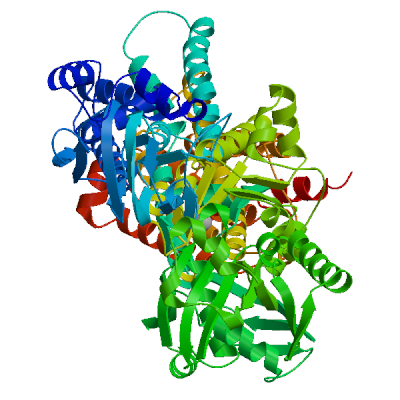
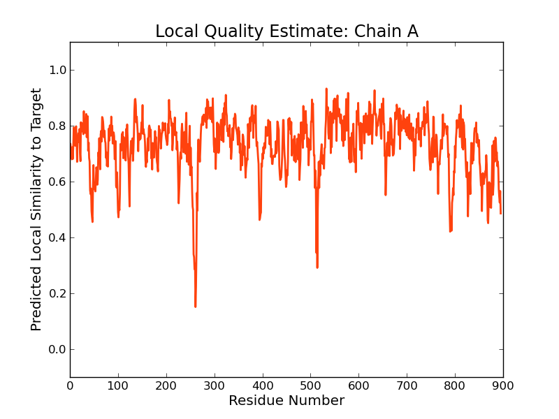
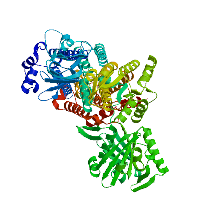
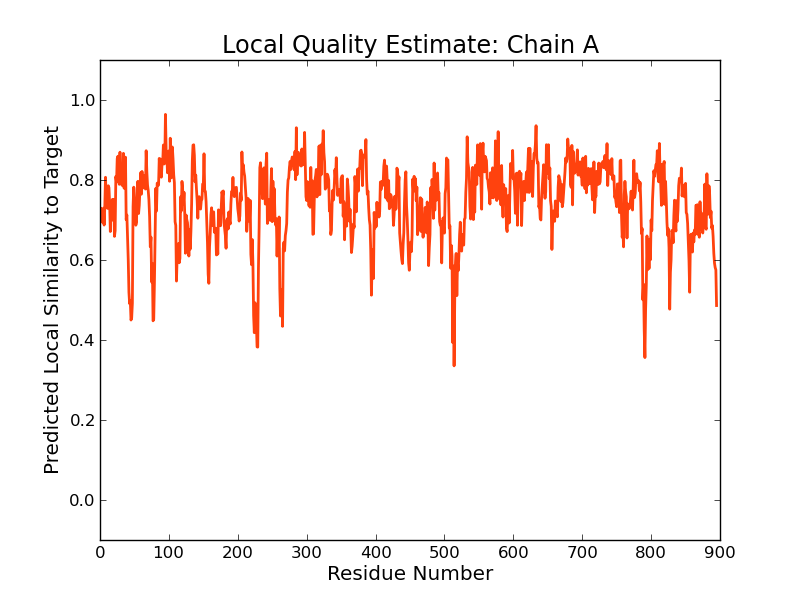
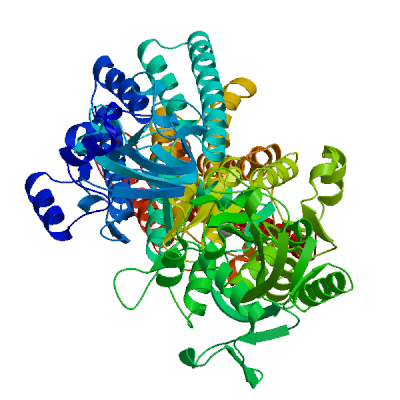
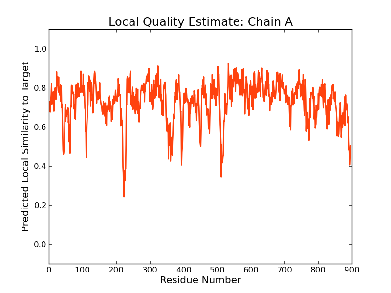
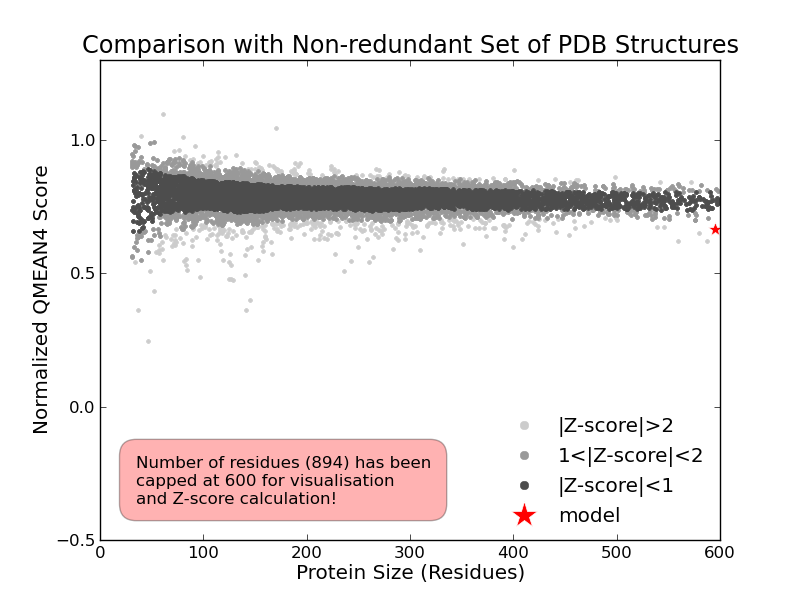
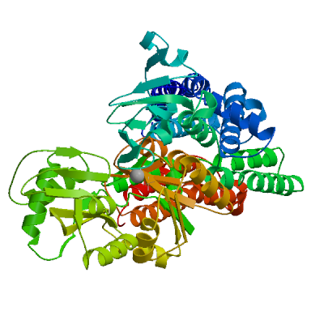
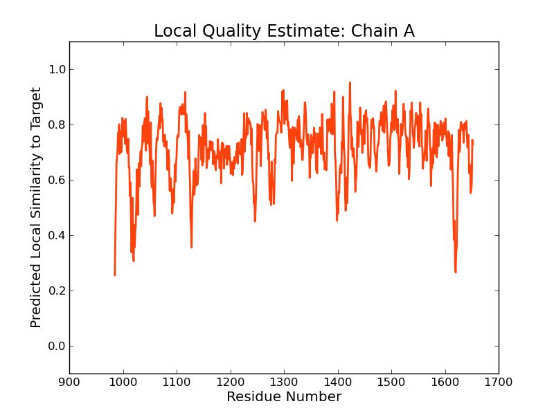

SWISS-MODEL Homology Modelling Report |
Model Building Report
This document lists the results for the homology modelling project "T451DRAFT_2467" submitted to SWISS-MODEL workspace on July 14, 2017, 9:47 p.m..The submitted primary amino acid sequence is given in Table T1.
If you use any results in your research, please cite the relevant publications:
Marco Biasini; Stefan Bienert; Andrew Waterhouse; Konstantin Arnold; Gabriel Studer; Tobias Schmidt; Florian Kiefer; Tiziano Gallo Cassarino; Martino Bertoni; Lorenza Bordoli; Torsten Schwede. (2014). SWISS-MODEL: modelling protein tertiary and quaternary structure using evolutionary information. Nucleic Acids Research (1 July 2014) 42 (W1): W252-W258; doi: 10.1093/nar/gku340.Arnold, K., Bordoli, L., Kopp, J. and Schwede, T. (2006) The SWISS-MODEL workspace: a web-based environment for protein structure homology modelling. Bioinformatics, 22, 195-201.
Benkert, P., Biasini, M. and Schwede, T. (2011) Toward the estimation of the absolute quality of individual protein structure models. Bioinformatics, 27, 343-350
Results
The SWISS-MODEL template library (SMTL version 2017-07-12, PDB release 2017-07-07) was searched with Blast (Altschul et al., 1997) and HHBlits (Remmert, et al., 2011) for evolutionary related structures matching the target sequence in Table T1. For details on the template search, see Materials and Methods. Overall 1183 templates were found (Table T2).
Models
The following models were built (see Materials and Methods "Model Building"):
Model #02 | File | Built with | Oligo-State | Ligands | GMQE | QMEAN |
|---|---|---|---|---|---|---|
|  | PDB | ProMod3 Version 1.0.2. | MONOMER |
1 x ALF: TETRAFLUOROALUMINATE ION;
1 x MG: MAGNESIUM ION; | 0.41 | -2.30 |
|  |
| Template | Seq Identity | Oligo-state | Found by | Method | Resolution | Seq Similarity | Range | Coverage | Description |
|---|---|---|---|---|---|---|---|---|---|
| 5xaa.1.A | 35.12 | monomer | HHblits | X-ray | 3.20Å | 0.37 | 1 - 895 | 0.54 | Sarcoplasmic/endoplasmic reticulum calcium ATPase 1 |
| Ligand | Added to Model | Description | |
|---|---|---|---|
| ALF | ✓ | TETRAFLUOROALUMINATE ION | |
| MG | ✓ | MAGNESIUM ION | |
| PCW | ✕ - Not biologically relevant. | 1,2-DIOLEOYL-SN-GLYCERO-3-PHOSPHOCHOLINE | |
| PCW | ✕ - Binding site not conserved. | 1,2-DIOLEOYL-SN-GLYCERO-3-PHOSPHOCHOLINE | |
| PCW | ✕ - Not biologically relevant. | 1,2-DIOLEOYL-SN-GLYCERO-3-PHOSPHOCHOLINE | |
| PCW | ✕ - Not biologically relevant. | 1,2-DIOLEOYL-SN-GLYCERO-3-PHOSPHOCHOLINE | |
| PCW | ✕ - Binding site not conserved. | 1,2-DIOLEOYL-SN-GLYCERO-3-PHOSPHOCHOLINE | |
| PCW | ✕ - Binding site not conserved. | 1,2-DIOLEOYL-SN-GLYCERO-3-PHOSPHOCHOLINE | |
| PCW | ✕ - Not biologically relevant. | 1,2-DIOLEOYL-SN-GLYCERO-3-PHOSPHOCHOLINE | |
| PCW | ✕ - Binding site not conserved. | 1,2-DIOLEOYL-SN-GLYCERO-3-PHOSPHOCHOLINE | |
| PCW | ✕ - Binding site not conserved. | 1,2-DIOLEOYL-SN-GLYCERO-3-PHOSPHOCHOLINE | |
| PCW | ✕ - Binding site not conserved. | 1,2-DIOLEOYL-SN-GLYCERO-3-PHOSPHOCHOLINE | |
| PCW | ✕ - Not biologically relevant. | 1,2-DIOLEOYL-SN-GLYCERO-3-PHOSPHOCHOLINE | |
| PCW | ✕ - Not biologically relevant. | 1,2-DIOLEOYL-SN-GLYCERO-3-PHOSPHOCHOLINE | |
| PCW | ✕ - Not biologically relevant. | 1,2-DIOLEOYL-SN-GLYCERO-3-PHOSPHOCHOLINE | |
| PCW | ✕ - Not biologically relevant. | 1,2-DIOLEOYL-SN-GLYCERO-3-PHOSPHOCHOLINE | |
| PCW | ✕ - Not biologically relevant. | 1,2-DIOLEOYL-SN-GLYCERO-3-PHOSPHOCHOLINE | |
| PCW | ✕ - Binding site not conserved. | 1,2-DIOLEOYL-SN-GLYCERO-3-PHOSPHOCHOLINE | |
| PCW | ✕ - Not biologically relevant. | 1,2-DIOLEOYL-SN-GLYCERO-3-PHOSPHOCHOLINE | |
| PCW | ✕ - Binding site not conserved. | 1,2-DIOLEOYL-SN-GLYCERO-3-PHOSPHOCHOLINE | |
| PCW | ✕ - Binding site not conserved. | 1,2-DIOLEOYL-SN-GLYCERO-3-PHOSPHOCHOLINE | |
| PCW | ✕ - Binding site not conserved. | 1,2-DIOLEOYL-SN-GLYCERO-3-PHOSPHOCHOLINE | |
| PCW | ✕ - Not biologically relevant. | 1,2-DIOLEOYL-SN-GLYCERO-3-PHOSPHOCHOLINE | |
| PCW | ✕ - Not biologically relevant. | 1,2-DIOLEOYL-SN-GLYCERO-3-PHOSPHOCHOLINE | |
| PCW | ✕ - Binding site not conserved. | 1,2-DIOLEOYL-SN-GLYCERO-3-PHOSPHOCHOLINE | |
| PCW | ✕ - Binding site not conserved. | 1,2-DIOLEOYL-SN-GLYCERO-3-PHOSPHOCHOLINE | |
| PCW | ✕ - Binding site not conserved. | 1,2-DIOLEOYL-SN-GLYCERO-3-PHOSPHOCHOLINE | |
| PCW | ✕ - Not biologically relevant. | 1,2-DIOLEOYL-SN-GLYCERO-3-PHOSPHOCHOLINE | |
| PCW | ✕ - Not biologically relevant. | 1,2-DIOLEOYL-SN-GLYCERO-3-PHOSPHOCHOLINE | |
| PCW | ✕ - Binding site not conserved. | 1,2-DIOLEOYL-SN-GLYCERO-3-PHOSPHOCHOLINE | |
| PCW | ✕ - Not biologically relevant. | 1,2-DIOLEOYL-SN-GLYCERO-3-PHOSPHOCHOLINE | |
| PCW | ✕ - Not biologically relevant. | 1,2-DIOLEOYL-SN-GLYCERO-3-PHOSPHOCHOLINE | |
| PCW | ✕ - Not biologically relevant. | 1,2-DIOLEOYL-SN-GLYCERO-3-PHOSPHOCHOLINE | |
| PCW | ✕ - Not biologically relevant. | 1,2-DIOLEOYL-SN-GLYCERO-3-PHOSPHOCHOLINE | |
| PCW | ✕ - Not biologically relevant. | 1,2-DIOLEOYL-SN-GLYCERO-3-PHOSPHOCHOLINE | |
| TG1 | ✕ - Binding site not conserved. | OCTANOIC ACID [3S-[3ALPHA, 3ABETA, 4ALPHA, 6BETA, 6ABETA, 7BETA, 8ALPHA(Z), 9BALPHA]]-6-(ACETYLOXY)-2,3,-3A,4,5,6,6A,7,8,9B-DECAHYDRO-3,3A-DIHYDROXY-3,6,9-TRIMETHYL-8-[(2-METHYL-1-OXO-2-BUTENYL)OXY]-2-OXO-4-(1-OXOBUTOXY)-AZULENO[4,5-B]FURAN-7-YL ESTER |
Target MNAWHKLSITEVASRLATDVEQGLSANEAKKRLARYGQNKLRKGKRFSALVIFVSQFKSLVIWVLIGAAAVSAALG----
5xaa.1.A MEAAHSKSTEECLAYFGVSETTGLTPDQVKRHLEKYGHNELPAEEGKSLWELVIEQFEDLLVRILLLAACISFVLAWFEE
Target ------ETIDGTAIIAIVILNAIIGFIQEYRAEKAAAALARLTAPHCRVVRGGH--TLVVTAIEIVPGDILLLEGGDLIA
5xaa.1.A GEETITAFVEPFVILLILIANAIVGVWQERNAENAIEALKEYEPEMGKVYRADRKSVQRIKARDIVPGDIVEVAVGDKVP
Target ADARLIQ--TSVLRINEAPLTGESQAVGKSTDSLPP-ETPLADRNNMVFLGTSVTGGTGRALVVNTGMETELGHIATLLD
5xaa.1.A ADIRILSIKSTTLRVDQSILTGESVSVIKHTEPVPDPRAVNQDKKNMLFSGTNIAAGKALGIVATTGVSTEIGKIRDQMA
Target TAESGETPLQRQLERAGRLLLMACFGIVTLIFGLGLLR------GIAPF----ELFLSSVSLAVAAIPEGLPAVVTIALA
5xaa.1.A ATEQDKTPLQQKLDEFGEQLSKVISLICVAVWLINIGHFNDPVHGGSWIRGAIYYFKIAVALAVAAIPEGLPAVITTCLA
Target LGVQRMVRRHALVRRLASVETLGRAQVICTDKTGTLTMGEMTTRKLITSTNL---------YRVTGEGYATEGAFFSGNV
5xaa.1.A LGTRRMAKKNAIVRSLPSVETLGCTSVICSDKTGTLTTNQMSVCKMFIIDKVDGDFCSLNEFSITGSTYAPEGEVLKNDK
Target ESLPSESPELLALLRTLAACNDAELTLID--NRPGVIGDPTEGALLVAAAKGGFTR----------------EVFETEMP
5xaa.1.A PIRSGQFDGLVELATICALCNDSSLDFNETKGVYEKVGEATETALTTLVEKMNVFNTEVRNLSKVERANACNSVIRQLMK
Target RLATVPFDSDRKRMTVIRNRE------SCIWAFVKGAPEVILSRCTLIRTDQGVRELTENDRSRLIQANALLA--HDALR
5xaa.1.A KEFTLEFSRDRKSMSVYCSPAKSSRAAVGNKMFVKGAPEGVIDRCNYVRVGTTRVPMTGPVKEKILSVIKEWGTGRDTLR
Target VLAVAERPLDGFSFEAG--RSVNDAEIEQELILLGLVGLQDPPRGEAKEAVAKCKRAGIKTVMITGDHPDTAQAIGHELG
5xaa.1.A CLALATRDTPPKREEMVLDDSSRFMEYETDLTFVGVVGMLDPPRKEVMGSIQLCRDAGIRVIMITGDNKGTAIAICRRIG
Target ILGKG----DEVLVGTELDRLDDEALKQRVAQVAVYARVTAEHKLRIVRAWKALGAVVAMTGDGVNDAPAIKEASIGIAM
5xaa.1.A IFGENEEVADRAYTGREFDDLPLAEQREACRRACCFARVEPSHKSKIVEYLQSYDEITAMTGDGVNDAPALKKAEIGIAM
Target GITGTEVTKEAADMIVTDDNFASIVAAVEEGRGIYDNIAKTLAYLLGSSTGELIVMLVAVLLGWPLPLLPLHLLWINLVT
5xaa.1.A G-SGTAVAKTASEMVLADDNFSTIVAAVEEGRAIYNNMKQFIRYLISSNVGEVVCIFLTAALGLPEALIPVQLLWVNLVT
Target DGFAALALSTDPIDPDVLSRPPRH-SQSLLNRDLLKLTLFTGLLAASVTLGVFAYELY-I-IGN----------------
5xaa.1.A DGLPATALGFNPPDLDIMDRPPRSPKEPLISGWLFFRYMAIGGYVGAATVGAAAWWFMYAEDGPGVTYHQLTHFMQCTED
Target ------------SLDHARDAAFTALVITGLLRAFGARSEQRTLWQIGLFSNLRLFLVVAVSFTLQLAIHHVPMLQTLFQI
5xaa.1.A HPHFEGLDCEIFEAPEPMTMALSVLVTIEMCNALNSLSENQSLMRMPPWVNIWLLGSICLSMSLHFLILYVDPLPMIFKL
Target EPVSVNQCVSWISVGFIPLIVLELRKVIRRPRAAKDKTMKKYANETIYTCPMHPEVRLENPGTCPKCGMPLELMAPVESK
5xaa.1.A KALDLTQWLMVLKISLPVIGLDEILKFIARNY------------------------------------------------
Target VFESHAEYVCPMHPEIIRSEPGSCPKCGMALEPRDISGEEQESRELTAMSRRFWVSAALSIPVFILAMAHDLMPGMIANV
5xaa.1.A --------------------------------------------------------------------------------
Target FFTHWQQWIEFALATPVVLWGGWPFFQRGWRSVISRNLNMFTLIALGIGVAWIYSVTATFAPGIFPSAMRNLDGRVAVYF
5xaa.1.A --------------------------------------------------------------------------------
Target EAAAVITALVLLGQVLELRARSRTNQAIKMLLELAPKTARRVHGDGREEDIPLVQVQPGDILRVRPGEKIPVDGVVQQGY
5xaa.1.A --------------------------------------------------------------------------------
Target SSVDESMVTGEPIPVEKNAGDRLIGATVNGTGSLLMLAEKVGGETLLARIVKMVSEAQRSRAPIQKLADVVAAWFVPAVV
5xaa.1.A --------------------------------------------------------------------------------
Target IIAVIALIVWWQWGPEPRLAHAVVNAVAVLIIACPCALGLATPMSIMVGTGRGAQLGVLIKNAEALEIMEKIDTLVVDKT
5xaa.1.A --------------------------------------------------------------------------------
Target GTLTEGKPRLMSVIACKNFSEEEVLYLGASLERASEHPLAAAIVKGAEEKGIKLTAGEQFESVTGQGVRGRISGRQVALG
5xaa.1.A --------------------------------------------------------------------------------
Target NAQLMAAQNIDITPLQKQADELRLEGQTVMFVAVDGKLGGFISVADPIKSSTQEALKSLHEAGIKVVMLTGDNKTTAHAV
5xaa.1.A --------------------------------------------------------------------------------
Target AKKLGIDRVEAEVLPEQKTAFVKQLQAEGHIVAMAGDGINDAPALAQAHVGIAMGTGTDVAMESAGITLVKGDLRGIARS
5xaa.1.A --------------------------------------------------------------------------------
Target RRLSQATMSNIRQNLFFAFIYNALGVPVAAGVLYPFFGILLSPMIAAAAMSFSSVSVIMNALRLRKLSL
5xaa.1.A ---------------------------------------------------------------------
Model #01 | File | Built with | Oligo-State | Ligands | GMQE | QMEAN |
|---|---|---|---|---|---|---|
|  | PDB | ProMod3 Version 1.0.2. | MONOMER | None | 0.41 | -2.56 |
|  |
| Template | Seq Identity | Oligo-state | Found by | Method | Resolution | Seq Similarity | Range | Coverage | Description |
|---|---|---|---|---|---|---|---|---|---|
| 5xa7.1.A | 35.12 | monomer | HHblits | X-ray | 3.20Å | 0.37 | 1 - 895 | 0.54 | Sarcoplasmic/endoplasmic reticulum calcium ATPase 1 |
| Ligand | Added to Model | Description |
|---|---|---|
| CA | ✕ - Binding site not conserved. | CALCIUM ION |
| CA | ✕ - Binding site not conserved. | CALCIUM ION |
| NA | ✕ - Not biologically relevant. | SODIUM ION |
| PCW | ✕ - Not biologically relevant. | 1,2-DIOLEOYL-SN-GLYCERO-3-PHOSPHOCHOLINE |
| PCW | ✕ - Binding site not conserved. | 1,2-DIOLEOYL-SN-GLYCERO-3-PHOSPHOCHOLINE |
| PCW | ✕ - Not biologically relevant. | 1,2-DIOLEOYL-SN-GLYCERO-3-PHOSPHOCHOLINE |
| PCW | ✕ - Binding site not conserved. | 1,2-DIOLEOYL-SN-GLYCERO-3-PHOSPHOCHOLINE |
| PCW | ✕ - Not biologically relevant. | 1,2-DIOLEOYL-SN-GLYCERO-3-PHOSPHOCHOLINE |
| PCW | ✕ - Not biologically relevant. | 1,2-DIOLEOYL-SN-GLYCERO-3-PHOSPHOCHOLINE |
| PCW | ✕ - Not biologically relevant. | 1,2-DIOLEOYL-SN-GLYCERO-3-PHOSPHOCHOLINE |
| PCW | ✕ - Binding site not conserved. | 1,2-DIOLEOYL-SN-GLYCERO-3-PHOSPHOCHOLINE |
| PCW | ✕ - Not biologically relevant. | 1,2-DIOLEOYL-SN-GLYCERO-3-PHOSPHOCHOLINE |
| PCW | ✕ - Binding site not conserved. | 1,2-DIOLEOYL-SN-GLYCERO-3-PHOSPHOCHOLINE |
| PCW | ✕ - Not biologically relevant. | 1,2-DIOLEOYL-SN-GLYCERO-3-PHOSPHOCHOLINE |
| PCW | ✕ - Not biologically relevant. | 1,2-DIOLEOYL-SN-GLYCERO-3-PHOSPHOCHOLINE |
| PCW | ✕ - Not biologically relevant. | 1,2-DIOLEOYL-SN-GLYCERO-3-PHOSPHOCHOLINE |
| PCW | ✕ - Not biologically relevant. | 1,2-DIOLEOYL-SN-GLYCERO-3-PHOSPHOCHOLINE |
| PCW | ✕ - Binding site not conserved. | 1,2-DIOLEOYL-SN-GLYCERO-3-PHOSPHOCHOLINE |
| PCW | ✕ - Not biologically relevant. | 1,2-DIOLEOYL-SN-GLYCERO-3-PHOSPHOCHOLINE |
| PCW | ✕ - Not biologically relevant. | 1,2-DIOLEOYL-SN-GLYCERO-3-PHOSPHOCHOLINE |
| PCW | ✕ - Binding site not conserved. | 1,2-DIOLEOYL-SN-GLYCERO-3-PHOSPHOCHOLINE |
| PCW | ✕ - Not biologically relevant. | 1,2-DIOLEOYL-SN-GLYCERO-3-PHOSPHOCHOLINE |
| PCW | ✕ - Not biologically relevant. | 1,2-DIOLEOYL-SN-GLYCERO-3-PHOSPHOCHOLINE |
| PCW | ✕ - Not biologically relevant. | 1,2-DIOLEOYL-SN-GLYCERO-3-PHOSPHOCHOLINE |
| PCW | ✕ - Binding site not conserved. | 1,2-DIOLEOYL-SN-GLYCERO-3-PHOSPHOCHOLINE |
| PCW | ✕ - Not biologically relevant. | 1,2-DIOLEOYL-SN-GLYCERO-3-PHOSPHOCHOLINE |
| PCW | ✕ - Not biologically relevant. | 1,2-DIOLEOYL-SN-GLYCERO-3-PHOSPHOCHOLINE |
| PCW | ✕ - Not biologically relevant. | 1,2-DIOLEOYL-SN-GLYCERO-3-PHOSPHOCHOLINE |
| PCW | ✕ - Not biologically relevant. | 1,2-DIOLEOYL-SN-GLYCERO-3-PHOSPHOCHOLINE |
| PCW | ✕ - Not biologically relevant. | 1,2-DIOLEOYL-SN-GLYCERO-3-PHOSPHOCHOLINE |
| PCW | ✕ - Not biologically relevant. | 1,2-DIOLEOYL-SN-GLYCERO-3-PHOSPHOCHOLINE |
| PCW | ✕ - Not biologically relevant. | 1,2-DIOLEOYL-SN-GLYCERO-3-PHOSPHOCHOLINE |
| PCW | ✕ - Binding site not conserved. | 1,2-DIOLEOYL-SN-GLYCERO-3-PHOSPHOCHOLINE |
| PCW | ✕ - Not biologically relevant. | 1,2-DIOLEOYL-SN-GLYCERO-3-PHOSPHOCHOLINE |
| PCW | ✕ - Binding site not conserved. | 1,2-DIOLEOYL-SN-GLYCERO-3-PHOSPHOCHOLINE |
| PCW | ✕ - Not biologically relevant. | 1,2-DIOLEOYL-SN-GLYCERO-3-PHOSPHOCHOLINE |
| PCW | ✕ - Binding site not conserved. | 1,2-DIOLEOYL-SN-GLYCERO-3-PHOSPHOCHOLINE |
Target MNAWHKLSITEVASRLATDVEQGLSANEAKKRLARYGQNKLRKGKRFSALVIFVSQFKSLVIWVLIGAAAVSAALG----
5xa7.1.A MEAAHSKSTEECLAYFGVSETTGLTPDQVKRHLEKYGHNELPAEEGKSLWELVIEQFEDLLVRILLLAACISFVLAWFEE
Target ------ETIDGTAIIAIVILNAIIGFIQEYRAEKAAAALARLTAPHCRVVRGGH--TLVVTAIEIVPGDILLLEGGDLIA
5xa7.1.A GEETITAFVEPFVILLILIANAIVGVWQERNAENAIEALKEYEPEMGKVYRADRKSVQRIKARDIVPGDIVEVAVGDKVP
Target ADARLIQ--TSVLRINEAPLTGESQAVGKSTDSLPP-ETPLADRNNMVFLGTSVTGGTGRALVVNTGMETELGHIATLLD
5xa7.1.A ADIRILSIKSTTLRVDQSILTGESVSVIKHTEPVPDPRAVNQDKKNMLFSGTNIAAGKALGIVATTGVSTEIGKIRDQMA
Target TAESGETPLQRQLERAGRLLLMACFGIVTLIFGLGLLR------GIAPF----ELFLSSVSLAVAAIPEGLPAVVTIALA
5xa7.1.A ATEQDKTPLQQKLDEFGEQLSKVISLICVAVWLINIGHFNDPVHGGSWIRGAIYYFKIAVALAVAAIPEGLPAVITTCLA
Target LGVQRMVRRHALVRRLASVETLGRAQVICTDKTGTLTMGEMTTRKLITSTNL---------YRVTGEGYATEGAFFSGNV
5xa7.1.A LGTRRMAKKNAIVRSLPSVETLGCTSVICSDKTGTLTTNQMSVCKMFIIDKVDGDFCSLNEFSITGSTYAPEGEVLKNDK
Target ESLPSESPELLALLRTLAACNDAELTLID--NRPGVIGDPTEGALLVAAAKGGFTR----------------EVFETEMP
5xa7.1.A PIRSGQFDGLVELATICALCNDSSLDFNETKGVYEKVGEATETALTTLVEKMNVFNTEVRNLSKVERANACNSVIRQLMK
Target RLATVPFDSDRKRMTVIRNRE------SCIWAFVKGAPEVILSRCTLIRTDQGVRELTENDRSRLIQANALLA--HDALR
5xa7.1.A KEFTLEFSRDRKSMSVYCSPAKSSRAAVGNKMFVKGAPEGVIDRCNYVRVGTTRVPMTGPVKEKILSVIKEWGTGRDTLR
Target VLAVAERPLDGFSFEAG--RSVNDAEIEQELILLGLVGLQDPPRGEAKEAVAKCKRAGIKTVMITGDHPDTAQAIGHELG
5xa7.1.A CLALATRDTPPKREEMVLDDSSRFMEYETDLTFVGVVGMLDPPRKEVMGSIQLCRDAGIRVIMITGDNKGTAIAICRRIG
Target ILGKG----DEVLVGTELDRLDDEALKQRVAQVAVYARVTAEHKLRIVRAWKALGAVVAMTGDGVNDAPAIKEASIGIAM
5xa7.1.A IFGENEEVADRAYTGREFDDLPLAEQREACRRACCFARVEPSHKSKIVEYLQSYDEITAMTGDGVNDAPALKKAEIGIAM
Target GITGTEVTKEAADMIVTDDNFASIVAAVEEGRGIYDNIAKTLAYLLGSSTGELIVMLVAVLLGWPLPLLPLHLLWINLVT
5xa7.1.A G-SGTAVAKTASEMVLADDNFSTIVAAVEEGRAIYNNMKQFIRYLISSNVGEVVCIFLTAALGLPEALIPVQLLWVNLVT
Target DGFAALALSTDPIDPDVLSRPPRH-SQSLLNRDLLKLTLFTGLLAASVTLGVFAYELY-I-IGN----------------
5xa7.1.A DGLPATALGFNPPDLDIMDRPPRSPKEPLISGWLFFRYMAIGGYVGAATVGAAAWWFMYAEDGPGVTYHQLTHFMQCTED
Target ------------SLDHARDAAFTALVITGLLRAFGARSEQRTLWQIGLFSNLRLFLVVAVSFTLQLAIHHVPMLQTLFQI
5xa7.1.A HPHFEGLDCEIFEAPEPMTMALSVLVTIEMCNALNSLSENQSLMRMPPWVNIWLLGSICLSMSLHFLILYVDPLPMIFKL
Target EPVSVNQCVSWISVGFIPLIVLELRKVIRRPRAAKDKTMKKYANETIYTCPMHPEVRLENPGTCPKCGMPLELMAPVESK
5xa7.1.A KALDLTQWLMVLKISLPVIGLDEILKFIARNY------------------------------------------------
Target VFESHAEYVCPMHPEIIRSEPGSCPKCGMALEPRDISGEEQESRELTAMSRRFWVSAALSIPVFILAMAHDLMPGMIANV
5xa7.1.A --------------------------------------------------------------------------------
Target FFTHWQQWIEFALATPVVLWGGWPFFQRGWRSVISRNLNMFTLIALGIGVAWIYSVTATFAPGIFPSAMRNLDGRVAVYF
5xa7.1.A --------------------------------------------------------------------------------
Target EAAAVITALVLLGQVLELRARSRTNQAIKMLLELAPKTARRVHGDGREEDIPLVQVQPGDILRVRPGEKIPVDGVVQQGY
5xa7.1.A --------------------------------------------------------------------------------
Target SSVDESMVTGEPIPVEKNAGDRLIGATVNGTGSLLMLAEKVGGETLLARIVKMVSEAQRSRAPIQKLADVVAAWFVPAVV
5xa7.1.A --------------------------------------------------------------------------------
Target IIAVIALIVWWQWGPEPRLAHAVVNAVAVLIIACPCALGLATPMSIMVGTGRGAQLGVLIKNAEALEIMEKIDTLVVDKT
5xa7.1.A --------------------------------------------------------------------------------
Target GTLTEGKPRLMSVIACKNFSEEEVLYLGASLERASEHPLAAAIVKGAEEKGIKLTAGEQFESVTGQGVRGRISGRQVALG
5xa7.1.A --------------------------------------------------------------------------------
Target NAQLMAAQNIDITPLQKQADELRLEGQTVMFVAVDGKLGGFISVADPIKSSTQEALKSLHEAGIKVVMLTGDNKTTAHAV
5xa7.1.A --------------------------------------------------------------------------------
Target AKKLGIDRVEAEVLPEQKTAFVKQLQAEGHIVAMAGDGINDAPALAQAHVGIAMGTGTDVAMESAGITLVKGDLRGIARS
5xa7.1.A --------------------------------------------------------------------------------
Target RRLSQATMSNIRQNLFFAFIYNALGVPVAAGVLYPFFGILLSPMIAAAAMSFSSVSVIMNALRLRKLSL
5xa7.1.A ---------------------------------------------------------------------
Model #03 | File | Built with | Oligo-State | Ligands | GMQE | QMEAN |
|---|---|---|---|---|---|---|
|  | PDB | ProMod3 Version 1.0.2. | MONOMER |
1 x ALF: TETRAFLUOROALUMINATE ION;
1 x MG: MAGNESIUM ION; | 0.39 | -2.82 |
|  |  |
| Template | Seq Identity | Oligo-state | Found by | Method | Resolution | Seq Similarity | Range | Coverage | Description |
|---|---|---|---|---|---|---|---|---|---|
| 3wgu.1.A | 32.16 | hetero-oligomer | HHblits | X-ray | 2.80Å | 0.35 | 3 - 896 | 0.53 | Sodium/potassium-transporting ATPase subunit alpha-1 |
| Ligand | Added to Model | Description | |
|---|---|---|---|
| ALF | ✓ | TETRAFLUOROALUMINATE ION | |
| MG | ✓ | MAGNESIUM ION | |
| ADP | ✕ - Binding site not conserved. | ADENOSINE-5'-DIPHOSPHATE | |
| CLR | ✕ - Binding site not conserved. | CHOLESTEROL | |
| CLR | ✕ - Binding site not conserved. | CHOLESTEROL | |
| CLR | ✕ - Binding site not conserved. | CHOLESTEROL | |
| MG | ✕ - Not biologically relevant. | MAGNESIUM ION | |
| NA | ✕ - Not biologically relevant. | SODIUM ION | |
| NA | ✕ - Not biologically relevant. | SODIUM ION | |
| NA | ✕ - Not biologically relevant. | SODIUM ION | |
| NA | ✕ - Not biologically relevant. | SODIUM ION | |
| NAG | ✕ - Binding site not conserved. | SUGAR (N-ACETYL-D-GLUCOSAMINE) | |
| PC1 | ✕ - Binding site not conserved. | 1,2-DIACYL-SN-GLYCERO-3-PHOSPHOCHOLINE | |
| PC1 | ✕ - Binding site not conserved. | 1,2-DIACYL-SN-GLYCERO-3-PHOSPHOCHOLINE | |
| PC1 | ✕ - Binding site not conserved. | 1,2-DIACYL-SN-GLYCERO-3-PHOSPHOCHOLINE | |
| PC1 | ✕ - Binding site not conserved. | 1,2-DIACYL-SN-GLYCERO-3-PHOSPHOCHOLINE | |
| PC1 | ✕ - Binding site not conserved. | 1,2-DIACYL-SN-GLYCERO-3-PHOSPHOCHOLINE |
Target MNAWHKLSITEVASRLATDVEQGLSANEAKKRLARYGQNKLRKGKRFSALVIFVSQFKSLVIWVLIGAAAVSAALG----
3wgu.1.A --DDHKLSLDELHRKYGTDLSRGLTPARAAEILARDGPNALTPPPTTPEWVKFCRQLFGGFSMLLWIGAILCFLAYGIQA
Target ---------ETIDGTAIIAIVILNAIIGFIQEYRAEKAAAALARLTAPHCRVVRGGHTLVVTAIEIVPGDILLLEGGDLI
3wgu.1.A ATEEEPQNDNLYLGVVLSAVVIITGCFSYYQEAKSSKIMESFKNMVPQQALVIRNGEKMSINAEEVVVGDLVEVKGGDRI
Target AADARLIQTSVLRINEAPLTGESQAVGKSTDSLPPETPLADRNNMVFLGTSVTGGTGRALVVNTGMETELGHIATLLDTA
3wgu.1.A PADLRIISANGCKVDNSSLTGESEPQTRSPDFTN-ENP-LETRNIAFFSTNCVEGTARGIVVYTGDRTVMGRIATLASGL
Target ESGETPLQRQLERAGRLLLMACFGIVTLIFGLGLLRGIAPFELFLSSVSLAVAAIPEGLPAVVTIALALGVQRMVRRHAL
3wgu.1.A EGGQTPIAAEIEHFIHIITGVAVFLGVSFFILSLILEYTWLEAVIFLIGIIVANVPEGLLATVTVCLTLTAKRMARKNCL
Target VRRLASVETLGRAQVICTDKTGTLTMGEMTTRKLITSTNLYRVTGEGYATEGAFFSGNVESLPSESPELLALLRTLAACN
3wgu.1.A VKNLEAVETLGSTSTICSDKTGTLTQNRMTVAHMWFDNQIHEADTTENQ-SGV-------SFDKTSATWLALSRIAGLCN
Target DAELTLID-N----RPGVIGDPTEGALLVAAAKGGFTREVFETEMPRLATVPFDSDRKRMTVIRNRE----SCIWAFVKG
3wgu.1.A RAVFQANQENLPILKRAVAGDASESALLKCIELCCGSVKEMRERYTKIVEIPFNSTNKYQLSIHKNPNTAEPRHLLVMKG
Target APEVILSRCTLIRTDQGVRELTENDRSRLIQANALLAHDALRVLAVAERPLDGFSFEAGRSVN---DAEIEQELILLGLV
3wgu.1.A APERILDRCSSILIHGKEQPLDEELKDAFQNAYLELGGLGERVLGFCHLFLPDEQFPEGFQFDTDDVNFPLDNLCFVGLI
Target GLQDPPRGEAKEAVAKCKRAGIKTVMITGDHPDTAQAIGHELGILGKG------------------------DEVLVGTE
3wgu.1.A SMIDPPRAAVPDAVGKCRSAGIKVIMVTGDHPITAKAIAKGVGIISEGNETVEDIAARLNIPVSQVNPRDAKACVVHGSD
Target LDRLDDEALKQRVAQV--AVYARVTAEHKLRIVRAWKALGAVVAMTGDGVNDAPAIKEASIGIAMGITGTEVTKEAADMI
3wgu.1.A LKDMTSEQLDDILKYHTEIVFARTSPQQKLIIVEGCQRQGAIVAVTGDGVNDSPALKKADIGVAMGIAGSDVSKQAADMI
Target VTDDNFASIVAAVEEGRGIYDNIAKTLAYLLGSSTGELIVMLVAVLLGWPLPLLPLHLLWINLVTDGFAALALSTDPIDP
3wgu.1.A LLDDNFASIVTGVEEGRLIFDNLKKSIAYTLTSNIPEITPFLIFIIANIPLPLGTVTILCIDLGTDMVPAISLAYEQAES
Target DVLSRPPRH--SQSLLNRDLLKL-TLFTGLLAASVTLGVFAYELYIIG------------N-------------------
3wgu.1.A DIMKRQPRNPKTDKLVNERLISMAYGQIGMIQALGGFFTYFVILAENGFLPIHLLGLRVNWDDRWINDVEDSYGQQWTYE
Target ----SLDHARDAAFTALVITGLLRAFGARSEQRTLWQIGLFSNLRLFLVVAVSFTLQLAIHHVPMLQTLFQIEPVSVNQC
3wgu.1.A QRKIVEFTCHTAFFVSIVVVQWADLVICKTRRNSVFQQGM-KNKILIFGLFEETALAAFLSYCPGMGVALRMYPLKPTWW
Target VSWISVGFIPLIVLELRKVIRRPRAAKDKTMKKYANETIYTCPMHPEVRLENPGTCPKCGMPLELMAPVESKVFESHAEY
3wgu.1.A FCAFPYSLLIFVYDEVRKLIIRRRP-------------------------------------------------------
Target VCPMHPEIIRSEPGSCPKCGMALEPRDISGEEQESRELTAMSRRFWVSAALSIPVFILAMAHDLMPGMIANVFFTHWQQW
3wgu.1.A --------------------------------------------------------------------------------
Target IEFALATPVVLWGGWPFFQRGWRSVISRNLNMFTLIALGIGVAWIYSVTATFAPGIFPSAMRNLDGRVAVYFEAAAVITA
3wgu.1.A --------------------------------------------------------------------------------
Target LVLLGQVLELRARSRTNQAIKMLLELAPKTARRVHGDGREEDIPLVQVQPGDILRVRPGEKIPVDGVVQQGYSSVDESMV
3wgu.1.A --------------------------------------------------------------------------------
Target TGEPIPVEKNAGDRLIGATVNGTGSLLMLAEKVGGETLLARIVKMVSEAQRSRAPIQKLADVVAAWFVPAVVIIAVIALI
3wgu.1.A --------------------------------------------------------------------------------
Target VWWQWGPEPRLAHAVVNAVAVLIIACPCALGLATPMSIMVGTGRGAQLGVLIKNAEALEIMEKIDTLVVDKTGTLTEGKP
3wgu.1.A --------------------------------------------------------------------------------
Target RLMSVIACKNFSEEEVLYLGASLERASEHPLAAAIVKGAEEKGIKLTAGEQFESVTGQGVRGRISGRQVALGNAQLMAAQ
3wgu.1.A --------------------------------------------------------------------------------
Target NIDITPLQKQADELRLEGQTVMFVAVDGKLGGFISVADPIKSSTQEALKSLHEAGIKVVMLTGDNKTTAHAVAKKLGIDR
3wgu.1.A --------------------------------------------------------------------------------
Target VEAEVLPEQKTAFVKQLQAEGHIVAMAGDGINDAPALAQAHVGIAMGTGTDVAMESAGITLVKGDLRGIARSRRLSQATM
3wgu.1.A --------------------------------------------------------------------------------
Target SNIRQNLFFAFIYNALGVPVAAGVLYPFFGILLSPMIAAAAMSFSSVSVIMNALRLRKLSL
3wgu.1.A -------------------------------------------------------------
Model #04 | File | Built with | Oligo-State | Ligands | GMQE | QMEAN |
|---|---|---|---|---|---|---|
|  | PDB | ProMod3 Version 1.0.2. | MONOMER |
1 x ALF: TETRAFLUOROALUMINATE ION;
1 x MG: MAGNESIUM ION; | 0.32 | -3.67 |
|  |
| Template | Seq Identity | Oligo-state | Found by | Method | Resolution | Seq Similarity | Range | Coverage | Description |
|---|---|---|---|---|---|---|---|---|---|
| 3rfu.1.A | 63.52 | monomer | HHblits | X-ray | 3.20Å | 0.48 | 985 - 1652 | 0.42 | Copper efflux ATPase |
| Ligand | Added to Model | Description | |
|---|---|---|---|
| ALF | ✓ | TETRAFLUOROALUMINATE ION | |
| MG | ✓ | MAGNESIUM ION | |
| K | ✕ - Binding site not conserved. | POTASSIUM ION |
Target MNAWHKLSITEVASRLATDVEQGLSANEAKKRLARYGQNKLRKGKRFSALVIFVSQFKSLVIWVLIGAAAVSAALGETID
3rfu.1.A --------------------------------------------------------------------------------
Target GTAIIAIVILNAIIGFIQEYRAEKAAAALARLTAPHCRVVRGGHTLVVTAIEIVPGDILLLEGGDLIAADARLIQTSVLR
3rfu.1.A --------------------------------------------------------------------------------
Target INEAPLTGESQAVGKSTDSLPPETPLADRNNMVFLGTSVTGGTGRALVVNTGMETELGHIATLLDTAESGETPLQRQLER
3rfu.1.A --------------------------------------------------------------------------------
Target AGRLLLMACFGIVTLIFGLGLLRGIAPFELFLSSVSLAVAAIPEGLPAVVTIALALGVQRMVRRHALVRRLASVETLGRA
3rfu.1.A --------------------------------------------------------------------------------
Target QVICTDKTGTLTMGEMTTRKLITSTNLYRVTGEGYATEGAFFSGNVESLPSESPELLALLRTLAACNDAELTLIDNRPGV
3rfu.1.A --------------------------------------------------------------------------------
Target IGDPTEGALLVAAAKGGFTREVFETEMPRLATVPFDSDRKRMTVIRNRESCIWAFVKGAPEVILSRCTLIRTDQGVRELT
3rfu.1.A --------------------------------------------------------------------------------
Target ENDRSRLIQANALLAHDALRVLAVAERPLDGFSFEAGRSVNDAEIEQELILLGLVGLQDPPRGEAKEAVAKCKRAGIKTV
3rfu.1.A --------------------------------------------------------------------------------
Target MITGDHPDTAQAIGHELGILGKGDEVLVGTELDRLDDEALKQRVAQVAVYARVTAEHKLRIVRAWKALGAVVAMTGDGVN
3rfu.1.A --------------------------------------------------------------------------------
Target DAPAIKEASIGIAMGITGTEVTKEAADMIVTDDNFASIVAAVEEGRGIYDNIAKTLAYLLGSSTGELIVMLVAVLLGWPL
3rfu.1.A --------------------------------------------------------------------------------
Target PLLPLHLLWINLVTDGFAALALSTDPIDPDVLSRPPRHSQSLLNRDLLKLTLFTGLLAASVTLGVFAYELYIIGNSLDHA
3rfu.1.A --------------------------------------------------------------------------------
Target RDAAFTALVITGLLRAFGARSEQRTLWQIGLFSNLRLFLVVAVSFTLQLAIHHVPMLQTLFQIEPVSVNQCVSWISVGFI
3rfu.1.A --------------------------------------------------------------------------------
Target PLIVLELRKVIRRPRAAKDKTMKKYANETIYTCPMHPEVRLENPGTCPKCGMPLELMAPVESKVFESHAEYVCPMHPEII
3rfu.1.A --------------------------------------------------------------------IVYTCPMHPEIR
Target RSEPGSCPKCGMALEPRDISGEEQESRELTAMSRRFWVSAALSIPVFILAMAHDLMPGMIANVFFTHWQQWIEFALATPV
3rfu.1.A QSAPGHCPLCGMALEPETVTVSEVVSPEYLDMRRRFWIALMLTIPVVILEMGGH---GLK-HFISGNGSSWIQLLLATPV
Target VLWGGWPFFQRGWRSVISRNLNMFTLIALGIGVAWIYSVTATFAPGIFPSAMRNLDGRVAVYFEAAAVITALVLLGQVLE
3rfu.1.A VLWGGWPFFKRGWQSLKTGQLNMFTLIAMGIGVAWIYSMVAVLWPGVFPHAFRSQEGVVAVYFEAAAVITTLVLLGQVLE
Target LRARSRTNQAIKMLLELAPKTARRVHGDGREEDIPLVQVQPGDILRVRPGEKIPVDGVVQQGYSSVDESMVTGEPIPVEK
3rfu.1.A LKAREQTGSAIRALLKLVPESAHRIKEDGSEEEVSLDNVAVGDLLRVRPGEKIPVDGEVQEGRSFVDESMVTGEPIPVAK
Target NAGDRLIGATVNGTGSLLMLAEKVGGETLLARIVKMVSEAQRSRAPIQKLADVVAAWFVPAVVIIAVIALIVWWQWGPEP
3rfu.1.A EASAKVIGATINQTGSFVMKALHVGSDTMLARIVQMVSDAQRSRAPIQRLADTVSGWFVPAVILVAVLSFIVWALLGPQP
Target RLAHAVVNAVAVLIIACPCALGLATPMSIMVGTGRGAQLGVLIKNAEALEIMEKIDTLVVDKTGTLTEGKPRLMSVIACK
3rfu.1.A ALSYGLIAAVSVLIIACPCALGLATPMSIMVGVGKGAQSGVLIKNAEALERMEKVNTLVVDKTGTLTEGHPKLTRIV-TD
Target NFSEEEVLYLGASLERASEHPLAAAIVKGAEEKGIKLTAGEQFESVTGQGVRGRISGRQVALGNAQLMAAQNIDITPLQK
3rfu.1.A DFVEDNALALAAALEHQSEHPLANAIVHAAKEKGLSLGSVEAFEAPTGKGVVGQVDGHHVAIGNARLMQEHGGDNAPLFE
Target QADELRLEGQTVMFVAVDGKLGGFISVADPIKSSTQEALKSLHEAGIKVVMLTGDNKTTAHAVAKKLGIDRVEAEVLPEQ
3rfu.1.A KADELRGKGASVMFMAVDGKTVALLVVEDPIKSSTPETILELQQSGIEIVMLTGDSKRTAEAVAGTLGIKKVVAEIMPED
Target KTAFVKQLQAEGHIVAMAGDGINDAPALAQAHVGIAMGTGTDVAMESAGITLVKGDLRGIARSRRLSQATMSNIRQNLFF
3rfu.1.A KSRIVSELKDKGLIVAMAGDGVNDAPALAKADIGIAMGTGTDVAIESAGVTLLHGDLRGIAKARRLSESTMSNIRQNLFF
Target AFIYNALGVPVAAGVLYPFFGILLSPMIAAAAMSFSSVSVIMNALRLRKLSL
3rfu.1.A AFIYNVLGVPLAAGVLYPLTGLLLSPMIAAAAMALSSVSVIINALRLKRVTL
Materials and Methods
Template Search
Template search with Blast and HHBlits has been performed against the SWISS-MODEL template library (SMTL, last update: 2017-07-12, last included PDB release: 2017-07-07).
The target sequence was searched with BLAST (Altschul et al., 1997) against the primary amino acid sequence contained in the SMTL. A total of 192 templates were found.
An initial HHblits profile has been built using the procedure outlined in (Remmert, et al., 2011), followed by 1 iteration of HHblits against NR20. The obtained profile has then be searched against all profiles of the SMTL. A total of 1013 templates were found.
Template Selection
For each identified template, the template's quality has been predicted from features of the target-template alignment. The templates with the highest quality have then been selected for model building.
Model Building
Models are built based on the target-template alignment using ProMod3. Coordinates which are conserved between the target and the template are copied from the template to the model. Insertions and deletions are remodelled using a fragment library. Side chains are then rebuilt. Finally, the geometry of the resulting model is regularized by using a force field. In case loop modelling with ProMod3 fails, an alternative model is built with PROMOD-II (Guex, et al., 1997).
Model Quality Estimation
The global and per-residue model quality has been assessed using the QMEAN scoring function (Benkert, et al., 2011) . For improved performance, weights of the individual QMEAN terms have been trained specifically for SWISS-MODEL.
Ligand Modelling
Ligands present in the template structure are transferred by homology to the model when the following criteria are met (Gallo -Casserino, to be published): (a) The ligands are annotated as biologically relevant in the template library, (b) the ligand is in contact with the model, (c) the ligand is not clashing with the protein, (d) the residues in contact with the ligand are conserved between the target and the template. If any of these four criteria is not satisfied, a certain ligand will not be included in the model. The model summary includes information on why and which ligand has not been included.
Oligomeric State Conservation
Homo-oligomeric structure of the target protein is predicted based on the analysis of pairwise interfaces of the identified template structures. For each relevant interface between polypeptide chains (interfaces with more than 10 residue-residue interactions), the QscoreOligomer (Mariani et al., 2011) is predicted from features such as similarity to target and frequency of observing this interface in the identified templates (Kiefer, Bertoni, Biasini, to be published). The prediction is performed with a random forest regressor using these features as input parameters to predict the probability of conservation for each interface. The QscoreOligomer of the whole complex is then calculated as the weight-averaged QscoreOligomer of the interfaces. The oligomeric state of the target is predicted to be the same as in the template when QscoreOligomer is predicted to be higher or equal to 0.5.
References
Altschul, S.F., Madden, T.L., Schaffer, A.A., Zhang, J., Zhang, Z., Miller, W. and Lipman, D.J. (1997) Gapped BLAST and PSI-BLAST: a new generation of protein database search programs. Nucleic Acids Res, 25, 3389-3402.
Remmert, M., Biegert, A., Hauser, A. and Soding, J. (2012) HHblits: lightning-fast iterative protein sequence searching by HMM-HMM alignment. Nat Methods, 9, 173-175.
Guex, N. and Peitsch, M.C. (1997) SWISS-MODEL and the Swiss-PdbViewer: an environment for comparative protein modeling. Electrophoresis, 18, 2714-2723.
Sali, A. and Blundell, T.L. (1993) Comparative protein modelling by satisfaction of spatial restraints. J Mol Biol, 234, 779-815.
Benkert, P., Biasini, M. and Schwede, T. (2011) Toward the estimation of the absolute quality of individual protein structure models. Bioinformatics, 27, 343-350.
Mariani, V., Kiefer, F., Schmidt, T., Haas, J. and Schwede, T. (2011) Assessment of template based protein structure predictions in CASP9. Proteins, 79 Suppl 10, 37-58.
Table T1:
Primary amino acid sequence for which templates were searched and models were built.
RAEKAAAALARLTAPHCRVVRGGHTLVVTAIEIVPGDILLLEGGDLIAADARLIQTSVLRINEAPLTGESQAVGKSTDSLPPETPLADRNNMVFLGTSVT
GGTGRALVVNTGMETELGHIATLLDTAESGETPLQRQLERAGRLLLMACFGIVTLIFGLGLLRGIAPFELFLSSVSLAVAAIPEGLPAVVTIALALGVQR
MVRRHALVRRLASVETLGRAQVICTDKTGTLTMGEMTTRKLITSTNLYRVTGEGYATEGAFFSGNVESLPSESPELLALLRTLAACNDAELTLIDNRPGV
IGDPTEGALLVAAAKGGFTREVFETEMPRLATVPFDSDRKRMTVIRNRESCIWAFVKGAPEVILSRCTLIRTDQGVRELTENDRSRLIQANALLAHDALR
VLAVAERPLDGFSFEAGRSVNDAEIEQELILLGLVGLQDPPRGEAKEAVAKCKRAGIKTVMITGDHPDTAQAIGHELGILGKGDEVLVGTELDRLDDEAL
KQRVAQVAVYARVTAEHKLRIVRAWKALGAVVAMTGDGVNDAPAIKEASIGIAMGITGTEVTKEAADMIVTDDNFASIVAAVEEGRGIYDNIAKTLAYLL
GSSTGELIVMLVAVLLGWPLPLLPLHLLWINLVTDGFAALALSTDPIDPDVLSRPPRHSQSLLNRDLLKLTLFTGLLAASVTLGVFAYELYIIGNSLDHA
RDAAFTALVITGLLRAFGARSEQRTLWQIGLFSNLRLFLVVAVSFTLQLAIHHVPMLQTLFQIEPVSVNQCVSWISVGFIPLIVLELRKVIRRPRAAKDK
TMKKYANETIYTCPMHPEVRLENPGTCPKCGMPLELMAPVESKVFESHAEYVCPMHPEIIRSEPGSCPKCGMALEPRDISGEEQESRELTAMSRRFWVSA
ALSIPVFILAMAHDLMPGMIANVFFTHWQQWIEFALATPVVLWGGWPFFQRGWRSVISRNLNMFTLIALGIGVAWIYSVTATFAPGIFPSAMRNLDGRVA
VYFEAAAVITALVLLGQVLELRARSRTNQAIKMLLELAPKTARRVHGDGREEDIPLVQVQPGDILRVRPGEKIPVDGVVQQGYSSVDESMVTGEPIPVEK
NAGDRLIGATVNGTGSLLMLAEKVGGETLLARIVKMVSEAQRSRAPIQKLADVVAAWFVPAVVIIAVIALIVWWQWGPEPRLAHAVVNAVAVLIIACPCA
LGLATPMSIMVGTGRGAQLGVLIKNAEALEIMEKIDTLVVDKTGTLTEGKPRLMSVIACKNFSEEEVLYLGASLERASEHPLAAAIVKGAEEKGIKLTAG
EQFESVTGQGVRGRISGRQVALGNAQLMAAQNIDITPLQKQADELRLEGQTVMFVAVDGKLGGFISVADPIKSSTQEALKSLHEAGIKVVMLTGDNKTTA
HAVAKKLGIDRVEAEVLPEQKTAFVKQLQAEGHIVAMAGDGINDAPALAQAHVGIAMGTGTDVAMESAGITLVKGDLRGIARSRRLSQATMSNIRQNLFF
AFIYNALGVPVAAGVLYPFFGILLSPMIAAAAMSFSSVSVIMNALRLRKLSL
Table T2:
| Template | Seq Identity | Oligo-state | Found by | Method | Resolution | Seq Similarity | Coverage | Description |
|---|---|---|---|---|---|---|---|---|
| 3w5b.1.A | 38.23 | monomer | BLAST | X-ray | 3.20Å | 0.38 | 0.53 | SERCA1a |
| 4bew.1.A | 38.23 | monomer | BLAST | X-ray | 2.50Å | 0.38 | 0.53 | SARCOPLASMIC/ENDOPLASMIC RETICULUM CALCIUM ATPASE 1 |
| 4bew.2.A | 38.23 | monomer | BLAST | X-ray | 2.50Å | 0.38 | 0.53 | SARCOPLASMIC/ENDOPLASMIC RETICULUM CALCIUM ATPASE 1 |
| 3ba6.1.A | 38.23 | monomer | BLAST | X-ray | 2.80Å | 0.38 | 0.53 | Sarcoplasmic/endoplasmic reticulum calcium ATPase 1 |
| 2oa0.1.A | 38.23 | monomer | BLAST | X-ray | 3.40Å | 0.38 | 0.53 | Sarcoplasmic/endoplasmic reticulum calcium ATPase 1 |
| 3fgo.1.A | 38.23 | monomer | BLAST | X-ray | 2.50Å | 0.38 | 0.53 | Sarcoplasmic/endoplasmic reticulum calcium ATPase 1 |
| 3fgo.2.A | 38.23 | monomer | BLAST | X-ray | 2.50Å | 0.38 | 0.53 | Sarcoplasmic/endoplasmic reticulum calcium ATPase 1 |
| 2o9j.1.A | 38.23 | monomer | BLAST | X-ray | 2.65Å | 0.38 | 0.53 | Sarcoplasmic/endoplasmic reticulum calcium ATPase 1 |
| 1xp5.1.A | 38.23 | monomer | BLAST | X-ray | 3.00Å | 0.38 | 0.53 | Sarcoplasmic/endoplasmic reticulum calcium ATPase 1 |
| 1wpg.1.A | 38.23 | homo-tetramer | BLAST | X-ray | 2.30Å | 0.38 | 0.53 | Sarcoplasmic/endoplasmic reticulum calcium ATPase 1 |
| 1wpg.1.B | 38.23 | homo-tetramer | BLAST | X-ray | 2.30Å | 0.38 | 0.53 | Sarcoplasmic/endoplasmic reticulum calcium ATPase 1 |
| 3b9b.1.A | 38.23 | monomer | BLAST | X-ray | 2.65Å | 0.38 | 0.53 | Sarcoplasmic/endoplasmic reticulum calcium ATPase 1 |
| 2agv.1.A | 38.23 | homo-dimer | BLAST | X-ray | 2.40Å | 0.38 | 0.53 | Sarcoplasmic/endoplasmic reticulum calcium ATPase 1 |
| 1kju.1.A | 38.23 | monomer | BLAST | EM | 6.00Å | 0.38 | 0.53 | Sarcoplasmic/endoplasmic reticulum calcium ATPase 1a |
| 1vfp.1.A | 38.23 | homo-dimer | BLAST | X-ray | 2.90Å | 0.38 | 0.53 | Sarcoplasmic/endoplasmic reticulum calcium ATPase 1 |
| 2yfy.1.A | 38.23 | monomer | BLAST | X-ray | 3.10Å | 0.38 | 0.53 | SARCOPLASMIC/ENDOPLASMIC RETICULUM CALCIUM ATPASE 1 |
| 1iwo.1.A | 38.23 | homo-dimer | BLAST | X-ray | 3.10Å | 0.38 | 0.53 | Sarcoplasmic/endoplasmic reticulum calcium ATPase 1 |
| 3nam.1.A | 38.23 | monomer | BLAST | X-ray | 3.10Å | 0.38 | 0.53 | SERCA1a |
| 2c88.1.A | 38.23 | monomer | BLAST | X-ray | 3.10Å | 0.38 | 0.53 | SARCOPLASMIC-ENDOPLASMIC RETICULUM CALCIUM ATPASE1 ISOFORM SERCA1A |
| 2c9m.1.A | 38.23 | monomer | BLAST | X-ray | 3.00Å | 0.38 | 0.53 | SARCOPLASMIC/ENDOPLASMIC RETICULUM CALCIUM ATPASE 1 |
| 2c9m.2.A | 38.23 | monomer | BLAST | X-ray | 3.00Å | 0.38 | 0.53 | SARCOPLASMIC/ENDOPLASMIC RETICULUM CALCIUM ATPASE 1 |
| 3b9r.2.A | 38.23 | monomer | BLAST | X-ray | 3.00Å | 0.38 | 0.53 | Sarcoplasmic/endoplasmic reticulum calcium ATPase 1 |
| 3b9r.3.A | 38.23 | homo-dimer | BLAST | X-ray | 3.00Å | 0.38 | 0.53 | Sarcoplasmic/endoplasmic reticulum calcium ATPase 1 |
| 4h1w.1.A | 38.23 | hetero-oligomer | BLAST | X-ray | 3.10Å | 0.38 | 0.53 | SERCA1a |
| 1su4.1.A | 38.23 | monomer | BLAST | X-ray | 2.40Å | 0.38 | 0.53 | Sarcoplasmic/endoplasmic reticulum calcium ATPase 1 |
| 4kyt.2.A | 38.23 | hetero-oligomer | BLAST | X-ray | 2.83Å | 0.38 | 0.53 | SERCA1a |
| 3n5k.2.A | 38.23 | monomer | BLAST | X-ray | 2.20Å | 0.38 | 0.53 | Sarcoplasmic/endoplasmic reticulum calcium ATPase 1 |
| 3n5k.1.A | 38.23 | monomer | BLAST | X-ray | 2.20Å | 0.38 | 0.53 | Sarcoplasmic/endoplasmic reticulum calcium ATPase 1 |
| 4xou.1.A | 38.23 | monomer | BLAST | X-ray | 2.80Å | 0.38 | 0.53 | Sarcoplasmic/endoplasmic reticulum calcium ATPase 1 |
| 5a3r.1.A | 38.23 | monomer | BLAST | X-ray | 3.05Å | 0.38 | 0.53 | SARCOPLASMIC/ENDOPLASMIC RETICULUM CALCIUM ATPASE 1 |
| 2dqs.1.A | 38.23 | monomer | BLAST | X-ray | 2.50Å | 0.38 | 0.53 | Sarcoplasmic/endoplasmic reticulum calcium ATPase 1 |
| 2zbg.1.A | 38.23 | monomer | BLAST | X-ray | 2.55Å | 0.38 | 0.53 | Sarcoplasmic/endoplasmic reticulum calcium ATPase 1 |
| 2zbf.1.A | 38.23 | monomer | BLAST | X-ray | 2.40Å | 0.38 | 0.53 | Sarcoplasmic/endoplasmic reticulum calcium ATPase 1 |
| 2zbd.1.A | 38.23 | monomer | BLAST | X-ray | 2.40Å | 0.38 | 0.53 | Sarcoplasmic/endoplasmic reticulum calcium ATPase 1 |
| 2zbe.1.A | 38.23 | monomer | BLAST | X-ray | 3.80Å | 0.38 | 0.53 | Sarcoplasmic/endoplasmic reticulum calcium ATPase 1 |
| 2eat.1.A | 38.23 | monomer | BLAST | X-ray | 2.90Å | 0.38 | 0.53 | Sarcoplasmic/endoplasmic reticulum calcium ATPase 1 |
| 2ear.1.A | 38.23 | monomer | BLAST | X-ray | 3.10Å | 0.38 | 0.53 | Sarcoplasmic/endoplasmic reticulum calcium ATPase 1 |
| 2eau.1.A | 38.23 | monomer | BLAST | X-ray | 2.80Å | 0.38 | 0.53 | Sarcoplasmic/endoplasmic reticulum calcium ATPase 1 |
| 3w5a.1.A | 38.23 | hetero-oligomer | BLAST | X-ray | 3.01Å | 0.38 | 0.53 | SERCA1a |
| 3ar2.1.A | 38.23 | monomer | BLAST | X-ray | 2.50Å | 0.38 | 0.53 | Sarcoplasmic/endoplasmic reticulum calcium ATPase 1 |
| 4uu0.1.A | 38.23 | monomer | BLAST | X-ray | 2.50Å | 0.38 | 0.53 | SERCA1A |
| 4uu1.1.A | 38.23 | monomer | BLAST | X-ray | 2.80Å | 0.38 | 0.53 | SARCOPLASMIC ENDOPLASMIC RETICULUM CALCIUM ATPASE |
| 4ycl.1.A | 38.23 | monomer | BLAST | X-ray | 3.25Å | 0.38 | 0.53 | Sarcoplasmic/endoplasmic reticulum calcium ATPase 1 |
| 5a3s.2.A | 38.23 | monomer | BLAST | X-ray | 3.30Å | 0.38 | 0.53 | SARCOPLASMIC RETICULUM CALCIUM ATPASE 1 MOLECULE SARCOPLASMIC/ENDOPLASMIC RETICULUM CALCIUM ATPASE 1 |
| 5a3s.1.A | 38.23 | monomer | BLAST | X-ray | 3.30Å | 0.38 | 0.53 | SARCOPLASMIC RETICULUM CALCIUM ATPASE 1 MOLECULE SARCOPLASMIC/ENDOPLASMIC RETICULUM CALCIUM ATPASE 1 |
| 5a3q.1.A | 38.23 | monomer | BLAST | X-ray | 3.05Å | 0.38 | 0.53 | SARCOPLASMIC/ENDOPLASMIC RETICULUM CALCIUM ATPASE 1 |
| 5xa7.1.A | 38.23 | monomer | BLAST | X-ray | 3.20Å | 0.38 | 0.53 | Sarcoplasmic/endoplasmic reticulum calcium ATPase 1 |
| 5xaa.1.A | 38.23 | monomer | BLAST | X-ray | 3.20Å | 0.38 | 0.53 | Sarcoplasmic/endoplasmic reticulum calcium ATPase 1 |
| 5xab.1.A | 38.23 | monomer | BLAST | X-ray | 3.20Å | 0.38 | 0.53 | Sarcoplasmic/endoplasmic reticulum calcium ATPase 1 |
| 4nab.1.A | 38.11 | monomer | BLAST | X-ray | 3.50Å | 0.38 | 0.53 | Sarcoplasmic/endoplasmic reticulum calcium ATPase 1 |
| 4ycm.1.A | 38.20 | monomer | BLAST | X-ray | 3.20Å | 0.38 | 0.53 | Sarcoplasmic/endoplasmic reticulum calcium ATPase 1 |
| 4nab.1.A | 34.82 | monomer | HHblits | X-ray | 3.50Å | 0.37 | 0.54 | Sarcoplasmic/endoplasmic reticulum calcium ATPase 1 |
| 2dqs.1.A | 35.12 | monomer | HHblits | X-ray | 2.50Å | 0.37 | 0.54 | Sarcoplasmic/endoplasmic reticulum calcium ATPase 1 |
| 2zbg.1.A | 35.12 | monomer | HHblits | X-ray | 2.55Å | 0.37 | 0.54 | Sarcoplasmic/endoplasmic reticulum calcium ATPase 1 |
| 2zbf.1.A | 35.12 | monomer | HHblits | X-ray | 2.40Å | 0.37 | 0.54 | Sarcoplasmic/endoplasmic reticulum calcium ATPase 1 |
| 2zbd.1.A | 35.12 | monomer | HHblits | X-ray | 2.40Å | 0.37 | 0.54 | Sarcoplasmic/endoplasmic reticulum calcium ATPase 1 |
| 2zbe.1.A | 35.12 | monomer | HHblits | X-ray | 3.80Å | 0.37 | 0.54 | Sarcoplasmic/endoplasmic reticulum calcium ATPase 1 |
| 2eat.1.A | 35.12 | monomer | HHblits | X-ray | 2.90Å | 0.37 | 0.54 | Sarcoplasmic/endoplasmic reticulum calcium ATPase 1 |
| 2ear.1.A | 35.12 | monomer | HHblits | X-ray | 3.10Å | 0.37 | 0.54 | Sarcoplasmic/endoplasmic reticulum calcium ATPase 1 |
| 2eau.1.A | 35.12 | monomer | HHblits | X-ray | 2.80Å | 0.37 | 0.54 | Sarcoplasmic/endoplasmic reticulum calcium ATPase 1 |
| 3w5a.1.A | 35.12 | hetero-oligomer | HHblits | X-ray | 3.01Å | 0.37 | 0.54 | SERCA1a |
| 3ar2.1.A | 35.12 | monomer | HHblits | X-ray | 2.50Å | 0.37 | 0.54 | Sarcoplasmic/endoplasmic reticulum calcium ATPase 1 |
| 4uu0.1.A | 35.12 | monomer | HHblits | X-ray | 2.50Å | 0.37 | 0.54 | SERCA1A |
| 4uu1.1.A | 35.12 | monomer | HHblits | X-ray | 2.80Å | 0.37 | 0.54 | SARCOPLASMIC ENDOPLASMIC RETICULUM CALCIUM ATPASE |
| 4ycl.1.A | 35.12 | monomer | HHblits | X-ray | 3.25Å | 0.37 | 0.54 | Sarcoplasmic/endoplasmic reticulum calcium ATPase 1 |
| 5a3s.2.A | 35.12 | monomer | HHblits | X-ray | 3.30Å | 0.37 | 0.54 | SARCOPLASMIC RETICULUM CALCIUM ATPASE 1 MOLECULE SARCOPLASMIC/ENDOPLASMIC RETICULUM CALCIUM ATPASE 1 |
| 5a3s.1.A | 35.12 | monomer | HHblits | X-ray | 3.30Å | 0.37 | 0.54 | SARCOPLASMIC RETICULUM CALCIUM ATPASE 1 MOLECULE SARCOPLASMIC/ENDOPLASMIC RETICULUM CALCIUM ATPASE 1 |
| 5a3q.1.A | 35.12 | monomer | HHblits | X-ray | 3.05Å | 0.37 | 0.54 | SARCOPLASMIC/ENDOPLASMIC RETICULUM CALCIUM ATPASE 1 |
| 5xa7.1.A | 35.12 | monomer | HHblits | X-ray | 3.20Å | 0.37 | 0.54 | Sarcoplasmic/endoplasmic reticulum calcium ATPase 1 |
| 5xaa.1.A | 35.12 | monomer | HHblits | X-ray | 3.20Å | 0.37 | 0.54 | Sarcoplasmic/endoplasmic reticulum calcium ATPase 1 |
| 5xab.1.A | 35.12 | monomer | HHblits | X-ray | 3.20Å | 0.37 | 0.54 | Sarcoplasmic/endoplasmic reticulum calcium ATPase 1 |
| 3tlm.1.A | 37.09 | monomer | BLAST | X-ray | 2.95Å | 0.38 | 0.53 | Sarcoplasmic/endoplasmic reticulum calcium ATPase 1 |
| 3w5b.1.A | 35.01 | monomer | HHblits | X-ray | 3.20Å | 0.37 | 0.54 | SERCA1a |
| 3ba6.1.A | 35.01 | monomer | HHblits | X-ray | 2.80Å | 0.37 | 0.54 | Sarcoplasmic/endoplasmic reticulum calcium ATPase 1 |
| 2oa0.1.A | 35.01 | monomer | HHblits | X-ray | 3.40Å | 0.37 | 0.54 | Sarcoplasmic/endoplasmic reticulum calcium ATPase 1 |
| 3fgo.1.A | 35.01 | monomer | HHblits | X-ray | 2.50Å | 0.37 | 0.54 | Sarcoplasmic/endoplasmic reticulum calcium ATPase 1 |
| 3fgo.2.A | 35.01 | monomer | HHblits | X-ray | 2.50Å | 0.37 | 0.54 | Sarcoplasmic/endoplasmic reticulum calcium ATPase 1 |
| 2o9j.1.A | 35.01 | monomer | HHblits | X-ray | 2.65Å | 0.37 | 0.54 | Sarcoplasmic/endoplasmic reticulum calcium ATPase 1 |
| 1xp5.1.A | 35.01 | monomer | HHblits | X-ray | 3.00Å | 0.37 | 0.54 | Sarcoplasmic/endoplasmic reticulum calcium ATPase 1 |
| 1wpg.1.A | 35.01 | homo-tetramer | HHblits | X-ray | 2.30Å | 0.37 | 0.54 | Sarcoplasmic/endoplasmic reticulum calcium ATPase 1 |
| 1wpg.1.B | 35.01 | homo-tetramer | HHblits | X-ray | 2.30Å | 0.37 | 0.54 | Sarcoplasmic/endoplasmic reticulum calcium ATPase 1 |
| 3b9b.1.A | 35.01 | monomer | HHblits | X-ray | 2.65Å | 0.37 | 0.54 | Sarcoplasmic/endoplasmic reticulum calcium ATPase 1 |
| 2agv.1.A | 35.01 | homo-dimer | HHblits | X-ray | 2.40Å | 0.37 | 0.54 | Sarcoplasmic/endoplasmic reticulum calcium ATPase 1 |
| 1kju.1.A | 35.01 | monomer | HHblits | EM | 6.00Å | 0.37 | 0.54 | Sarcoplasmic/endoplasmic reticulum calcium ATPase 1a |
| 1vfp.1.A | 35.01 | homo-dimer | HHblits | X-ray | 2.90Å | 0.37 | 0.54 | Sarcoplasmic/endoplasmic reticulum calcium ATPase 1 |
| 2yfy.1.A | 35.01 | monomer | HHblits | X-ray | 3.10Å | 0.37 | 0.54 | SARCOPLASMIC/ENDOPLASMIC RETICULUM CALCIUM ATPASE 1 |
| 1iwo.1.A | 35.01 | homo-dimer | HHblits | X-ray | 3.10Å | 0.37 | 0.54 | Sarcoplasmic/endoplasmic reticulum calcium ATPase 1 |
| 3nam.1.A | 35.01 | monomer | HHblits | X-ray | 3.10Å | 0.37 | 0.54 | SERCA1a |
| 2c88.1.A | 35.01 | monomer | HHblits | X-ray | 3.10Å | 0.37 | 0.54 | SARCOPLASMIC-ENDOPLASMIC RETICULUM CALCIUM ATPASE1 ISOFORM SERCA1A |
| 2c9m.1.A | 35.01 | monomer | HHblits | X-ray | 3.00Å | 0.37 | 0.54 | SARCOPLASMIC/ENDOPLASMIC RETICULUM CALCIUM ATPASE 1 |
| 2c9m.2.A | 35.01 | monomer | HHblits | X-ray | 3.00Å | 0.37 | 0.54 | SARCOPLASMIC/ENDOPLASMIC RETICULUM CALCIUM ATPASE 1 |
| 3b9r.2.A | 35.01 | monomer | HHblits | X-ray | 3.00Å | 0.37 | 0.54 | Sarcoplasmic/endoplasmic reticulum calcium ATPase 1 |
| 3b9r.3.A | 35.01 | homo-dimer | HHblits | X-ray | 3.00Å | 0.37 | 0.54 | Sarcoplasmic/endoplasmic reticulum calcium ATPase 1 |
| 4h1w.1.A | 35.01 | hetero-oligomer | HHblits | X-ray | 3.10Å | 0.37 | 0.54 | SERCA1a |
| 1su4.1.A | 35.01 | monomer | HHblits | X-ray | 2.40Å | 0.37 | 0.54 | Sarcoplasmic/endoplasmic reticulum calcium ATPase 1 |
| 4kyt.2.A | 35.01 | hetero-oligomer | HHblits | X-ray | 2.83Å | 0.37 | 0.54 | SERCA1a |
| 3n5k.2.A | 35.01 | monomer | HHblits | X-ray | 2.20Å | 0.37 | 0.54 | Sarcoplasmic/endoplasmic reticulum calcium ATPase 1 |
| 3n5k.1.A | 35.01 | monomer | HHblits | X-ray | 2.20Å | 0.37 | 0.54 | Sarcoplasmic/endoplasmic reticulum calcium ATPase 1 |
| 4xou.1.A | 35.01 | monomer | HHblits | X-ray | 2.80Å | 0.37 | 0.54 | Sarcoplasmic/endoplasmic reticulum calcium ATPase 1 |
| 5a3r.1.A | 35.01 | monomer | HHblits | X-ray | 3.05Å | 0.37 | 0.54 | SARCOPLASMIC/ENDOPLASMIC RETICULUM CALCIUM ATPASE 1 |
| 4bew.1.A | 35.01 | monomer | HHblits | X-ray | 2.50Å | 0.37 | 0.54 | SARCOPLASMIC/ENDOPLASMIC RETICULUM CALCIUM ATPASE 1 |
| 4bew.2.A | 35.01 | monomer | HHblits | X-ray | 2.50Å | 0.37 | 0.54 | SARCOPLASMIC/ENDOPLASMIC RETICULUM CALCIUM ATPASE 1 |
| 4ycm.1.A | 34.94 | monomer | HHblits | X-ray | 3.20Å | 0.37 | 0.54 | Sarcoplasmic/endoplasmic reticulum calcium ATPase 1 |
| 3tlm.1.A | 34.79 | monomer | HHblits | X-ray | 2.95Å | 0.36 | 0.54 | Sarcoplasmic/endoplasmic reticulum calcium ATPase 1 |
| 3a3y.1.A | 31.80 | hetero-oligomer | HHblits | X-ray | 2.80Å | 0.35 | 0.54 | Na, K-ATPase alpha subunit |
| 4xe5.1.A | 31.90 | hetero-oligomer | HHblits | X-ray | 3.90Å | 0.35 | 0.54 | Sodium/potassium-transporting ATPase subunit alpha-1 |
| 3wgu.1.A | 32.16 | hetero-oligomer | HHblits | X-ray | 2.80Å | 0.35 | 0.53 | Sodium/potassium-transporting ATPase subunit alpha-1 |
| 3wgu.2.A | 32.16 | hetero-oligomer | HHblits | X-ray | 2.80Å | 0.35 | 0.53 | Sodium/potassium-transporting ATPase subunit alpha-1 |
| 4ux1.1.A | 30.85 | hetero-oligomer | HHblits | 2DX | 8.00Å | 0.35 | 0.54 | POTASSIUM-TRANSPORTING ATPASE ALPHA CHAIN 1 |
| 2yn9.1.A | 30.85 | hetero-oligomer | HHblits | 2DX | 8.00Å | 0.35 | 0.54 | POTASSIUM-TRANSPORTING ATPASE ALPHA CHAIN 1 |
| 2xzb.1.A | 30.85 | hetero-oligomer | HHblits | 2DX | 7.00Å | 0.35 | 0.54 | POTASSIUM-TRANSPORTING ATPASE ALPHA CHAIN 1 |
| 4hyt.1.A | 31.94 | hetero-oligomer | HHblits | X-ray | 3.40Å | 0.35 | 0.53 | Sodium/potassium-transporting ATPase subunit alpha-1 |
| 4hqj.1.A | 31.94 | hetero-oligomer | HHblits | X-ray | 4.30Å | 0.35 | 0.53 | Sodium/potassium-transporting ATPase subunit alpha-1 |
| 4res.1.A | 31.94 | hetero-oligomer | HHblits | X-ray | 3.41Å | 0.35 | 0.53 | Sodium/potassium-transporting ATPase subunit alpha-1 |
| 3b8e.1.A | 31.82 | hetero-oligomer | HHblits | X-ray | 3.50Å | 0.35 | 0.53 | Sodium/potassium-transporting ATPase subunit alpha-1 |
| 3kdp.1.A | 31.82 | hetero-oligomer | HHblits | X-ray | 3.50Å | 0.35 | 0.53 | Sodium/potassium-transporting ATPase subunit alpha-1 |
| 3n23.1.A | 31.82 | hetero-oligomer | HHblits | X-ray | 4.60Å | 0.35 | 0.53 | Sodium/potassium-transporting ATPase subunit alpha-1 |
| 3rfu.1.A | 63.52 | monomer | HHblits | X-ray | 3.20Å | 0.48 | 0.42 | Copper efflux ATPase |
| 4bev.1.A | 63.52 | monomer | HHblits | X-ray | 3.58Å | 0.48 | 0.42 | COPPER EFFLUX ATPASE |
| 4bbj.1.A | 63.52 | monomer | HHblits | X-ray | 2.75Å | 0.48 | 0.42 | COPPER EFFLUX ATPASE |
| 3rfu.1.A | 63.70 | monomer | BLAST | X-ray | 3.20Å | 0.48 | 0.42 | Copper efflux ATPase |
| 4bev.1.A | 63.70 | monomer | BLAST | X-ray | 3.58Å | 0.48 | 0.42 | COPPER EFFLUX ATPASE |
| 4bbj.1.A | 63.70 | monomer | BLAST | X-ray | 2.75Å | 0.48 | 0.42 | COPPER EFFLUX ATPASE |
| 5ksd.1.A | 26.46 | monomer | HHblits | X-ray | 3.50Å | 0.33 | 0.49 | ATPase 2, plasma membrane-type |
| 5ksd.2.A | 26.46 | monomer | HHblits | X-ray | 3.50Å | 0.33 | 0.49 | ATPase 2, plasma membrane-type |
| 4hyt.1.A | 35.65 | hetero-oligomer | BLAST | X-ray | 3.40Å | 0.37 | 0.45 | Sodium/potassium-transporting ATPase subunit alpha-1 |
| 4hqj.1.A | 35.65 | hetero-oligomer | BLAST | X-ray | 4.30Å | 0.37 | 0.45 | Sodium/potassium-transporting ATPase subunit alpha-1 |
| 4res.1.A | 35.65 | hetero-oligomer | BLAST | X-ray | 3.41Å | 0.37 | 0.45 | Sodium/potassium-transporting ATPase subunit alpha-1 |
| 4xe5.1.A | 35.83 | hetero-oligomer | BLAST | X-ray | 3.90Å | 0.37 | 0.45 | Sodium/potassium-transporting ATPase subunit alpha-1 |
| 3b8e.1.A | 35.70 | hetero-oligomer | BLAST | X-ray | 3.50Å | 0.37 | 0.45 | Sodium/potassium-transporting ATPase subunit alpha-1 |
| 3kdp.1.A | 35.70 | hetero-oligomer | BLAST | X-ray | 3.50Å | 0.37 | 0.45 | Sodium/potassium-transporting ATPase subunit alpha-1 |
| 3wgu.1.A | 35.25 | hetero-oligomer | BLAST | X-ray | 2.80Å | 0.37 | 0.45 | Sodium/potassium-transporting ATPase subunit alpha-1 |
| 3wgu.2.A | 35.25 | hetero-oligomer | BLAST | X-ray | 2.80Å | 0.37 | 0.45 | Sodium/potassium-transporting ATPase subunit alpha-1 |
| 3n23.1.A | 35.25 | hetero-oligomer | BLAST | X-ray | 4.60Å | 0.37 | 0.45 | Sodium/potassium-transporting ATPase subunit alpha-1 |
| 3a3y.1.A | 37.65 | hetero-oligomer | BLAST | X-ray | 2.80Å | 0.38 | 0.45 | Na, K-ATPase alpha subunit |
| 1mhs.1.A | 25.28 | homo-dimer | HHblits | 2DX | 8.00Å | 0.32 | 0.48 | Plasma Membrane ATPase |
| 4ux1.1.A | 36.99 | hetero-oligomer | BLAST | 2DX | 8.00Å | 0.38 | 0.45 | POTASSIUM-TRANSPORTING ATPASE ALPHA CHAIN 1 |
| 2yn9.1.A | 36.99 | hetero-oligomer | BLAST | 2DX | 8.00Å | 0.38 | 0.45 | POTASSIUM-TRANSPORTING ATPASE ALPHA CHAIN 1 |
| 2xzb.1.A | 36.99 | hetero-oligomer | BLAST | 2DX | 7.00Å | 0.38 | 0.45 | POTASSIUM-TRANSPORTING ATPASE ALPHA CHAIN 1 |
| 3j09.1.A | 42.78 | homo-dimer | HHblits | EM | NA | 0.40 | 0.43 | copper-exporting P-type ATPase A |
| 3j09.1.A | 47.24 | homo-dimer | BLAST | EM | NA | 0.43 | 0.38 | copper-exporting P-type ATPase A |
| 3j08.1.A | 47.39 | homo-dimer | BLAST | EM | NA | 0.43 | 0.38 | copper-exporting P-type ATPase A |
| 3j08.1.A | 46.06 | homo-dimer | HHblits | EM | NA | 0.42 | 0.38 | copper-exporting P-type ATPase A |
| 4umv.1.A | 29.63 | monomer | HHblits | X-ray | 3.20Å | 0.35 | 0.41 | ZINC-TRANSPORTING ATPASE |
| 4umw.1.A | 29.63 | monomer | HHblits | X-ray | 2.71Å | 0.35 | 0.41 | ZINC-TRANSPORTING ATPASE |
| 5ksd.1.A | 33.60 | monomer | BLAST | X-ray | 3.50Å | 0.36 | 0.37 | ATPase 2, plasma membrane-type |
| 5ksd.2.A | 33.60 | monomer | BLAST | X-ray | 3.50Å | 0.36 | 0.37 | ATPase 2, plasma membrane-type |
| 1mhs.1.A | 30.28 | homo-dimer | BLAST | 2DX | 8.00Å | 0.36 | 0.37 | Plasma Membrane ATPase |
| 5mrw.1.B | 28.57 | hetero-oligomer | HHblits | X-ray | 2.90Å | 0.34 | 0.34 | Potassium-transporting ATPase ATP-binding subunit |
| 5mrw.1.B | 23.96 | hetero-oligomer | HHblits | X-ray | 2.90Å | 0.32 | 0.34 | Potassium-transporting ATPase ATP-binding subunit |
| 3j09.1.A | 24.53 | homo-dimer | HHblits | EM | NA | 0.32 | 0.32 | copper-exporting P-type ATPase A |
| 4umv.1.A | 37.65 | monomer | BLAST | X-ray | 3.20Å | 0.39 | 0.29 | ZINC-TRANSPORTING ATPASE |
| 4umw.1.A | 37.65 | monomer | BLAST | X-ray | 2.71Å | 0.39 | 0.29 | ZINC-TRANSPORTING ATPASE |
| 4umv.1.A | 26.25 | monomer | HHblits | X-ray | 3.20Å | 0.32 | 0.31 | ZINC-TRANSPORTING ATPASE |
| 4umw.1.A | 26.25 | monomer | HHblits | X-ray | 2.71Å | 0.32 | 0.31 | ZINC-TRANSPORTING ATPASE |
| 5ksd.1.A | 28.51 | monomer | BLAST | X-ray | 3.50Å | 0.34 | 0.30 | ATPase 2, plasma membrane-type |
| 5ksd.2.A | 28.51 | monomer | BLAST | X-ray | 3.50Å | 0.34 | 0.30 | ATPase 2, plasma membrane-type |
| 5ksd.1.A | 24.60 | monomer | HHblits | X-ray | 3.50Å | 0.33 | 0.31 | ATPase 2, plasma membrane-type |
| 5ksd.2.A | 24.60 | monomer | HHblits | X-ray | 3.50Å | 0.33 | 0.31 | ATPase 2, plasma membrane-type |
| 4bew.1.A | 23.67 | monomer | HHblits | X-ray | 2.50Å | 0.32 | 0.31 | SARCOPLASMIC/ENDOPLASMIC RETICULUM CALCIUM ATPASE 1 |
| 4bew.2.A | 23.67 | monomer | HHblits | X-ray | 2.50Å | 0.32 | 0.31 | SARCOPLASMIC/ENDOPLASMIC RETICULUM CALCIUM ATPASE 1 |
| 4xe5.1.A | 24.55 | hetero-oligomer | HHblits | X-ray | 3.90Å | 0.32 | 0.31 | Sodium/potassium-transporting ATPase subunit alpha-1 |
| 3tlm.1.A | 23.67 | monomer | HHblits | X-ray | 2.95Å | 0.32 | 0.31 | Sarcoplasmic/endoplasmic reticulum calcium ATPase 1 |
| 4ycm.1.A | 23.72 | monomer | HHblits | X-ray | 3.20Å | 0.32 | 0.31 | Sarcoplasmic/endoplasmic reticulum calcium ATPase 1 |
| 2dqs.1.A | 23.47 | monomer | HHblits | X-ray | 2.50Å | 0.32 | 0.31 | Sarcoplasmic/endoplasmic reticulum calcium ATPase 1 |
| 2zbg.1.A | 23.47 | monomer | HHblits | X-ray | 2.55Å | 0.32 | 0.31 | Sarcoplasmic/endoplasmic reticulum calcium ATPase 1 |
| 2zbf.1.A | 23.47 | monomer | HHblits | X-ray | 2.40Å | 0.32 | 0.31 | Sarcoplasmic/endoplasmic reticulum calcium ATPase 1 |
| 2zbd.1.A | 23.47 | monomer | HHblits | X-ray | 2.40Å | 0.32 | 0.31 | Sarcoplasmic/endoplasmic reticulum calcium ATPase 1 |
| 2zbe.1.A | 23.47 | monomer | HHblits | X-ray | 3.80Å | 0.32 | 0.31 | Sarcoplasmic/endoplasmic reticulum calcium ATPase 1 |
| 2eat.1.A | 23.47 | monomer | HHblits | X-ray | 2.90Å | 0.32 | 0.31 | Sarcoplasmic/endoplasmic reticulum calcium ATPase 1 |
| 2ear.1.A | 23.47 | monomer | HHblits | X-ray | 3.10Å | 0.32 | 0.31 | Sarcoplasmic/endoplasmic reticulum calcium ATPase 1 |
| 2eau.1.A | 23.47 | monomer | HHblits | X-ray | 2.80Å | 0.32 | 0.31 | Sarcoplasmic/endoplasmic reticulum calcium ATPase 1 |
| 3w5a.1.A | 23.47 | hetero-oligomer | HHblits | X-ray | 3.01Å | 0.32 | 0.31 | SERCA1a |
| 3ar2.1.A | 23.47 | monomer | HHblits | X-ray | 2.50Å | 0.32 | 0.31 | Sarcoplasmic/endoplasmic reticulum calcium ATPase 1 |
| 4uu0.1.A | 23.47 | monomer | HHblits | X-ray | 2.50Å | 0.32 | 0.31 | SERCA1A |
| 4uu1.1.A | 23.47 | monomer | HHblits | X-ray | 2.80Å | 0.32 | 0.31 | SARCOPLASMIC ENDOPLASMIC RETICULUM CALCIUM ATPASE |
| 4ycl.1.A | 23.47 | monomer | HHblits | X-ray | 3.25Å | 0.32 | 0.31 | Sarcoplasmic/endoplasmic reticulum calcium ATPase 1 |
| 5a3s.2.A | 23.47 | monomer | HHblits | X-ray | 3.30Å | 0.32 | 0.31 | SARCOPLASMIC RETICULUM CALCIUM ATPASE 1 MOLECULE SARCOPLASMIC/ENDOPLASMIC RETICULUM CALCIUM ATPASE 1 |
| 5a3s.1.A | 23.47 | monomer | HHblits | X-ray | 3.30Å | 0.32 | 0.31 | SARCOPLASMIC RETICULUM CALCIUM ATPASE 1 MOLECULE SARCOPLASMIC/ENDOPLASMIC RETICULUM CALCIUM ATPASE 1 |
| 5a3q.1.A | 23.47 | monomer | HHblits | X-ray | 3.05Å | 0.32 | 0.31 | SARCOPLASMIC/ENDOPLASMIC RETICULUM CALCIUM ATPASE 1 |
| 5xa7.1.A | 23.47 | monomer | HHblits | X-ray | 3.20Å | 0.32 | 0.31 | Sarcoplasmic/endoplasmic reticulum calcium ATPase 1 |
| 5xaa.1.A | 23.47 | monomer | HHblits | X-ray | 3.20Å | 0.32 | 0.31 | Sarcoplasmic/endoplasmic reticulum calcium ATPase 1 |
| 5xab.1.A | 23.47 | monomer | HHblits | X-ray | 3.20Å | 0.32 | 0.31 | Sarcoplasmic/endoplasmic reticulum calcium ATPase 1 |
| 3w5b.1.A | 23.47 | monomer | HHblits | X-ray | 3.20Å | 0.32 | 0.31 | SERCA1a |
| 3n23.1.A | 24.16 | hetero-oligomer | HHblits | X-ray | 4.60Å | 0.32 | 0.31 | Sodium/potassium-transporting ATPase subunit alpha-1 |
| 3b8e.1.A | 24.40 | hetero-oligomer | HHblits | X-ray | 3.50Å | 0.32 | 0.31 | Sodium/potassium-transporting ATPase subunit alpha-1 |
| 3kdp.1.A | 24.40 | hetero-oligomer | HHblits | X-ray | 3.50Å | 0.32 | 0.31 | Sodium/potassium-transporting ATPase subunit alpha-1 |
| 4nab.1.A | 23.52 | monomer | HHblits | X-ray | 3.50Å | 0.32 | 0.31 | Sarcoplasmic/endoplasmic reticulum calcium ATPase 1 |
| 3ba6.1.A | 23.52 | monomer | HHblits | X-ray | 2.80Å | 0.32 | 0.31 | Sarcoplasmic/endoplasmic reticulum calcium ATPase 1 |
| 2oa0.1.A | 23.52 | monomer | HHblits | X-ray | 3.40Å | 0.32 | 0.31 | Sarcoplasmic/endoplasmic reticulum calcium ATPase 1 |
| 3fgo.1.A | 23.52 | monomer | HHblits | X-ray | 2.50Å | 0.32 | 0.31 | Sarcoplasmic/endoplasmic reticulum calcium ATPase 1 |
| 3fgo.2.A | 23.52 | monomer | HHblits | X-ray | 2.50Å | 0.32 | 0.31 | Sarcoplasmic/endoplasmic reticulum calcium ATPase 1 |
| 2o9j.1.A | 23.52 | monomer | HHblits | X-ray | 2.65Å | 0.32 | 0.31 | Sarcoplasmic/endoplasmic reticulum calcium ATPase 1 |
| 1xp5.1.A | 23.52 | monomer | HHblits | X-ray | 3.00Å | 0.32 | 0.31 | Sarcoplasmic/endoplasmic reticulum calcium ATPase 1 |
| 1wpg.1.A | 23.52 | homo-tetramer | HHblits | X-ray | 2.30Å | 0.32 | 0.31 | Sarcoplasmic/endoplasmic reticulum calcium ATPase 1 |
| 1wpg.1.B | 23.52 | homo-tetramer | HHblits | X-ray | 2.30Å | 0.32 | 0.31 | Sarcoplasmic/endoplasmic reticulum calcium ATPase 1 |
| 3b9b.1.A | 23.52 | monomer | HHblits | X-ray | 2.65Å | 0.32 | 0.31 | Sarcoplasmic/endoplasmic reticulum calcium ATPase 1 |
| 2agv.1.A | 23.52 | homo-dimer | HHblits | X-ray | 2.40Å | 0.32 | 0.31 | Sarcoplasmic/endoplasmic reticulum calcium ATPase 1 |
| 1kju.1.A | 23.52 | monomer | HHblits | EM | 6.00Å | 0.32 | 0.31 | Sarcoplasmic/endoplasmic reticulum calcium ATPase 1a |
| 1vfp.1.A | 23.52 | homo-dimer | HHblits | X-ray | 2.90Å | 0.32 | 0.31 | Sarcoplasmic/endoplasmic reticulum calcium ATPase 1 |
| 2yfy.1.A | 23.52 | monomer | HHblits | X-ray | 3.10Å | 0.32 | 0.31 | SARCOPLASMIC/ENDOPLASMIC RETICULUM CALCIUM ATPASE 1 |
| 1iwo.1.A | 23.52 | homo-dimer | HHblits | X-ray | 3.10Å | 0.32 | 0.31 | Sarcoplasmic/endoplasmic reticulum calcium ATPase 1 |
| 3nam.1.A | 23.52 | monomer | HHblits | X-ray | 3.10Å | 0.32 | 0.31 | SERCA1a |
| 2c88.1.A | 23.52 | monomer | HHblits | X-ray | 3.10Å | 0.32 | 0.31 | SARCOPLASMIC-ENDOPLASMIC RETICULUM CALCIUM ATPASE1 ISOFORM SERCA1A |
| 2c9m.1.A | 23.52 | monomer | HHblits | X-ray | 3.00Å | 0.32 | 0.31 | SARCOPLASMIC/ENDOPLASMIC RETICULUM CALCIUM ATPASE 1 |
| 2c9m.2.A | 23.52 | monomer | HHblits | X-ray | 3.00Å | 0.32 | 0.31 | SARCOPLASMIC/ENDOPLASMIC RETICULUM CALCIUM ATPASE 1 |
| 3b9r.2.A | 23.52 | monomer | HHblits | X-ray | 3.00Å | 0.32 | 0.31 | Sarcoplasmic/endoplasmic reticulum calcium ATPase 1 |
| 3b9r.3.A | 23.52 | homo-dimer | HHblits | X-ray | 3.00Å | 0.32 | 0.31 | Sarcoplasmic/endoplasmic reticulum calcium ATPase 1 |
| 4h1w.1.A | 23.52 | hetero-oligomer | HHblits | X-ray | 3.10Å | 0.32 | 0.31 | SERCA1a |
| 1su4.1.A | 23.52 | monomer | HHblits | X-ray | 2.40Å | 0.32 | 0.31 | Sarcoplasmic/endoplasmic reticulum calcium ATPase 1 |
| 4kyt.2.A | 23.52 | hetero-oligomer | HHblits | X-ray | 2.83Å | 0.32 | 0.31 | SERCA1a |
| 3n5k.2.A | 23.52 | monomer | HHblits | X-ray | 2.20Å | 0.32 | 0.31 | Sarcoplasmic/endoplasmic reticulum calcium ATPase 1 |
| 3n5k.1.A | 23.52 | monomer | HHblits | X-ray | 2.20Å | 0.32 | 0.31 | Sarcoplasmic/endoplasmic reticulum calcium ATPase 1 |
| 4xou.1.A | 23.52 | monomer | HHblits | X-ray | 2.80Å | 0.32 | 0.31 | Sarcoplasmic/endoplasmic reticulum calcium ATPase 1 |
| 5a3r.1.A | 23.52 | monomer | HHblits | X-ray | 3.05Å | 0.32 | 0.31 | SARCOPLASMIC/ENDOPLASMIC RETICULUM CALCIUM ATPASE 1 |
| 3a3y.1.A | 24.90 | hetero-oligomer | HHblits | X-ray | 2.80Å | 0.32 | 0.30 | Na, K-ATPase alpha subunit |
| 3wgu.1.A | 24.65 | hetero-oligomer | HHblits | X-ray | 2.80Å | 0.32 | 0.30 | Sodium/potassium-transporting ATPase subunit alpha-1 |
| 3wgu.2.A | 24.65 | hetero-oligomer | HHblits | X-ray | 2.80Å | 0.32 | 0.30 | Sodium/potassium-transporting ATPase subunit alpha-1 |
| 3rfu.1.A | 24.80 | monomer | HHblits | X-ray | 3.20Å | 0.32 | 0.31 | Copper efflux ATPase |
| 4bev.1.A | 24.80 | monomer | HHblits | X-ray | 3.58Å | 0.32 | 0.31 | COPPER EFFLUX ATPASE |
| 4bbj.1.A | 24.80 | monomer | HHblits | X-ray | 2.75Å | 0.32 | 0.31 | COPPER EFFLUX ATPASE |
| 4hyt.1.A | 24.35 | hetero-oligomer | HHblits | X-ray | 3.40Å | 0.32 | 0.30 | Sodium/potassium-transporting ATPase subunit alpha-1 |
| 4hqj.1.A | 24.35 | hetero-oligomer | HHblits | X-ray | 4.30Å | 0.32 | 0.30 | Sodium/potassium-transporting ATPase subunit alpha-1 |
| 4res.1.A | 24.35 | hetero-oligomer | HHblits | X-ray | 3.41Å | 0.32 | 0.30 | Sodium/potassium-transporting ATPase subunit alpha-1 |
| 3j08.1.A | 24.90 | homo-dimer | HHblits | EM | NA | 0.32 | 0.30 | copper-exporting P-type ATPase A |
| 4ux1.1.A | 24.15 | hetero-oligomer | HHblits | 2DX | 8.00Å | 0.32 | 0.30 | POTASSIUM-TRANSPORTING ATPASE ALPHA CHAIN 1 |
| 2yn9.1.A | 24.15 | hetero-oligomer | HHblits | 2DX | 8.00Å | 0.32 | 0.30 | POTASSIUM-TRANSPORTING ATPASE ALPHA CHAIN 1 |
| 2xzb.1.A | 24.15 | hetero-oligomer | HHblits | 2DX | 7.00Å | 0.32 | 0.30 | POTASSIUM-TRANSPORTING ATPASE ALPHA CHAIN 1 |
| 1mhs.1.A | 23.55 | homo-dimer | HHblits | 2DX | 8.00Å | 0.32 | 0.30 | Plasma Membrane ATPase |
| 1mhs.1.A | 28.54 | homo-dimer | BLAST | 2DX | 8.00Å | 0.34 | 0.29 | Plasma Membrane ATPase |
| 5mrw.1.B | 33.50 | hetero-oligomer | BLAST | X-ray | 2.90Å | 0.36 | 0.25 | Potassium-transporting ATPase ATP-binding subunit |
| 3a1d.1.A | 47.64 | homo-dimer | BLAST | X-ray | 1.85Å | 0.42 | 0.17 | Probable copper-exporting P-type ATPase A |
| 3a1d.1.B | 47.64 | homo-dimer | BLAST | X-ray | 1.85Å | 0.42 | 0.17 | Probable copper-exporting P-type ATPase A |
| 3a1d.1.A | 47.27 | homo-dimer | HHblits | X-ray | 1.85Å | 0.42 | 0.17 | Probable copper-exporting P-type ATPase A |
| 3a1d.1.B | 47.27 | homo-dimer | HHblits | X-ray | 1.85Å | 0.42 | 0.17 | Probable copper-exporting P-type ATPase A |
| 3a1e.1.A | 47.27 | homo-dimer | BLAST | X-ray | 1.95Å | 0.42 | 0.17 | Probable copper-exporting P-type ATPase A |
| 3a1e.1.B | 47.27 | homo-dimer | BLAST | X-ray | 1.95Å | 0.42 | 0.17 | Probable copper-exporting P-type ATPase A |
| 3a1e.1.A | 46.91 | homo-dimer | HHblits | X-ray | 1.95Å | 0.42 | 0.17 | Probable copper-exporting P-type ATPase A |
| 3a1e.1.B | 46.91 | homo-dimer | HHblits | X-ray | 1.95Å | 0.42 | 0.17 | Probable copper-exporting P-type ATPase A |
| 2b8e.1.A | 46.97 | monomer | BLAST | X-ray | 2.30Å | 0.42 | 0.16 | cation-transporting ATPase |
| 2b8e.2.A | 46.97 | monomer | BLAST | X-ray | 2.30Å | 0.42 | 0.16 | cation-transporting ATPase |
| 2b8e.3.A | 46.97 | monomer | BLAST | X-ray | 2.30Å | 0.42 | 0.16 | cation-transporting ATPase |
| 3skx.1.A | 43.98 | monomer | BLAST | X-ray | 1.59Å | 0.41 | 0.16 | Copper-exporting P-type ATPase B |
| 3sky.1.A | 43.98 | monomer | BLAST | X-ray | 2.10Å | 0.41 | 0.16 | Copper-exporting P-type ATPase B |
| 3skx.1.A | 43.98 | monomer | HHblits | X-ray | 1.59Å | 0.41 | 0.16 | Copper-exporting P-type ATPase B |
| 3sky.1.A | 43.98 | monomer | HHblits | X-ray | 2.10Å | 0.41 | 0.16 | Copper-exporting P-type ATPase B |
| 2b8e.1.A | 46.59 | monomer | HHblits | X-ray | 2.30Å | 0.42 | 0.16 | cation-transporting ATPase |
| 2b8e.2.A | 46.59 | monomer | HHblits | X-ray | 2.30Å | 0.42 | 0.16 | cation-transporting ATPase |
| 2b8e.3.A | 46.59 | monomer | HHblits | X-ray | 2.30Å | 0.42 | 0.16 | cation-transporting ATPase |
| 3a1d.1.A | 28.26 | homo-dimer | HHblits | X-ray | 1.85Å | 0.33 | 0.17 | Probable copper-exporting P-type ATPase A |
| 3a1d.1.B | 28.26 | homo-dimer | HHblits | X-ray | 1.85Å | 0.33 | 0.17 | Probable copper-exporting P-type ATPase A |
| 3a1e.1.A | 28.26 | homo-dimer | HHblits | X-ray | 1.95Å | 0.33 | 0.17 | Probable copper-exporting P-type ATPase A |
| 3a1e.1.B | 28.26 | homo-dimer | HHblits | X-ray | 1.95Å | 0.33 | 0.17 | Probable copper-exporting P-type ATPase A |
| 2iye.1.A | 32.95 | monomer | HHblits | X-ray | 2.60Å | 0.37 | 0.16 | COPPER-TRANSPORTING ATPASE |
| 2yj3.1.A | 32.57 | monomer | HHblits | X-ray | 2.20Å | 0.37 | 0.16 | COPPER-TRANSPORTING ATPASE |
| 2yj6.1.A | 32.57 | monomer | HHblits | X-ray | 2.20Å | 0.37 | 0.16 | COPPER-TRANSPORTING ATPASE |
| 2yj6.2.A | 32.57 | monomer | HHblits | X-ray | 2.20Å | 0.37 | 0.16 | COPPER-TRANSPORTING ATPASE |
| 2yj4.1.A | 32.57 | monomer | HHblits | X-ray | 2.40Å | 0.37 | 0.16 | COPPER-TRANSPORTING ATPASE |
| 2yj4.2.A | 32.57 | monomer | HHblits | X-ray | 2.40Å | 0.37 | 0.16 | COPPER-TRANSPORTING ATPASE |
| 2yj5.2.A | 32.57 | monomer | HHblits | X-ray | 2.40Å | 0.37 | 0.16 | COPPER-TRANSPORTING ATPASE |
| 2yj5.1.A | 32.57 | monomer | HHblits | X-ray | 2.40Å | 0.37 | 0.16 | COPPER-TRANSPORTING ATPASE |
| 3sky.1.A | 29.32 | monomer | HHblits | X-ray | 2.10Å | 0.34 | 0.16 | Copper-exporting P-type ATPase B |
| 3skx.1.A | 28.95 | monomer | HHblits | X-ray | 1.59Å | 0.34 | 0.16 | Copper-exporting P-type ATPase B |
| 2iye.1.A | 38.87 | monomer | BLAST | X-ray | 2.60Å | 0.40 | 0.15 | COPPER-TRANSPORTING ATPASE |
| 2yj3.1.A | 38.46 | monomer | BLAST | X-ray | 2.20Å | 0.39 | 0.15 | COPPER-TRANSPORTING ATPASE |
| 2yj6.1.A | 38.46 | monomer | BLAST | X-ray | 2.20Å | 0.39 | 0.15 | COPPER-TRANSPORTING ATPASE |
| 2yj6.2.A | 38.46 | monomer | BLAST | X-ray | 2.20Å | 0.39 | 0.15 | COPPER-TRANSPORTING ATPASE |
| 2yj4.1.A | 38.46 | monomer | BLAST | X-ray | 2.40Å | 0.39 | 0.15 | COPPER-TRANSPORTING ATPASE |
| 2yj4.2.A | 38.46 | monomer | BLAST | X-ray | 2.40Å | 0.39 | 0.15 | COPPER-TRANSPORTING ATPASE |
| 2yj5.2.A | 38.46 | monomer | BLAST | X-ray | 2.40Å | 0.39 | 0.15 | COPPER-TRANSPORTING ATPASE |
| 2yj5.1.A | 38.46 | monomer | BLAST | X-ray | 2.40Å | 0.39 | 0.15 | COPPER-TRANSPORTING ATPASE |
| 2b8e.1.A | 28.68 | monomer | HHblits | X-ray | 2.30Å | 0.34 | 0.16 | cation-transporting ATPase |
| 2b8e.2.A | 28.68 | monomer | HHblits | X-ray | 2.30Å | 0.34 | 0.16 | cation-transporting ATPase |
| 2b8e.3.A | 28.68 | monomer | HHblits | X-ray | 2.30Å | 0.34 | 0.16 | cation-transporting ATPase |
| 2iye.1.A | 24.14 | monomer | HHblits | X-ray | 2.60Å | 0.33 | 0.16 | COPPER-TRANSPORTING ATPASE |
| 2yj6.1.A | 23.85 | monomer | HHblits | X-ray | 2.20Å | 0.33 | 0.16 | COPPER-TRANSPORTING ATPASE |
| 2yj6.2.A | 23.85 | monomer | HHblits | X-ray | 2.20Å | 0.33 | 0.16 | COPPER-TRANSPORTING ATPASE |
| 2yj4.1.A | 23.85 | monomer | HHblits | X-ray | 2.40Å | 0.33 | 0.16 | COPPER-TRANSPORTING ATPASE |
| 2yj4.2.A | 23.85 | monomer | HHblits | X-ray | 2.40Å | 0.33 | 0.16 | COPPER-TRANSPORTING ATPASE |
| 2yj5.2.A | 23.85 | monomer | HHblits | X-ray | 2.40Å | 0.33 | 0.16 | COPPER-TRANSPORTING ATPASE |
| 2yj5.1.A | 23.85 | monomer | HHblits | X-ray | 2.40Å | 0.33 | 0.16 | COPPER-TRANSPORTING ATPASE |
| 2yj3.1.A | 23.46 | monomer | HHblits | X-ray | 2.20Å | 0.33 | 0.16 | COPPER-TRANSPORTING ATPASE |
| 3tlm.1.A | 37.31 | monomer | BLAST | X-ray | 2.95Å | 0.38 | 0.12 | Sarcoplasmic/endoplasmic reticulum calcium ATPase 1 |
| 3w5b.1.A | 36.82 | monomer | BLAST | X-ray | 3.20Å | 0.38 | 0.12 | SERCA1a |
| 4bew.1.A | 36.82 | monomer | BLAST | X-ray | 2.50Å | 0.38 | 0.12 | SARCOPLASMIC/ENDOPLASMIC RETICULUM CALCIUM ATPASE 1 |
| 4bew.2.A | 36.82 | monomer | BLAST | X-ray | 2.50Å | 0.38 | 0.12 | SARCOPLASMIC/ENDOPLASMIC RETICULUM CALCIUM ATPASE 1 |
| 3ba6.1.A | 36.82 | monomer | BLAST | X-ray | 2.80Å | 0.38 | 0.12 | Sarcoplasmic/endoplasmic reticulum calcium ATPase 1 |
| 2oa0.1.A | 36.82 | monomer | BLAST | X-ray | 3.40Å | 0.38 | 0.12 | Sarcoplasmic/endoplasmic reticulum calcium ATPase 1 |
| 3fgo.1.A | 36.82 | monomer | BLAST | X-ray | 2.50Å | 0.38 | 0.12 | Sarcoplasmic/endoplasmic reticulum calcium ATPase 1 |
| 3fgo.2.A | 36.82 | monomer | BLAST | X-ray | 2.50Å | 0.38 | 0.12 | Sarcoplasmic/endoplasmic reticulum calcium ATPase 1 |
| 2o9j.1.A | 36.82 | monomer | BLAST | X-ray | 2.65Å | 0.38 | 0.12 | Sarcoplasmic/endoplasmic reticulum calcium ATPase 1 |
| 1xp5.1.A | 36.82 | monomer | BLAST | X-ray | 3.00Å | 0.38 | 0.12 | Sarcoplasmic/endoplasmic reticulum calcium ATPase 1 |
| 1wpg.1.A | 36.82 | homo-tetramer | BLAST | X-ray | 2.30Å | 0.38 | 0.12 | Sarcoplasmic/endoplasmic reticulum calcium ATPase 1 |
| 1wpg.1.B | 36.82 | homo-tetramer | BLAST | X-ray | 2.30Å | 0.38 | 0.12 | Sarcoplasmic/endoplasmic reticulum calcium ATPase 1 |
| 3b9b.1.A | 36.82 | monomer | BLAST | X-ray | 2.65Å | 0.38 | 0.12 | Sarcoplasmic/endoplasmic reticulum calcium ATPase 1 |
| 2agv.1.A | 36.82 | homo-dimer | BLAST | X-ray | 2.40Å | 0.38 | 0.12 | Sarcoplasmic/endoplasmic reticulum calcium ATPase 1 |
| 1kju.1.A | 36.82 | monomer | BLAST | EM | 6.00Å | 0.38 | 0.12 | Sarcoplasmic/endoplasmic reticulum calcium ATPase 1a |
| 1vfp.1.A | 36.82 | homo-dimer | BLAST | X-ray | 2.90Å | 0.38 | 0.12 | Sarcoplasmic/endoplasmic reticulum calcium ATPase 1 |
| 2yfy.1.A | 36.82 | monomer | BLAST | X-ray | 3.10Å | 0.38 | 0.12 | SARCOPLASMIC/ENDOPLASMIC RETICULUM CALCIUM ATPASE 1 |
| 1iwo.1.A | 36.82 | homo-dimer | BLAST | X-ray | 3.10Å | 0.38 | 0.12 | Sarcoplasmic/endoplasmic reticulum calcium ATPase 1 |
| 3nam.1.A | 36.82 | monomer | BLAST | X-ray | 3.10Å | 0.38 | 0.12 | SERCA1a |
| 2c88.1.A | 36.82 | monomer | BLAST | X-ray | 3.10Å | 0.38 | 0.12 | SARCOPLASMIC-ENDOPLASMIC RETICULUM CALCIUM ATPASE1 ISOFORM SERCA1A |
| 2c9m.1.A | 36.82 | monomer | BLAST | X-ray | 3.00Å | 0.38 | 0.12 | SARCOPLASMIC/ENDOPLASMIC RETICULUM CALCIUM ATPASE 1 |
| 2c9m.2.A | 36.82 | monomer | BLAST | X-ray | 3.00Å | 0.38 | 0.12 | SARCOPLASMIC/ENDOPLASMIC RETICULUM CALCIUM ATPASE 1 |
| 3b9r.2.A | 36.82 | monomer | BLAST | X-ray | 3.00Å | 0.38 | 0.12 | Sarcoplasmic/endoplasmic reticulum calcium ATPase 1 |
| 3b9r.3.A | 36.82 | homo-dimer | BLAST | X-ray | 3.00Å | 0.38 | 0.12 | Sarcoplasmic/endoplasmic reticulum calcium ATPase 1 |
| 4h1w.1.A | 36.82 | hetero-oligomer | BLAST | X-ray | 3.10Å | 0.38 | 0.12 | SERCA1a |
| 1su4.1.A | 36.82 | monomer | BLAST | X-ray | 2.40Å | 0.38 | 0.12 | Sarcoplasmic/endoplasmic reticulum calcium ATPase 1 |
| 4kyt.2.A | 36.82 | hetero-oligomer | BLAST | X-ray | 2.83Å | 0.38 | 0.12 | SERCA1a |
| 3n5k.2.A | 36.82 | monomer | BLAST | X-ray | 2.20Å | 0.38 | 0.12 | Sarcoplasmic/endoplasmic reticulum calcium ATPase 1 |
| 3n5k.1.A | 36.82 | monomer | BLAST | X-ray | 2.20Å | 0.38 | 0.12 | Sarcoplasmic/endoplasmic reticulum calcium ATPase 1 |
| 4xou.1.A | 36.82 | monomer | BLAST | X-ray | 2.80Å | 0.38 | 0.12 | Sarcoplasmic/endoplasmic reticulum calcium ATPase 1 |
| 5a3r.1.A | 36.82 | monomer | BLAST | X-ray | 3.05Å | 0.38 | 0.12 | SARCOPLASMIC/ENDOPLASMIC RETICULUM CALCIUM ATPASE 1 |
| 2dqs.1.A | 36.82 | monomer | BLAST | X-ray | 2.50Å | 0.38 | 0.12 | Sarcoplasmic/endoplasmic reticulum calcium ATPase 1 |
| 2zbg.1.A | 36.82 | monomer | BLAST | X-ray | 2.55Å | 0.38 | 0.12 | Sarcoplasmic/endoplasmic reticulum calcium ATPase 1 |
| 2zbf.1.A | 36.82 | monomer | BLAST | X-ray | 2.40Å | 0.38 | 0.12 | Sarcoplasmic/endoplasmic reticulum calcium ATPase 1 |
| 2zbd.1.A | 36.82 | monomer | BLAST | X-ray | 2.40Å | 0.38 | 0.12 | Sarcoplasmic/endoplasmic reticulum calcium ATPase 1 |
| 2zbe.1.A | 36.82 | monomer | BLAST | X-ray | 3.80Å | 0.38 | 0.12 | Sarcoplasmic/endoplasmic reticulum calcium ATPase 1 |
| 2eat.1.A | 36.82 | monomer | BLAST | X-ray | 2.90Å | 0.38 | 0.12 | Sarcoplasmic/endoplasmic reticulum calcium ATPase 1 |
| 2ear.1.A | 36.82 | monomer | BLAST | X-ray | 3.10Å | 0.38 | 0.12 | Sarcoplasmic/endoplasmic reticulum calcium ATPase 1 |
| 2eau.1.A | 36.82 | monomer | BLAST | X-ray | 2.80Å | 0.38 | 0.12 | Sarcoplasmic/endoplasmic reticulum calcium ATPase 1 |
| 3w5a.1.A | 36.82 | hetero-oligomer | BLAST | X-ray | 3.01Å | 0.38 | 0.12 | SERCA1a |
| 3ar2.1.A | 36.82 | monomer | BLAST | X-ray | 2.50Å | 0.38 | 0.12 | Sarcoplasmic/endoplasmic reticulum calcium ATPase 1 |
| 4uu0.1.A | 36.82 | monomer | BLAST | X-ray | 2.50Å | 0.38 | 0.12 | SERCA1A |
| 4uu1.1.A | 36.82 | monomer | BLAST | X-ray | 2.80Å | 0.38 | 0.12 | SARCOPLASMIC ENDOPLASMIC RETICULUM CALCIUM ATPASE |
| 4ycl.1.A | 36.82 | monomer | BLAST | X-ray | 3.25Å | 0.38 | 0.12 | Sarcoplasmic/endoplasmic reticulum calcium ATPase 1 |
| 5a3s.2.A | 36.82 | monomer | BLAST | X-ray | 3.30Å | 0.38 | 0.12 | SARCOPLASMIC RETICULUM CALCIUM ATPASE 1 MOLECULE SARCOPLASMIC/ENDOPLASMIC RETICULUM CALCIUM ATPASE 1 |
| 5a3s.1.A | 36.82 | monomer | BLAST | X-ray | 3.30Å | 0.38 | 0.12 | SARCOPLASMIC RETICULUM CALCIUM ATPASE 1 MOLECULE SARCOPLASMIC/ENDOPLASMIC RETICULUM CALCIUM ATPASE 1 |
| 5a3q.1.A | 36.82 | monomer | BLAST | X-ray | 3.05Å | 0.38 | 0.12 | SARCOPLASMIC/ENDOPLASMIC RETICULUM CALCIUM ATPASE 1 |
| 5xa7.1.A | 36.82 | monomer | BLAST | X-ray | 3.20Å | 0.38 | 0.12 | Sarcoplasmic/endoplasmic reticulum calcium ATPase 1 |
| 5xaa.1.A | 36.82 | monomer | BLAST | X-ray | 3.20Å | 0.38 | 0.12 | Sarcoplasmic/endoplasmic reticulum calcium ATPase 1 |
| 5xab.1.A | 36.82 | monomer | BLAST | X-ray | 3.20Å | 0.38 | 0.12 | Sarcoplasmic/endoplasmic reticulum calcium ATPase 1 |
| 4nab.1.A | 36.82 | monomer | BLAST | X-ray | 3.50Å | 0.38 | 0.12 | Sarcoplasmic/endoplasmic reticulum calcium ATPase 1 |
| 4ycm.1.A | 36.82 | monomer | BLAST | X-ray | 3.20Å | 0.38 | 0.12 | Sarcoplasmic/endoplasmic reticulum calcium ATPase 1 |
| 1mo8.1.A | 24.38 | monomer | HHblits | NMR | NA | 0.30 | 0.12 | Sodium/Potassium-Transporting ATPase alpha-1 |
| 1mo7.1.A | 24.38 | monomer | HHblits | NMR | NA | 0.30 | 0.12 | Sodium/Potassium-transporting ATPase alpha-1 chain |
| 1q3i.1.A | 24.75 | monomer | HHblits | X-ray | 2.60Å | 0.31 | 0.12 | Na,K-ATPase |
| 3a3y.1.A | 33.14 | hetero-oligomer | BLAST | X-ray | 2.80Å | 0.37 | 0.10 | Na, K-ATPase alpha subunit |
| 4xe5.1.A | 35.40 | hetero-oligomer | BLAST | X-ray | 3.90Å | 0.38 | 0.10 | Sodium/potassium-transporting ATPase subunit alpha-1 |
| 3wgu.1.A | 35.40 | hetero-oligomer | BLAST | X-ray | 2.80Å | 0.38 | 0.10 | Sodium/potassium-transporting ATPase subunit alpha-1 |
| 3wgu.2.A | 35.40 | hetero-oligomer | BLAST | X-ray | 2.80Å | 0.38 | 0.10 | Sodium/potassium-transporting ATPase subunit alpha-1 |
| 4ux1.1.A | 35.00 | hetero-oligomer | BLAST | 2DX | 8.00Å | 0.39 | 0.10 | POTASSIUM-TRANSPORTING ATPASE ALPHA CHAIN 1 |
| 2yn9.1.A | 35.00 | hetero-oligomer | BLAST | 2DX | 8.00Å | 0.39 | 0.10 | POTASSIUM-TRANSPORTING ATPASE ALPHA CHAIN 1 |
| 2xzb.1.A | 35.00 | hetero-oligomer | BLAST | 2DX | 7.00Å | 0.39 | 0.10 | POTASSIUM-TRANSPORTING ATPASE ALPHA CHAIN 1 |
| 3n23.1.A | 34.78 | hetero-oligomer | BLAST | X-ray | 4.60Å | 0.38 | 0.10 | Sodium/potassium-transporting ATPase subunit alpha-1 |
| 4hyt.1.A | 34.78 | hetero-oligomer | BLAST | X-ray | 3.40Å | 0.38 | 0.10 | Sodium/potassium-transporting ATPase subunit alpha-1 |
| 4hqj.1.A | 34.78 | hetero-oligomer | BLAST | X-ray | 4.30Å | 0.38 | 0.10 | Sodium/potassium-transporting ATPase subunit alpha-1 |
| 4res.1.A | 34.78 | hetero-oligomer | BLAST | X-ray | 3.41Å | 0.38 | 0.10 | Sodium/potassium-transporting ATPase subunit alpha-1 |
| 3b8e.1.A | 34.78 | hetero-oligomer | BLAST | X-ray | 3.50Å | 0.38 | 0.10 | Sodium/potassium-transporting ATPase subunit alpha-1 |
| 3kdp.1.A | 34.78 | hetero-oligomer | BLAST | X-ray | 3.50Å | 0.38 | 0.10 | Sodium/potassium-transporting ATPase subunit alpha-1 |
| 1y8a.1.A | 16.87 | monomer | HHblits | X-ray | 1.40Å | 0.30 | 0.10 | hypothetical protein AF1437 |
| 4umv.1.A | 44.12 | monomer | BLAST | X-ray | 3.20Å | 0.41 | 0.08 | ZINC-TRANSPORTING ATPASE |
| 4umw.1.A | 44.12 | monomer | BLAST | X-ray | 2.71Å | 0.41 | 0.08 | ZINC-TRANSPORTING ATPASE |
| 3j08.1.A | 39.57 | homo-dimer | BLAST | EM | NA | 0.39 | 0.08 | copper-exporting P-type ATPase A |
| 3j09.1.A | 39.57 | homo-dimer | BLAST | EM | NA | 0.39 | 0.08 | copper-exporting P-type ATPase A |
| 3rfu.1.A | 39.57 | monomer | BLAST | X-ray | 3.20Å | 0.39 | 0.08 | Copper efflux ATPase |
| 4bev.1.A | 39.57 | monomer | BLAST | X-ray | 3.58Å | 0.39 | 0.08 | COPPER EFFLUX ATPASE |
| 4bbj.1.A | 39.57 | monomer | BLAST | X-ray | 2.75Å | 0.39 | 0.08 | COPPER EFFLUX ATPASE |
| 3mpo.1.A | 25.85 | monomer | HHblits | X-ray | 2.90Å | 0.32 | 0.09 | Predicted hydrolase of the HAD superfamily |
| 5mrw.1.B | 46.09 | hetero-oligomer | BLAST | X-ray | 2.90Å | 0.42 | 0.08 | Potassium-transporting ATPase ATP-binding subunit |
| 3gwi.1.A | 22.30 | monomer | HHblits | X-ray | 1.60Å | 0.30 | 0.09 | Magnesium-transporting ATPase, P-type 1 |
| 3n1u.1.A | 20.81 | homo-tetramer | HHblits | X-ray | 1.80Å | 0.30 | 0.09 | Hydrolase, HAD superfamily, subfamily III A |
| 3a1d.1.A | 38.93 | homo-dimer | BLAST | X-ray | 1.85Å | 0.40 | 0.08 | Probable copper-exporting P-type ATPase A |
| 3a1d.1.B | 38.93 | homo-dimer | BLAST | X-ray | 1.85Å | 0.40 | 0.08 | Probable copper-exporting P-type ATPase A |
| 3a1e.1.A | 38.93 | homo-dimer | BLAST | X-ray | 1.95Å | 0.40 | 0.08 | Probable copper-exporting P-type ATPase A |
| 3a1e.1.B | 38.93 | homo-dimer | BLAST | X-ray | 1.95Å | 0.40 | 0.08 | Probable copper-exporting P-type ATPase A |
| 3r4c.1.A | 19.31 | monomer | HHblits | X-ray | 1.82Å | 0.31 | 0.09 | Hydrolase, haloacid dehalogenase-like hydrolase |
| 1wr8.1.A | 23.78 | homo-dimer | HHblits | X-ray | 1.60Å | 0.32 | 0.09 | Phosphoglycolate phosphatase |
| 3sky.1.A | 40.00 | monomer | BLAST | X-ray | 2.10Å | 0.39 | 0.08 | Copper-exporting P-type ATPase B |
| 3nrj.1.A | 21.38 | homo-tetramer | HHblits | X-ray | 1.90Å | 0.30 | 0.09 | PROBABLE YRBI FAMILY PHOSPHATASE |
| 3nrj.2.B | 21.38 | homo-tetramer | HHblits | X-ray | 1.90Å | 0.30 | 0.09 | PROBABLE YRBI FAMILY PHOSPHATASE |
| 3mn1.1.C | 21.38 | homo-tetramer | HHblits | X-ray | 1.80Å | 0.30 | 0.09 | probable yrbi family phosphatase |
| 3skx.1.A | 40.63 | monomer | BLAST | X-ray | 1.59Å | 0.39 | 0.08 | Copper-exporting P-type ATPase B |
| 1u2t.1.A | 15.28 | monomer | HHblits | X-ray | 2.90Å | 0.29 | 0.09 | sucrose-phosphatase (SPP) |
| 1s2o.1.A | 15.28 | monomer | HHblits | X-ray | 1.40Å | 0.29 | 0.09 | sucrose-phosphatase |
| 2b8e.1.A | 40.00 | monomer | BLAST | X-ray | 2.30Å | 0.40 | 0.08 | cation-transporting ATPase |
| 2b8e.2.A | 40.00 | monomer | BLAST | X-ray | 2.30Å | 0.40 | 0.08 | cation-transporting ATPase |
| 2b8e.3.A | 40.00 | monomer | BLAST | X-ray | 2.30Å | 0.40 | 0.08 | cation-transporting ATPase |
| 2iye.1.A | 32.03 | monomer | BLAST | X-ray | 2.60Å | 0.38 | 0.08 | COPPER-TRANSPORTING ATPASE |
| 2yj6.1.A | 32.03 | monomer | BLAST | X-ray | 2.20Å | 0.38 | 0.08 | COPPER-TRANSPORTING ATPASE |
| 2yj6.2.A | 32.03 | monomer | BLAST | X-ray | 2.20Å | 0.38 | 0.08 | COPPER-TRANSPORTING ATPASE |
| 2yj4.1.A | 32.03 | monomer | BLAST | X-ray | 2.40Å | 0.38 | 0.08 | COPPER-TRANSPORTING ATPASE |
| 2yj4.2.A | 32.03 | monomer | BLAST | X-ray | 2.40Å | 0.38 | 0.08 | COPPER-TRANSPORTING ATPASE |
| 2yj5.2.A | 32.03 | monomer | BLAST | X-ray | 2.40Å | 0.38 | 0.08 | COPPER-TRANSPORTING ATPASE |
| 2yj5.1.A | 32.03 | monomer | BLAST | X-ray | 2.40Å | 0.38 | 0.08 | COPPER-TRANSPORTING ATPASE |
| 2yj3.1.A | 32.03 | monomer | BLAST | X-ray | 2.20Å | 0.38 | 0.08 | COPPER-TRANSPORTING ATPASE |
| 1kyt.1.A | 17.48 | homo-dimer | HHblits | X-ray | 1.70Å | 0.29 | 0.09 | hypothetical protein TA0175 |
| 1kyt.1.B | 17.48 | homo-dimer | HHblits | X-ray | 1.70Å | 0.29 | 0.09 | hypothetical protein TA0175 |
| 3ewi.1.A | 19.44 | homo-tetramer | HHblits | X-ray | 1.90Å | 0.28 | 0.09 | N-acylneuraminate cytidylyltransferase |
| 3ewi.1.B | 19.44 | homo-tetramer | HHblits | X-ray | 1.90Å | 0.28 | 0.09 | N-acylneuraminate cytidylyltransferase |
| 1qyi.1.A | 16.08 | monomer | HHblits | X-ray | 2.50Å | 0.29 | 0.09 | hypothetical protein |
| 2voy.1.I | 48.76 | hetero-oligomer | HHblits | EM | NA | 0.42 | 0.07 | CATION-TRANSPORTING ATPASE |
| 3mmz.1.A | 21.99 | homo-octamer | HHblits | X-ray | 1.84Å | 0.30 | 0.09 | putative HAD family hydrolase |
| 3mmz.1.C | 21.99 | homo-octamer | HHblits | X-ray | 1.84Å | 0.30 | 0.09 | putative HAD family hydrolase |
| 3n28.1.A | 19.15 | monomer | HHblits | X-ray | 2.30Å | 0.29 | 0.09 | Phosphoserine phosphatase |
| 2qyh.1.A | 17.73 | homo-dimer | HHblits | X-ray | 2.60Å | 0.29 | 0.09 | Hypothetical conserved protein, GK1056 |
| 2qyh.1.B | 17.73 | homo-dimer | HHblits | X-ray | 2.60Å | 0.29 | 0.09 | Hypothetical conserved protein, GK1056 |
| 2jga.1.A | 11.97 | monomer | HHblits | X-ray | 3.01Å | 0.28 | 0.09 | CYTOSOLIC 5'-NUCLEOTIDASE III |
| 4ovy.1.A | 16.20 | homo-dimer | HHblits | X-ray | 1.80Å | 0.28 | 0.09 | Haloacid dehalogenase domain protein hydrolase |
| 2cn1.1.A | 12.06 | homo-dimer | HHblits | X-ray | 2.67Å | 0.28 | 0.09 | CYTOSOLIC 5'-NUCLEOTIDASE III |
| 1nnl.1.A | 18.25 | monomer | HHblits | X-ray | 1.53Å | 0.30 | 0.08 | L-3-phosphoserine phosphatase |
| 1nnl.2.A | 18.25 | monomer | HHblits | X-ray | 1.53Å | 0.30 | 0.08 | L-3-phosphoserine phosphatase |
| 3hyc.1.A | 17.99 | homo-tetramer | HHblits | X-ray | 3.06Å | 0.29 | 0.08 | 3-deoxy-D-manno-octulosonate 8-phosphate phosphatase |
| 2hc8.1.A | 58.04 | monomer | HHblits | X-ray | 1.65Å | 0.45 | 0.07 | Cation-transporting ATPase, P-type |
| 1l8l.1.A | 17.65 | homo-dimer | HHblits | X-ray | 2.51Å | 0.30 | 0.08 | L-3-phosphoserine phosphatase |
| 1l8l.1.B | 17.65 | homo-dimer | HHblits | X-ray | 2.51Å | 0.30 | 0.08 | L-3-phosphoserine phosphatase |
| 1l8o.1.A | 17.65 | homo-dimer | HHblits | X-ray | 2.80Å | 0.30 | 0.08 | L-3-phosphoserine phosphatase |
| 1l8o.1.B | 17.65 | homo-dimer | HHblits | X-ray | 2.80Å | 0.30 | 0.08 | L-3-phosphoserine phosphatase |
| 4hgn.1.A | 11.27 | homo-tetramer | HHblits | X-ray | 1.80Å | 0.26 | 0.09 | 2-keto-3-deoxy-D-manno-octulosonate 8-phosphate phosphohydrolase |
| 2hc8.1.A | 58.56 | monomer | BLAST | X-ray | 1.65Å | 0.46 | 0.07 | Cation-transporting ATPase, P-type |
| 1xvi.1.A | 12.06 | homo-dimer | HHblits | X-ray | 2.26Å | 0.27 | 0.09 | Putative mannosyl-3-phosphoglycerate phosphatase |
| 3l8g.1.A | 16.79 | monomer | HHblits | X-ray | 2.18Å | 0.28 | 0.08 | D,D-heptose 1,7-bisphosphate phosphatase |
| 4um5.1.A | 21.48 | homo-tetramer | HHblits | X-ray | 2.34Å | 0.29 | 0.08 | 3-DEOXY-D-MANNO-OCTULOSONATE 8-PHOSPHATE PHOSPHATASE KDSC |
| 3i6b.1.A | 19.26 | homo-tetramer | HHblits | X-ray | 2.49Å | 0.29 | 0.08 | 3-deoxy-D-manno-octulosonate 8-phosphate phosphatase |
| 3n07.1.A | 17.78 | homo-tetramer | HHblits | X-ray | 1.76Å | 0.29 | 0.08 | 3-deoxy-D-manno-octulosonate 8-phosphate phosphatase |
| 3n07.1.D | 17.78 | homo-tetramer | HHblits | X-ray | 1.76Å | 0.29 | 0.08 | 3-deoxy-D-manno-octulosonate 8-phosphate phosphatase |
| 3esr.1.A | 16.91 | monomer | HHblits | X-ray | 1.95Å | 0.29 | 0.08 | D,D-heptose 1,7-bisphosphate phosphatase |
| 3esr.1.A | 17.78 | monomer | HHblits | X-ray | 1.95Å | 0.29 | 0.08 | D,D-heptose 1,7-bisphosphate phosphatase |
| 1l7o.1.A | 22.14 | monomer | HHblits | X-ray | 2.20Å | 0.31 | 0.08 | PHOSPHOSERINE PHOSPHATASE |
| 1l7p.2.A | 22.14 | monomer | HHblits | X-ray | 1.90Å | 0.31 | 0.08 | PHOSPHOSERINE PHOSPHATASE |
| 1l7p.1.A | 22.14 | monomer | HHblits | X-ray | 1.90Å | 0.31 | 0.08 | PHOSPHOSERINE PHOSPHATASE |
| 4as2.1.A | 11.59 | homo-dimer | HHblits | X-ray | 2.12Å | 0.27 | 0.08 | PHOSPHORYLCHOLINE PHOSPHATASE |
| 3p96.1.A | 19.55 | homo-dimer | HHblits | X-ray | 2.05Å | 0.30 | 0.08 | Phosphoserine phosphatase SerB |
| 5t41.1.A | 20.61 | monomer | HHblits | X-ray | 3.15Å | 0.31 | 0.08 | Phosphoserine phosphatase |
| 4pnh.1.A | 21.05 | homo-hexamer | HHblits | X-ray | 2.66Å | 0.30 | 0.08 | D,D-heptose 1,7-bisphosphate phosphatase |
| 4pnh.1.B | 21.05 | homo-hexamer | HHblits | X-ray | 2.66Å | 0.30 | 0.08 | D,D-heptose 1,7-bisphosphate phosphatase |
| 4pnh.1.C | 21.05 | homo-hexamer | HHblits | X-ray | 2.66Å | 0.30 | 0.08 | D,D-heptose 1,7-bisphosphate phosphatase |
| 4pnh.1.E | 21.05 | homo-hexamer | HHblits | X-ray | 2.66Å | 0.30 | 0.08 | D,D-heptose 1,7-bisphosphate phosphatase |
| 4pnh.2.A | 21.05 | homo-hexamer | HHblits | X-ray | 2.66Å | 0.30 | 0.08 | D,D-heptose 1,7-bisphosphate phosphatase |
| 4pnh.2.E | 21.05 | homo-hexamer | HHblits | X-ray | 2.66Å | 0.30 | 0.08 | D,D-heptose 1,7-bisphosphate phosphatase |
| 4kx3.1.A | 11.85 | monomer | HHblits | X-ray | 2.10Å | 0.28 | 0.08 | Cytosolic 5'-nucleotidase 3 |
| 5is2.1.A | 20.61 | homo-dimer | HHblits | X-ray | 1.88Å | 0.31 | 0.08 | Phosphoserine phosphatase |
| 2arf.1.A | 31.15 | monomer | HHblits | NMR | NA | 0.36 | 0.07 | WILSON DISEASE ATPASE |
| 4eze.1.A | 20.30 | monomer | HHblits | X-ray | 2.27Å | 0.30 | 0.08 | Haloacid dehalogenase-like hydrolase |
| 1f5s.1.A | 22.14 | monomer | HHblits | X-ray | 1.80Å | 0.31 | 0.08 | PHOSPHOSERINE PHOSPHATASE (PSP) |
| 1f5s.2.A | 22.14 | monomer | HHblits | X-ray | 1.80Å | 0.31 | 0.08 | PHOSPHOSERINE PHOSPHATASE (PSP) |
| 5it4.1.A | 19.85 | homo-dimer | HHblits | X-ray | 2.10Å | 0.31 | 0.08 | Phosphoserine phosphatase |
| 2p9j.1.A | 14.18 | homo-octamer | HHblits | X-ray | 2.40Å | 0.29 | 0.08 | Hypothetical protein AQ2171 |
| 2p9j.1.E | 14.18 | homo-octamer | HHblits | X-ray | 2.40Å | 0.29 | 0.08 | Hypothetical protein AQ2171 |
| 2p9j.1.G | 14.18 | homo-octamer | HHblits | X-ray | 2.40Å | 0.29 | 0.08 | Hypothetical protein AQ2171 |
| 2p9j.1.H | 14.18 | homo-octamer | HHblits | X-ray | 2.40Å | 0.29 | 0.08 | Hypothetical protein AQ2171 |
| 2voy.1.I | 41.03 | hetero-oligomer | HHblits | EM | NA | 0.39 | 0.07 | CATION-TRANSPORTING ATPASE |
| 4fe3.1.A | 11.11 | monomer | HHblits | X-ray | 1.74Å | 0.28 | 0.08 | Cytosolic 5'-nucleotidase 3 |
| 2fea.1.A | 15.44 | monomer | HHblits | X-ray | 2.00Å | 0.27 | 0.08 | 2-hydroxy-3-keto-5-methylthiopentenyl-1-phosphate phosphatase |
| 2fea.2.A | 15.44 | monomer | HHblits | X-ray | 2.00Å | 0.27 | 0.08 | 2-hydroxy-3-keto-5-methylthiopentenyl-1-phosphate phosphatase |
| 4ex6.1.A | 21.54 | monomer | HHblits | X-ray | 1.25Å | 0.31 | 0.08 | AlnB |
| 3l8g.1.A | 18.05 | monomer | HHblits | X-ray | 2.18Å | 0.29 | 0.08 | D,D-heptose 1,7-bisphosphate phosphatase |
| 2o2x.1.A | 15.56 | monomer | HHblits | X-ray | 1.50Å | 0.28 | 0.08 | hypothetical protein |
| 1kyt.1.A | 20.45 | homo-dimer | HHblits | X-ray | 1.70Å | 0.29 | 0.08 | hypothetical protein TA0175 |
| 1kyt.1.B | 20.45 | homo-dimer | HHblits | X-ray | 1.70Å | 0.29 | 0.08 | hypothetical protein TA0175 |
| 2q4t.1.A | 11.19 | homo-dimer | HHblits | X-ray | 2.35Å | 0.28 | 0.08 | Cytosolic 5'-nucleotidase III |
| 2q4t.1.B | 11.19 | homo-dimer | HHblits | X-ray | 2.35Å | 0.28 | 0.08 | Cytosolic 5'-nucleotidase III |
| 5it0.1.A | 20.00 | homo-dimer | HHblits | X-ray | 1.97Å | 0.30 | 0.08 | Phosphoserine phosphatase |
| 3ij5.1.A | 20.45 | homo-tetramer | HHblits | X-ray | 1.95Å | 0.29 | 0.08 | 3-deoxy-D-manno-octulosonate 8-phosphate phosphatase |
| 3ij5.1.B | 20.45 | homo-tetramer | HHblits | X-ray | 1.95Å | 0.29 | 0.08 | 3-deoxy-D-manno-octulosonate 8-phosphate phosphatase |
| 3m1y.1.B | 22.14 | homo-dimer | HHblits | X-ray | 2.40Å | 0.30 | 0.08 | Phosphoserine phosphatase (SerB) |
| 3m1y.1.A | 22.14 | homo-dimer | HHblits | X-ray | 2.40Å | 0.30 | 0.08 | Phosphoserine phosphatase (SerB) |
| 2kmx.1.A | 29.27 | monomer | HHblits | NMR | NA | 0.35 | 0.07 | Copper-transporting ATPase 1 |
| 2kmv.1.A | 29.27 | monomer | HHblits | NMR | NA | 0.35 | 0.07 | Copper-transporting ATPase 1 |
| 4nv0.1.A | 15.04 | monomer | HHblits | X-ray | 1.65Å | 0.28 | 0.08 | 7-methylguanosine phosphate-specific 5'-nucleotidase |
| 4nv0.2.A | 15.04 | monomer | HHblits | X-ray | 1.65Å | 0.28 | 0.08 | 7-methylguanosine phosphate-specific 5'-nucleotidase |
| 4nwi.2.A | 15.04 | monomer | HHblits | X-ray | 2.05Å | 0.28 | 0.08 | 7-methylguanosine phosphate-specific 5'-nucleotidase |
| 2koy.1.A | 30.83 | monomer | HHblits | NMR | NA | 0.36 | 0.07 | Copper-transporting ATPase 2 |
| 2o2x.1.A | 17.78 | monomer | HHblits | X-ray | 1.50Å | 0.27 | 0.08 | hypothetical protein |
| 3n28.1.A | 19.38 | monomer | HHblits | X-ray | 2.30Å | 0.31 | 0.08 | Phosphoserine phosphatase |
| 2kij.1.A | 46.02 | monomer | HHblits | NMR | NA | 0.41 | 0.07 | Copper-transporting ATPase 1 |
| 2koy.1.A | 31.09 | monomer | BLAST | NMR | NA | 0.37 | 0.07 | Copper-transporting ATPase 2 |
| 2voy.1.J | 36.75 | hetero-oligomer | HHblits | EM | NA | 0.38 | 0.07 | CATION-TRANSPORTING ATPASE |
| 1k1e.1.A | 20.45 | homo-tetramer | HHblits | X-ray | 1.67Å | 0.28 | 0.08 | deoxy-D-mannose-octulosonate 8-phosphate phosphatase |
| 2voy.1.J | 37.93 | hetero-oligomer | BLAST | EM | NA | 0.38 | 0.07 | CATION-TRANSPORTING ATPASE |
| 1wzc.1.A | 12.98 | monomer | HHblits | X-ray | 1.90Å | 0.28 | 0.08 | Mannosyl-3-phosphoglycerate phosphatase |
| 2zos.1.A | 12.98 | monomer | HHblits | X-ray | 1.70Å | 0.28 | 0.08 | Mannosyl-3-phosphoglycerate phosphatase |
| 2zos.2.A | 12.98 | monomer | HHblits | X-ray | 1.70Å | 0.28 | 0.08 | Mannosyl-3-phosphoglycerate phosphatase |
| 1u2t.1.A | 16.15 | monomer | HHblits | X-ray | 2.90Å | 0.29 | 0.08 | sucrose-phosphatase (SPP) |
| 1s2o.1.A | 16.15 | monomer | HHblits | X-ray | 1.40Å | 0.29 | 0.08 | sucrose-phosphatase |
| 5jjb.1.A | 19.69 | homo-dimer | HHblits | X-ray | 2.31Å | 0.30 | 0.08 | Phosphoserine phosphatase |
| 2iof.1.A | 18.11 | homo-dimer | HHblits | X-ray | 2.50Å | 0.30 | 0.08 | Phosphonoacetaldehyde hydrolase |
| 2iof.1.B | 18.11 | homo-dimer | HHblits | X-ray | 2.50Å | 0.30 | 0.08 | Phosphonoacetaldehyde hydrolase |
| 5dxl.1.A | 16.03 | monomer | HHblits | X-ray | 1.57Å | 0.28 | 0.08 | trehalose-6-phosphate phosphatase |
| 5dxn.1.A | 16.03 | monomer | HHblits | X-ray | 1.65Å | 0.28 | 0.08 | trehalose-6-phosphate phosphatase |
| 5dxo.1.A | 16.03 | monomer | HHblits | X-ray | 1.90Å | 0.28 | 0.08 | trehalose-6-phosphate phosphatase |
| 5dxo.2.A | 16.03 | monomer | HHblits | X-ray | 1.90Å | 0.28 | 0.08 | trehalose-6-phosphate phosphatase |
| 3ib6.1.A | 16.03 | homo-tetramer | HHblits | X-ray | 2.20Å | 0.28 | 0.08 | Uncharacterized protein |
| 3ib6.1.C | 16.03 | homo-tetramer | HHblits | X-ray | 2.20Å | 0.28 | 0.08 | Uncharacterized protein |
| 5dxl.1.A | 16.92 | monomer | HHblits | X-ray | 1.57Å | 0.28 | 0.08 | trehalose-6-phosphate phosphatase |
| 5dxn.1.A | 16.92 | monomer | HHblits | X-ray | 1.65Å | 0.28 | 0.08 | trehalose-6-phosphate phosphatase |
| 5dxo.1.A | 16.92 | monomer | HHblits | X-ray | 1.90Å | 0.28 | 0.08 | trehalose-6-phosphate phosphatase |
| 5dxo.2.A | 16.92 | monomer | HHblits | X-ray | 1.90Å | 0.28 | 0.08 | trehalose-6-phosphate phosphatase |
| 1rdf.3.A | 17.46 | homo-dimer | HHblits | X-ray | 2.80Å | 0.30 | 0.08 | phosphonoacetaldehyde hydrolase |
| 1rdf.1.B | 17.46 | homo-dimer | HHblits | X-ray | 2.80Å | 0.30 | 0.08 | phosphonoacetaldehyde hydrolase |
| 1rdf.2.A | 17.46 | homo-dimer | HHblits | X-ray | 2.80Å | 0.30 | 0.08 | phosphonoacetaldehyde hydrolase |
| 1rdf.2.B | 17.46 | homo-dimer | HHblits | X-ray | 2.80Å | 0.30 | 0.08 | phosphonoacetaldehyde hydrolase |
| 1rdf.1.A | 17.46 | homo-dimer | HHblits | X-ray | 2.80Å | 0.30 | 0.08 | phosphonoacetaldehyde hydrolase |
| 1rdf.3.B | 17.46 | homo-dimer | HHblits | X-ray | 2.80Å | 0.30 | 0.08 | phosphonoacetaldehyde hydrolase |
| 1fez.1.A | 17.46 | homo-dimer | HHblits | X-ray | 3.00Å | 0.30 | 0.08 | PHOSPHONOACETALDEHYDE HYDROLASE |
| 1fez.1.B | 17.46 | homo-dimer | HHblits | X-ray | 3.00Å | 0.30 | 0.08 | PHOSPHONOACETALDEHYDE HYDROLASE |
| 2ioh.1.A | 17.46 | homo-dimer | HHblits | X-ray | 2.90Å | 0.30 | 0.08 | Phosphonoacetaldehyde hydrolase |
| 1sww.1.A | 17.46 | homo-dimer | HHblits | X-ray | 2.30Å | 0.30 | 0.08 | phosphonoacetaldehyde hydrolase |
| 2hsz.1.A | 20.47 | monomer | HHblits | X-ray | 1.90Å | 0.29 | 0.08 | novel predicted phosphatase |
| 1rkv.1.A | 21.26 | homo-dimer | HHblits | X-ray | 1.90Å | 0.29 | 0.08 | homoserine kinase |
| 1rkv.1.B | 21.26 | homo-dimer | HHblits | X-ray | 1.90Å | 0.29 | 0.08 | homoserine kinase |
| 3dv9.1.A | 14.73 | monomer | HHblits | X-ray | 1.72Å | 0.28 | 0.08 | beta-phosphoglucomutase |
| 1te2.1.A | 17.05 | homo-dimer | HHblits | X-ray | 1.76Å | 0.28 | 0.08 | 2-deoxyglucose-6-P phosphatase |
| 2om6.1.A | 13.95 | homo-dimer | HHblits | X-ray | 2.20Å | 0.28 | 0.08 | Probable phosphoserine phosphatase |
| 3s6j.1.A | 14.39 | homo-trimer | HHblits | X-ray | 2.20Å | 0.26 | 0.08 | Hydrolase, haloacid dehalogenase-like family |
| 3s6j.1.B | 14.39 | homo-trimer | HHblits | X-ray | 2.20Å | 0.26 | 0.08 | Hydrolase, haloacid dehalogenase-like family |
| 4pnh.1.A | 15.38 | homo-hexamer | HHblits | X-ray | 2.66Å | 0.27 | 0.08 | D,D-heptose 1,7-bisphosphate phosphatase |
| 4pnh.1.B | 15.38 | homo-hexamer | HHblits | X-ray | 2.66Å | 0.27 | 0.08 | D,D-heptose 1,7-bisphosphate phosphatase |
| 4pnh.1.C | 15.38 | homo-hexamer | HHblits | X-ray | 2.66Å | 0.27 | 0.08 | D,D-heptose 1,7-bisphosphate phosphatase |
| 4pnh.1.E | 15.38 | homo-hexamer | HHblits | X-ray | 2.66Å | 0.27 | 0.08 | D,D-heptose 1,7-bisphosphate phosphatase |
| 4pnh.2.A | 15.38 | homo-hexamer | HHblits | X-ray | 2.66Å | 0.27 | 0.08 | D,D-heptose 1,7-bisphosphate phosphatase |
| 4pnh.2.E | 15.38 | homo-hexamer | HHblits | X-ray | 2.66Å | 0.27 | 0.08 | D,D-heptose 1,7-bisphosphate phosphatase |
| 1jud.1.A | 15.75 | homo-dimer | HHblits | X-ray | 2.50Å | 0.28 | 0.08 | L-2-HALOACID DEHALOGENASE |
| 1qh9.1.A | 15.75 | homo-dimer | HHblits | X-ray | 2.50Å | 0.28 | 0.08 | 2-HALOACID DEHALOGENASE |
| 1zrn.1.A | 15.75 | homo-dimer | HHblits | X-ray | 1.83Å | 0.28 | 0.08 | L-2-HALOACID DEHALOGENASE |
| 1rqn.1.A | 16.80 | homo-dimer | HHblits | X-ray | 2.80Å | 0.29 | 0.08 | Phosphonoacetaldehyde Hydrolase |
| 1rqn.1.B | 16.80 | homo-dimer | HHblits | X-ray | 2.80Å | 0.29 | 0.08 | Phosphonoacetaldehyde Hydrolase |
| 3l8h.1.A | 15.87 | monomer | HHblits | X-ray | 1.68Å | 0.29 | 0.08 | Putative haloacid dehalogenase-like hydrolase |
| 2a29.1.A | 18.85 | monomer | HHblits | NMR | NA | 0.31 | 0.07 | Potassium-transporting ATPase B chain |
| 2a00.1.A | 18.85 | monomer | HHblits | NMR | NA | 0.31 | 0.07 | Potassium-transporting ATPase B chain |
| 1u7q.1.A | 18.85 | monomer | HHblits | NMR | NA | 0.31 | 0.07 | Potassium-transporting ATPase B chain |
| 1svj.1.A | 18.85 | monomer | HHblits | NMR | NA | 0.31 | 0.07 | Potassium-transporting ATPase B chain |
| 3kd3.1.A | 18.25 | monomer | HHblits | X-ray | 1.70Å | 0.29 | 0.08 | Phosphoserine phosphohydrolase-like protein |
| 3qu2.1.A | 14.29 | homo-dimer | HHblits | X-ray | 1.95Å | 0.29 | 0.08 | INORGANIC PYROPHOSPHATASE |
| 3qx7.1.A | 14.29 | monomer | HHblits | X-ray | 2.00Å | 0.29 | 0.08 | INORGANIC PYROPHOSPHATASE |
| 3quq.1.A | 14.29 | monomer | HHblits | X-ray | 1.65Å | 0.29 | 0.08 | INORGANIC PYROPHOSPHATASE |
| 3qu2.1.B | 14.29 | homo-dimer | HHblits | X-ray | 1.95Å | 0.29 | 0.08 | INORGANIC PYROPHOSPHATASE |
| 3qu9.1.A | 14.96 | monomer | HHblits | X-ray | 1.90Å | 0.28 | 0.08 | INORGANIC PYROPHOSPHATASE |
| 3qut.1.A | 14.96 | monomer | HHblits | X-ray | 1.50Å | 0.28 | 0.08 | INORGANIC PYROPHOSPHATASE |
| 3qu7.2.A | 14.96 | monomer | HHblits | X-ray | 1.90Å | 0.28 | 0.08 | INORGANIC PYROPHOSPHATASE |
| 3onn.1.A | 9.09 | monomer | HHblits | X-ray | 1.87Å | 0.25 | 0.08 | Protein SSM1 |
| 3qu4.1.A | 14.29 | monomer | HHblits | X-ray | 2.10Å | 0.28 | 0.08 | INORGANIC PYROPHOSPHATASE |
| 3r9k.1.A | 14.29 | monomer | HHblits | X-ray | 1.80Å | 0.28 | 0.08 | Putative beta-phosphoglucomutase |
| 3quc.1.A | 16.80 | monomer | HHblits | X-ray | 2.00Å | 0.29 | 0.08 | INORGANIC PYROPHOSPHATASE |
| 3qyp.1.A | 16.80 | monomer | HHblits | X-ray | 1.60Å | 0.29 | 0.08 | INORGANIC PYROPHOSPHATASE |
| 3qub.1.A | 14.29 | monomer | HHblits | X-ray | 1.90Å | 0.28 | 0.08 | INORGANIC PYROPHOSPHATASE |
| 3qu5.1.A | 14.29 | monomer | HHblits | X-ray | 1.24Å | 0.28 | 0.08 | INORGANIC PYROPHOSPHATASE |
| 2yy6.1.A | 15.87 | monomer | HHblits | X-ray | 2.30Å | 0.28 | 0.08 | phosphoglycolate phosphatase |
| 2yy6.2.A | 15.87 | monomer | HHblits | X-ray | 2.30Å | 0.28 | 0.08 | phosphoglycolate phosphatase |
| 4eel.1.A | 13.18 | monomer | HHblits | X-ray | 1.75Å | 0.26 | 0.08 | Beta-phosphoglucomutase-related protein |
| 3nuq.1.A | 9.23 | monomer | HHblits | X-ray | 1.70Å | 0.25 | 0.08 | putative nucleotide phosphatase |
| 1qq5.1.A | 16.80 | homo-dimer | HHblits | X-ray | 1.52Å | 0.29 | 0.08 | PROTEIN (L-2-HALOACID DEHALOGENASE) |
| 2hoq.1.A | 16.80 | homo-dimer | HHblits | X-ray | 1.70Å | 0.28 | 0.08 | Putative HAD-hydrolase PH1655 |
| 5is2.1.A | 21.31 | homo-dimer | HHblits | X-ray | 1.88Å | 0.30 | 0.07 | Phosphoserine phosphatase |
| 1aq6.1.A | 16.80 | homo-dimer | HHblits | X-ray | 1.95Å | 0.28 | 0.08 | L-2-HALOACID DEHALOGENASE |
| 2nyv.1.A | 15.87 | monomer | HHblits | X-ray | 2.10Å | 0.28 | 0.08 | Phosphoglycolate phosphatase |
| 2hi0.1.A | 13.49 | monomer | HHblits | X-ray | 1.51Å | 0.28 | 0.08 | Putative phosphoglycolate phosphatase |
| 2hi0.2.A | 13.49 | monomer | HHblits | X-ray | 1.51Å | 0.28 | 0.08 | Putative phosphoglycolate phosphatase |
| 3um9.1.A | 11.02 | homo-dimer | HHblits | X-ray | 2.19Å | 0.27 | 0.08 | Haloacid dehalogenase, type II |
| 3k1z.1.A | 15.20 | monomer | HHblits | X-ray | 1.55Å | 0.28 | 0.08 | Haloacid dehalogenase-like hydrolase domain-containing protein 3 |
| 3i76.1.A | 8.53 | monomer | HHblits | X-ray | 2.00Å | 0.25 | 0.08 | Putative HAD-hydrolase yfnB |
| 3i76.2.A | 8.53 | monomer | HHblits | X-ray | 2.00Å | 0.25 | 0.08 | Putative HAD-hydrolase yfnB |
| 3i76.3.A | 8.53 | monomer | HHblits | X-ray | 2.00Å | 0.25 | 0.08 | Putative HAD-hydrolase yfnB |
| 3d6j.1.A | 16.00 | monomer | HHblits | X-ray | 2.00Å | 0.28 | 0.08 | Putative haloacid dehalogenase-like hydrolase |
| 5it0.1.A | 19.67 | homo-dimer | HHblits | X-ray | 1.97Å | 0.30 | 0.07 | Phosphoserine phosphatase |
| 2voy.1.I | 54.46 | hetero-oligomer | BLAST | EM | NA | 0.44 | 0.06 | CATION-TRANSPORTING ATPASE |
| 3p96.1.A | 21.49 | homo-dimer | HHblits | X-ray | 2.05Å | 0.30 | 0.07 | Phosphoserine phosphatase SerB |
| 5it4.1.A | 20.66 | homo-dimer | HHblits | X-ray | 2.10Å | 0.30 | 0.07 | Phosphoserine phosphatase |
| 3u26.1.A | 16.94 | monomer | HHblits | X-ray | 1.59Å | 0.28 | 0.08 | PF00702 domain protein |
| 4ap9.1.A | 22.69 | homo-octamer | HHblits | X-ray | 1.78Å | 0.32 | 0.07 | PHOSPHOSERINE PHOSPHATASE |
| 3e81.1.A | 16.94 | homo-tetramer | HHblits | X-ray | 1.63Å | 0.28 | 0.08 | Acylneuraminate cytidylyltransferase |
| 3m9l.1.A | 17.74 | homo-dimer | HHblits | X-ray | 1.60Å | 0.28 | 0.08 | Hydrolase, haloacid dehalogenase-like family |
| 3opx.1.A | 9.30 | monomer | HHblits | X-ray | 1.70Å | 0.25 | 0.08 | Protein SSM1 |
| 4uar.1.A | 16.80 | monomer | HHblits | X-ray | 1.90Å | 0.28 | 0.08 | Protein CbbY |
| 3l5k.1.A | 11.20 | monomer | HHblits | X-ray | 2.00Å | 0.28 | 0.08 | Haloacid dehalogenase-like hydrolase domain-containing protein 1A |
| 5t41.1.A | 21.49 | monomer | HHblits | X-ray | 3.15Å | 0.30 | 0.07 | Phosphoserine phosphatase |
| 3sd7.1.A | 19.05 | monomer | HHblits | X-ray | 1.70Å | 0.27 | 0.08 | Putative phosphatase |
| 3kbb.1.A | 16.00 | monomer | HHblits | X-ray | 1.74Å | 0.27 | 0.08 | Phosphorylated carbohydrates phosphatase TM_1254 |
| 3mc1.1.A | 18.03 | monomer | HHblits | X-ray | 1.93Å | 0.29 | 0.07 | Predicted phosphatase, HAD family |
| 3umg.1.A | 12.70 | homo-dimer | HHblits | X-ray | 2.25Å | 0.27 | 0.08 | Haloacid dehalogenase |
| 1x42.1.A | 16.13 | monomer | HHblits | X-ray | 2.00Å | 0.28 | 0.08 | hypothetical protein PH0459 |
| 1nf2.1.A | 16.67 | monomer | HHblits | X-ray | 2.20Å | 0.30 | 0.07 | phosphatase |
| 4uat.1.A | 16.94 | monomer | HHblits | X-ray | 1.30Å | 0.28 | 0.08 | Protein CbbY |
| 3umb.1.A | 12.60 | homo-dimer | HHblits | X-ray | 2.20Å | 0.26 | 0.08 | dehalogenase-like hydrolase |
| 2x4d.1.A | 16.13 | homo-dimer | HHblits | X-ray | 1.92Å | 0.27 | 0.08 | PHOSPHOLYSINE PHOSPHOHISTIDINE INORGANIC PYROPHOSPHATE PHOSPHATASE |
| 1y8a.1.A | 14.05 | monomer | HHblits | X-ray | 1.40Å | 0.29 | 0.07 | hypothetical protein AF1437 |
| 4cf3.1.A | 12.60 | homo-dimer | HHblits | X-ray | 2.16Å | 0.25 | 0.08 | L-HALOACID DEHALOGENASE |
| 4ce6.1.A | 12.60 | homo-dimer | HHblits | X-ray | 2.05Å | 0.25 | 0.08 | L-HALOACID DEHALOGENASE |
| 4cnq.1.A | 12.60 | homo-dimer | HHblits | X-ray | 1.84Å | 0.25 | 0.08 | L-HALOACID DEHALOGENASE |
| 3iru.1.A | 13.39 | homo-hexamer | HHblits | X-ray | 2.30Å | 0.25 | 0.08 | phoshonoacetaldehyde hydrolase like protein |
| 2w4m.1.A | 12.00 | homo-dimer | HHblits | X-ray | 2.60Å | 0.27 | 0.08 | N-ACYLNEURAMINATE-9-PHOSPHATASE |
| 2fdr.1.A | 11.20 | monomer | HHblits | X-ray | 2.00Å | 0.27 | 0.08 | conserved hypothetical protein |
| 2gfh.1.A | 11.29 | monomer | HHblits | X-ray | 1.90Å | 0.27 | 0.08 | haloacid dehalogenase-like hydrolase domain containing 4 |
| 3nrj.1.A | 20.17 | homo-tetramer | HHblits | X-ray | 1.90Å | 0.30 | 0.07 | PROBABLE YRBI FAMILY PHOSPHATASE |
| 3nrj.2.B | 20.17 | homo-tetramer | HHblits | X-ray | 1.90Å | 0.30 | 0.07 | PROBABLE YRBI FAMILY PHOSPHATASE |
| 3mn1.1.C | 20.17 | homo-tetramer | HHblits | X-ray | 1.80Å | 0.30 | 0.07 | probable yrbi family phosphatase |
| 5jjb.1.A | 21.85 | homo-dimer | HHblits | X-ray | 2.31Å | 0.30 | 0.07 | Phosphoserine phosphatase |
| 3smv.1.A | 13.01 | monomer | HHblits | X-ray | 1.38Å | 0.28 | 0.07 | S-(-)-azetidine-2-carboxylate hydrolase |
| 4cf5.1.A | 11.81 | homo-dimer | HHblits | X-ray | 2.34Å | 0.25 | 0.08 | L-HALOACID DEHALOGENASE |
| 4cf4.1.A | 11.81 | homo-dimer | HHblits | X-ray | 2.14Å | 0.25 | 0.08 | L-HALOACID DEHALOGENASE |
| 2ymp.1.A | 12.70 | homo-dimer | HHblits | X-ray | 1.96Å | 0.26 | 0.08 | L-HALOACID DEHALOGENASE |
| 2yml.1.A | 12.70 | homo-dimer | HHblits | X-ray | 1.79Å | 0.26 | 0.08 | L-HALOACID DEHALOGENASE |
| 3kzx.1.A | 16.53 | monomer | HHblits | X-ray | 1.90Å | 0.29 | 0.07 | HAD-superfamily hydrolase, subfamily IA, variant 1 |
| 1f5s.1.A | 26.32 | monomer | HHblits | X-ray | 1.80Å | 0.33 | 0.07 | PHOSPHOSERINE PHOSPHATASE (PSP) |
| 1f5s.2.A | 26.32 | monomer | HHblits | X-ray | 1.80Å | 0.33 | 0.07 | PHOSPHOSERINE PHOSPHATASE (PSP) |
| 4knw.1.A | 12.10 | monomer | HHblits | X-ray | 2.70Å | 0.27 | 0.08 | N-acylneuraminate-9-phosphatase |
| 4knw.2.A | 12.10 | monomer | HHblits | X-ray | 2.70Å | 0.27 | 0.08 | N-acylneuraminate-9-phosphatase |
| 4knw.3.A | 12.10 | monomer | HHblits | X-ray | 2.70Å | 0.27 | 0.08 | N-acylneuraminate-9-phosphatase |
| 2no5.1.A | 11.81 | homo-dimer | HHblits | X-ray | 2.60Å | 0.25 | 0.08 | (S)-2-haloacid dehalogenase IVA |
| 2hcf.1.A | 13.60 | monomer | HHblits | X-ray | 1.80Å | 0.26 | 0.08 | Hydrolase, haloacid dehalogenase-like family |
| 4ygq.1.A | 13.11 | monomer | HHblits | X-ray | 2.00Å | 0.28 | 0.07 | Hydrolase |
| 4knv.1.A | 12.10 | monomer | HHblits | X-ray | 1.99Å | 0.26 | 0.08 | N-acylneuraminate-9-phosphatase |
| 3ed5.1.A | 8.80 | monomer | HHblits | X-ray | 1.72Å | 0.26 | 0.08 | YfnB |
| 1l7o.1.A | 25.22 | monomer | HHblits | X-ray | 2.20Å | 0.32 | 0.07 | PHOSPHOSERINE PHOSPHATASE |
| 1l7p.2.A | 25.22 | monomer | HHblits | X-ray | 1.90Å | 0.32 | 0.07 | PHOSPHOSERINE PHOSPHATASE |
| 1l7p.1.A | 25.22 | monomer | HHblits | X-ray | 1.90Å | 0.32 | 0.07 | PHOSPHOSERINE PHOSPHATASE |
| 4um5.1.A | 23.08 | homo-tetramer | HHblits | X-ray | 2.34Å | 0.31 | 0.07 | 3-DEOXY-D-MANNO-OCTULOSONATE 8-PHOSPHATE PHOSPHATASE KDSC |
| 2w43.1.A | 8.80 | homo-dimer | HHblits | X-ray | 1.66Å | 0.25 | 0.08 | HYPOTHETICAL 2-HALOALKANOIC ACID DEHALOGENASE |
| 2w43.1.B | 8.80 | homo-dimer | HHblits | X-ray | 1.66Å | 0.25 | 0.08 | HYPOTHETICAL 2-HALOALKANOIC ACID DEHALOGENASE |
| 2voy.1.I | 43.14 | hetero-oligomer | BLAST | EM | NA | 0.41 | 0.06 | CATION-TRANSPORTING ATPASE |
| 2ho4.1.A | 16.39 | monomer | HHblits | X-ray | 2.20Å | 0.27 | 0.07 | Haloacid dehalogenase-like hydrolase domain containing 2 |
| 2ho4.2.A | 16.39 | monomer | HHblits | X-ray | 2.20Å | 0.27 | 0.07 | Haloacid dehalogenase-like hydrolase domain containing 2 |
| 2msn.1.A | 18.33 | monomer | HHblits | NMR | NA | 0.28 | 0.07 | Hydrolase, haloacid dehalogenase-like family |
| 2mu1.1.A | 18.33 | monomer | HHblits | NMR | NA | 0.28 | 0.07 | Hydrolase, haloacid dehalogenase-like family |
| 4uav.1.A | 13.82 | monomer | HHblits | X-ray | 1.30Å | 0.26 | 0.07 | Haloacid dehalogenase-like hydrolase domain-containing protein At3g48420 |
| 4ex6.1.A | 19.49 | monomer | HHblits | X-ray | 1.25Å | 0.29 | 0.07 | AlnB |
| 1qyi.1.A | 18.33 | monomer | HHblits | X-ray | 2.50Å | 0.28 | 0.07 | hypothetical protein |
| 2q5c.1.A | 11.57 | monomer | HHblits | X-ray | 1.49Å | 0.27 | 0.07 | NtrC family transcriptional regulator |
| 3n1u.1.A | 20.51 | homo-tetramer | HHblits | X-ray | 1.80Å | 0.30 | 0.07 | Hydrolase, HAD superfamily, subfamily III A |
| 3umc.1.A | 10.57 | homo-dimer | HHblits | X-ray | 2.15Å | 0.26 | 0.07 | haloacid dehalogenase |
| 4hgn.1.A | 18.80 | homo-tetramer | HHblits | X-ray | 1.80Å | 0.30 | 0.07 | 2-keto-3-deoxy-D-manno-octulosonate 8-phosphate phosphohydrolase |
| 1rqn.1.A | 17.95 | homo-dimer | HHblits | X-ray | 2.80Å | 0.30 | 0.07 | Phosphonoacetaldehyde Hydrolase |
| 1rqn.1.B | 17.95 | homo-dimer | HHblits | X-ray | 2.80Å | 0.30 | 0.07 | Phosphonoacetaldehyde Hydrolase |
| 2om6.1.A | 12.50 | homo-dimer | HHblits | X-ray | 2.20Å | 0.27 | 0.07 | Probable phosphoserine phosphatase |
| 1rdf.3.A | 18.97 | homo-dimer | HHblits | X-ray | 2.80Å | 0.30 | 0.07 | phosphonoacetaldehyde hydrolase |
| 1rdf.1.B | 18.97 | homo-dimer | HHblits | X-ray | 2.80Å | 0.30 | 0.07 | phosphonoacetaldehyde hydrolase |
| 1rdf.2.A | 18.97 | homo-dimer | HHblits | X-ray | 2.80Å | 0.30 | 0.07 | phosphonoacetaldehyde hydrolase |
| 1rdf.2.B | 18.97 | homo-dimer | HHblits | X-ray | 2.80Å | 0.30 | 0.07 | phosphonoacetaldehyde hydrolase |
| 1rdf.1.A | 18.97 | homo-dimer | HHblits | X-ray | 2.80Å | 0.30 | 0.07 | phosphonoacetaldehyde hydrolase |
| 1rdf.3.B | 18.97 | homo-dimer | HHblits | X-ray | 2.80Å | 0.30 | 0.07 | phosphonoacetaldehyde hydrolase |
| 2w11.1.A | 8.94 | homo-dimer | HHblits | X-ray | 1.90Å | 0.25 | 0.07 | 2-HALOALKANOIC ACID DEHALOGENASE |
| 4ovy.1.A | 18.64 | homo-dimer | HHblits | X-ray | 1.80Å | 0.29 | 0.07 | Haloacid dehalogenase domain protein hydrolase |
| 3fm9.1.A | 13.22 | monomer | HHblits | X-ray | 2.70Å | 0.27 | 0.07 | Beta-phosphoglucomutase |
| 2go7.1.A | 17.65 | monomer | HHblits | X-ray | 2.10Å | 0.28 | 0.07 | hydrolase, haloacid dehalogenase-like family |
| 2jga.1.A | 18.97 | monomer | HHblits | X-ray | 3.01Å | 0.30 | 0.07 | CYTOSOLIC 5'-NUCLEOTIDASE III |
| 1yv9.1.A | 12.30 | homo-dimer | HHblits | X-ray | 2.80Å | 0.26 | 0.07 | hydrolase, haloacid dehalogenase family |
| 2hc8.1.A | 28.83 | monomer | HHblits | X-ray | 1.65Å | 0.33 | 0.07 | Cation-transporting ATPase, P-type |
| 3m1y.1.B | 23.68 | homo-dimer | HHblits | X-ray | 2.40Å | 0.31 | 0.07 | Phosphoserine phosphatase (SerB) |
| 3m1y.1.A | 23.68 | homo-dimer | HHblits | X-ray | 2.40Å | 0.31 | 0.07 | Phosphoserine phosphatase (SerB) |
| 2ah5.1.A | 17.50 | monomer | HHblits | X-ray | 1.74Å | 0.27 | 0.07 | COG0546: Predicted phosphatases |
| 3e58.1.A | 14.05 | homo-dimer | HHblits | X-ray | 1.86Å | 0.26 | 0.07 | putative Beta-phosphoglucomutase |
| 3e58.1.B | 14.05 | homo-dimer | HHblits | X-ray | 1.86Å | 0.26 | 0.07 | putative Beta-phosphoglucomutase |
| 2iof.1.A | 19.13 | homo-dimer | HHblits | X-ray | 2.50Å | 0.30 | 0.07 | Phosphonoacetaldehyde hydrolase |
| 2iof.1.B | 19.13 | homo-dimer | HHblits | X-ray | 2.50Å | 0.30 | 0.07 | Phosphonoacetaldehyde hydrolase |
| 4kx3.1.A | 17.95 | monomer | HHblits | X-ray | 2.10Å | 0.29 | 0.07 | Cytosolic 5'-nucleotidase 3 |
| 1fez.1.A | 21.05 | homo-dimer | HHblits | X-ray | 3.00Å | 0.31 | 0.07 | PHOSPHONOACETALDEHYDE HYDROLASE |
| 1fez.1.B | 21.05 | homo-dimer | HHblits | X-ray | 3.00Å | 0.31 | 0.07 | PHOSPHONOACETALDEHYDE HYDROLASE |
| 2kij.1.A | 25.89 | monomer | HHblits | NMR | NA | 0.32 | 0.07 | Copper-transporting ATPase 1 |
| 3dv9.1.A | 13.45 | monomer | HHblits | X-ray | 1.72Å | 0.27 | 0.07 | beta-phosphoglucomutase |
| 3gwi.1.A | 19.49 | monomer | HHblits | X-ray | 1.60Å | 0.28 | 0.07 | Magnesium-transporting ATPase, P-type 1 |
| 3ib6.1.A | 16.10 | homo-tetramer | HHblits | X-ray | 2.20Å | 0.28 | 0.07 | Uncharacterized protein |
| 3ib6.1.C | 16.10 | homo-tetramer | HHblits | X-ray | 2.20Å | 0.28 | 0.07 | Uncharacterized protein |
| 1nnl.1.A | 20.87 | monomer | HHblits | X-ray | 1.53Å | 0.30 | 0.07 | L-3-phosphoserine phosphatase |
| 1nnl.2.A | 20.87 | monomer | HHblits | X-ray | 1.53Å | 0.30 | 0.07 | L-3-phosphoserine phosphatase |
| 1l8l.1.A | 20.87 | homo-dimer | HHblits | X-ray | 2.51Å | 0.30 | 0.07 | L-3-phosphoserine phosphatase |
| 1l8l.1.B | 20.87 | homo-dimer | HHblits | X-ray | 2.51Å | 0.30 | 0.07 | L-3-phosphoserine phosphatase |
| 1l8o.1.A | 20.87 | homo-dimer | HHblits | X-ray | 2.80Å | 0.30 | 0.07 | L-3-phosphoserine phosphatase |
| 1l8o.1.B | 20.87 | homo-dimer | HHblits | X-ray | 2.80Å | 0.30 | 0.07 | L-3-phosphoserine phosphatase |
| 3mc1.1.A | 12.82 | monomer | HHblits | X-ray | 1.93Å | 0.28 | 0.07 | Predicted phosphatase, HAD family |
| 3s6j.1.A | 18.33 | homo-trimer | HHblits | X-ray | 2.20Å | 0.27 | 0.07 | Hydrolase, haloacid dehalogenase-like family |
| 3s6j.1.B | 18.33 | homo-trimer | HHblits | X-ray | 2.20Å | 0.27 | 0.07 | Hydrolase, haloacid dehalogenase-like family |
| 2q4t.1.A | 18.10 | homo-dimer | HHblits | X-ray | 2.35Å | 0.29 | 0.07 | Cytosolic 5'-nucleotidase III |
| 2q4t.1.B | 18.10 | homo-dimer | HHblits | X-ray | 2.35Å | 0.29 | 0.07 | Cytosolic 5'-nucleotidase III |
| 4fe3.1.A | 18.10 | monomer | HHblits | X-ray | 1.74Å | 0.29 | 0.07 | Cytosolic 5'-nucleotidase 3 |
| 2hdo.1.A | 6.50 | monomer | HHblits | X-ray | 1.50Å | 0.24 | 0.07 | Phosphoglycolate phosphatase |
| 1sww.1.A | 18.26 | homo-dimer | HHblits | X-ray | 2.30Å | 0.30 | 0.07 | phosphonoacetaldehyde hydrolase |
| 3l8h.1.A | 21.05 | monomer | HHblits | X-ray | 1.68Å | 0.30 | 0.07 | Putative haloacid dehalogenase-like hydrolase |
| 2cn1.1.A | 19.30 | homo-dimer | HHblits | X-ray | 2.67Å | 0.30 | 0.07 | CYTOSOLIC 5'-NUCLEOTIDASE III |
| 2ioh.1.A | 19.30 | homo-dimer | HHblits | X-ray | 2.90Å | 0.30 | 0.07 | Phosphonoacetaldehyde hydrolase |
| 2hsz.1.A | 17.39 | monomer | HHblits | X-ray | 1.90Å | 0.29 | 0.07 | novel predicted phosphatase |
| 3sd7.1.A | 19.30 | monomer | HHblits | X-ray | 1.70Å | 0.30 | 0.07 | Putative phosphatase |
| 4as2.1.A | 17.09 | homo-dimer | HHblits | X-ray | 2.12Å | 0.28 | 0.07 | PHOSPHORYLCHOLINE PHOSPHATASE |
| 4nav.1.A | 25.89 | homo-tetramer | HHblits | X-ray | 2.69Å | 0.31 | 0.07 | HYPOTHETICAL PROTEIN XCC279 |
| 3ewi.1.A | 16.38 | homo-tetramer | HHblits | X-ray | 1.90Å | 0.28 | 0.07 | N-acylneuraminate cytidylyltransferase |
| 3ewi.1.B | 16.38 | homo-tetramer | HHblits | X-ray | 1.90Å | 0.28 | 0.07 | N-acylneuraminate cytidylyltransferase |
| 2pke.1.A | 15.25 | homo-dimer | HHblits | X-ray | 1.81Å | 0.27 | 0.07 | Haloacid delahogenase-like family hydrolase |
| 2pke.1.B | 15.25 | homo-dimer | HHblits | X-ray | 1.81Å | 0.27 | 0.07 | Haloacid delahogenase-like family hydrolase |
| 4eze.1.A | 18.26 | monomer | HHblits | X-ray | 2.27Å | 0.29 | 0.07 | Haloacid dehalogenase-like hydrolase |
| 1te2.1.A | 18.10 | homo-dimer | HHblits | X-ray | 1.76Å | 0.28 | 0.07 | 2-deoxyglucose-6-P phosphatase |
| 2fpr.1.A | 18.97 | homo-dimer | HHblits | X-ray | 1.70Å | 0.28 | 0.07 | Histidine biosynthesis bifunctional protein hisB |
| 2fea.1.A | 16.67 | monomer | HHblits | X-ray | 2.00Å | 0.29 | 0.07 | 2-hydroxy-3-keto-5-methylthiopentenyl-1-phosphate phosphatase |
| 2fea.2.A | 16.67 | monomer | HHblits | X-ray | 2.00Å | 0.29 | 0.07 | 2-hydroxy-3-keto-5-methylthiopentenyl-1-phosphate phosphatase |
| 4nv0.1.A | 16.81 | monomer | HHblits | X-ray | 1.65Å | 0.30 | 0.07 | 7-methylguanosine phosphate-specific 5'-nucleotidase |
| 4nv0.2.A | 16.81 | monomer | HHblits | X-ray | 1.65Å | 0.30 | 0.07 | 7-methylguanosine phosphate-specific 5'-nucleotidase |
| 4nwi.2.A | 16.81 | monomer | HHblits | X-ray | 2.05Å | 0.30 | 0.07 | 7-methylguanosine phosphate-specific 5'-nucleotidase |
| 3n07.1.A | 17.39 | homo-tetramer | HHblits | X-ray | 1.76Å | 0.28 | 0.07 | 3-deoxy-D-manno-octulosonate 8-phosphate phosphatase |
| 3n07.1.D | 17.39 | homo-tetramer | HHblits | X-ray | 1.76Å | 0.28 | 0.07 | 3-deoxy-D-manno-octulosonate 8-phosphate phosphatase |
| 1nf2.1.A | 16.81 | monomer | HHblits | X-ray | 2.20Å | 0.30 | 0.07 | phosphatase |
| 3smv.1.A | 18.58 | monomer | HHblits | X-ray | 1.38Å | 0.29 | 0.07 | S-(-)-azetidine-2-carboxylate hydrolase |
| 3slr.1.A | 15.79 | monomer | HHblits | X-ray | 1.71Å | 0.29 | 0.07 | uncharacterized protein BF1531 |
| 4rn3.1.A | 11.02 | monomer | HHblits | X-ray | 2.15Å | 0.26 | 0.07 | HAD superfamily hydrolase |
| 4rn3.2.A | 11.02 | monomer | HHblits | X-ray | 2.15Å | 0.26 | 0.07 | HAD superfamily hydrolase |
| 3r9k.1.A | 13.79 | monomer | HHblits | X-ray | 1.80Å | 0.27 | 0.07 | Putative beta-phosphoglucomutase |
| 3qu2.1.A | 13.79 | homo-dimer | HHblits | X-ray | 1.95Å | 0.27 | 0.07 | INORGANIC PYROPHOSPHATASE |
| 3qx7.1.A | 13.79 | monomer | HHblits | X-ray | 2.00Å | 0.27 | 0.07 | INORGANIC PYROPHOSPHATASE |
| 3quq.1.A | 13.79 | monomer | HHblits | X-ray | 1.65Å | 0.27 | 0.07 | INORGANIC PYROPHOSPHATASE |
| 3qu2.1.B | 13.79 | homo-dimer | HHblits | X-ray | 1.95Å | 0.27 | 0.07 | INORGANIC PYROPHOSPHATASE |
| 1rkv.1.A | 19.30 | homo-dimer | HHblits | X-ray | 1.90Å | 0.29 | 0.07 | homoserine kinase |
| 1rkv.1.B | 19.30 | homo-dimer | HHblits | X-ray | 1.90Å | 0.29 | 0.07 | homoserine kinase |
| 1ydf.1.A | 16.95 | monomer | HHblits | X-ray | 2.60Å | 0.26 | 0.07 | hydrolase, haloacid dehalogenase-like family |
| 2hi0.1.A | 13.04 | monomer | HHblits | X-ray | 1.51Å | 0.28 | 0.07 | Putative phosphoglycolate phosphatase |
| 2hi0.2.A | 13.04 | monomer | HHblits | X-ray | 1.51Å | 0.28 | 0.07 | Putative phosphoglycolate phosphatase |
| 4ig4.1.A | 13.79 | homo-dimer | HHblits | X-ray | 2.40Å | 0.27 | 0.07 | Thermostable NPPase |
| 4ig4.1.B | 13.79 | homo-dimer | HHblits | X-ray | 2.40Å | 0.27 | 0.07 | Thermostable NPPase |
| 4g9b.1.A | 18.42 | homo-dimer | HHblits | X-ray | 1.70Å | 0.29 | 0.07 | Beta-phosphoglucomutase |
| 4ap9.1.A | 25.23 | homo-octamer | HHblits | X-ray | 1.78Å | 0.33 | 0.06 | PHOSPHOSERINE PHOSPHATASE |
| 3umg.1.A | 18.10 | homo-dimer | HHblits | X-ray | 2.25Å | 0.27 | 0.07 | Haloacid dehalogenase |
| 3qub.1.A | 13.79 | monomer | HHblits | X-ray | 1.90Å | 0.27 | 0.07 | INORGANIC PYROPHOSPHATASE |
| 4ce6.1.A | 19.13 | homo-dimer | HHblits | X-ray | 2.05Å | 0.28 | 0.07 | L-HALOACID DEHALOGENASE |
| 4cnq.1.A | 19.13 | homo-dimer | HHblits | X-ray | 1.84Å | 0.28 | 0.07 | L-HALOACID DEHALOGENASE |
| 3u26.1.A | 20.35 | monomer | HHblits | X-ray | 1.59Å | 0.29 | 0.07 | PF00702 domain protein |
| 2hoq.1.A | 15.79 | homo-dimer | HHblits | X-ray | 1.70Å | 0.28 | 0.07 | Putative HAD-hydrolase PH1655 |
| 3qu9.1.A | 13.91 | monomer | HHblits | X-ray | 1.90Å | 0.28 | 0.07 | INORGANIC PYROPHOSPHATASE |
| 3qut.1.A | 13.91 | monomer | HHblits | X-ray | 1.50Å | 0.28 | 0.07 | INORGANIC PYROPHOSPHATASE |
| 3qu7.2.A | 13.91 | monomer | HHblits | X-ray | 1.90Å | 0.28 | 0.07 | INORGANIC PYROPHOSPHATASE |
| 4eel.1.A | 11.02 | monomer | HHblits | X-ray | 1.75Å | 0.25 | 0.07 | Beta-phosphoglucomutase-related protein |
| 3quc.1.A | 13.91 | monomer | HHblits | X-ray | 2.00Å | 0.27 | 0.07 | INORGANIC PYROPHOSPHATASE |
| 3qyp.1.A | 13.91 | monomer | HHblits | X-ray | 1.60Å | 0.27 | 0.07 | INORGANIC PYROPHOSPHATASE |
| 3qu4.1.A | 13.91 | monomer | HHblits | X-ray | 2.10Å | 0.27 | 0.07 | INORGANIC PYROPHOSPHATASE |
| 4uar.1.A | 12.93 | monomer | HHblits | X-ray | 1.90Å | 0.27 | 0.07 | Protein CbbY |
| 3i76.1.A | 9.40 | monomer | HHblits | X-ray | 2.00Å | 0.26 | 0.07 | Putative HAD-hydrolase yfnB |
| 3i76.2.A | 9.40 | monomer | HHblits | X-ray | 2.00Å | 0.26 | 0.07 | Putative HAD-hydrolase yfnB |
| 3i76.3.A | 9.40 | monomer | HHblits | X-ray | 2.00Å | 0.26 | 0.07 | Putative HAD-hydrolase yfnB |
| 4uav.1.A | 15.93 | monomer | HHblits | X-ray | 1.30Å | 0.29 | 0.07 | Haloacid dehalogenase-like hydrolase domain-containing protein At3g48420 |
| 1wvi.1.A | 15.52 | homo-tetramer | HHblits | X-ray | 2.30Å | 0.26 | 0.07 | putative phosphatases involved in N-acetyl-glucosamine catabolism |
| 3kbb.1.A | 13.04 | monomer | HHblits | X-ray | 1.74Å | 0.27 | 0.07 | Phosphorylated carbohydrates phosphatase TM_1254 |
| 3m9l.1.A | 13.79 | homo-dimer | HHblits | X-ray | 1.60Å | 0.26 | 0.07 | Hydrolase, haloacid dehalogenase-like family |
| 2p11.1.A | 16.52 | homo-dimer | HHblits | X-ray | 2.20Å | 0.27 | 0.07 | Hypothetical protein |
| 2p9j.1.A | 18.75 | homo-octamer | HHblits | X-ray | 2.40Å | 0.29 | 0.07 | Hypothetical protein AQ2171 |
| 2p9j.1.E | 18.75 | homo-octamer | HHblits | X-ray | 2.40Å | 0.29 | 0.07 | Hypothetical protein AQ2171 |
| 2p9j.1.G | 18.75 | homo-octamer | HHblits | X-ray | 2.40Å | 0.29 | 0.07 | Hypothetical protein AQ2171 |
| 2p9j.1.H | 18.75 | homo-octamer | HHblits | X-ray | 2.40Å | 0.29 | 0.07 | Hypothetical protein AQ2171 |
| 3um9.1.A | 14.78 | homo-dimer | HHblits | X-ray | 2.19Å | 0.27 | 0.07 | Haloacid dehalogenase, type II |
| 4cf3.1.A | 18.26 | homo-dimer | HHblits | X-ray | 2.16Å | 0.27 | 0.07 | L-HALOACID DEHALOGENASE |
| 4cf5.1.A | 18.26 | homo-dimer | HHblits | X-ray | 2.34Å | 0.27 | 0.07 | L-HALOACID DEHALOGENASE |
| 3umb.1.A | 12.07 | homo-dimer | HHblits | X-ray | 2.20Å | 0.26 | 0.07 | dehalogenase-like hydrolase |
| 2ymp.1.A | 18.26 | homo-dimer | HHblits | X-ray | 1.96Å | 0.27 | 0.07 | L-HALOACID DEHALOGENASE |
| 2yml.1.A | 18.26 | homo-dimer | HHblits | X-ray | 1.79Å | 0.27 | 0.07 | L-HALOACID DEHALOGENASE |
| 3nuq.1.A | 13.04 | monomer | HHblits | X-ray | 1.70Å | 0.27 | 0.07 | putative nucleotide phosphatase |
| 2qlt.1.A | 16.38 | monomer | HHblits | X-ray | 1.60Å | 0.26 | 0.07 | (DL)-glycerol-3-phosphatase 1 |
| 1jud.1.A | 13.04 | homo-dimer | HHblits | X-ray | 2.50Å | 0.27 | 0.07 | L-2-HALOACID DEHALOGENASE |
| 1qh9.1.A | 13.04 | homo-dimer | HHblits | X-ray | 2.50Å | 0.27 | 0.07 | 2-HALOACID DEHALOGENASE |
| 1x42.1.A | 18.58 | monomer | HHblits | X-ray | 2.00Å | 0.28 | 0.07 | hypothetical protein PH0459 |
| 4ygq.1.A | 16.96 | monomer | HHblits | X-ray | 2.00Å | 0.29 | 0.07 | Hydrolase |
| 3l5k.1.A | 14.04 | monomer | HHblits | X-ray | 2.00Å | 0.27 | 0.07 | Haloacid dehalogenase-like hydrolase domain-containing protein 1A |
| 2no5.1.A | 15.65 | homo-dimer | HHblits | X-ray | 2.60Å | 0.26 | 0.07 | (S)-2-haloacid dehalogenase IVA |
| 4cf4.1.A | 17.39 | homo-dimer | HHblits | X-ray | 2.14Å | 0.26 | 0.07 | L-HALOACID DEHALOGENASE |
| 3mmz.1.A | 19.27 | homo-octamer | HHblits | X-ray | 1.84Å | 0.31 | 0.07 | putative HAD family hydrolase |
| 3mmz.1.C | 19.27 | homo-octamer | HHblits | X-ray | 1.84Å | 0.31 | 0.07 | putative HAD family hydrolase |
| 3qu5.1.A | 11.30 | monomer | HHblits | X-ray | 1.24Å | 0.26 | 0.07 | INORGANIC PYROPHOSPHATASE |
| 3e81.1.A | 25.93 | homo-tetramer | HHblits | X-ray | 1.63Å | 0.31 | 0.07 | Acylneuraminate cytidylyltransferase |
| 1zrn.1.A | 13.04 | homo-dimer | HHblits | X-ray | 1.83Å | 0.26 | 0.07 | L-2-HALOACID DEHALOGENASE |
| 2pke.1.A | 12.39 | homo-dimer | HHblits | X-ray | 1.81Å | 0.28 | 0.07 | Haloacid delahogenase-like family hydrolase |
| 2pke.1.B | 12.39 | homo-dimer | HHblits | X-ray | 1.81Å | 0.28 | 0.07 | Haloacid delahogenase-like family hydrolase |
| 3nas.1.A | 18.75 | homo-dimer | HHblits | X-ray | 3.00Å | 0.28 | 0.07 | beta-phosphoglucomutase |
| 3nas.1.B | 18.75 | homo-dimer | HHblits | X-ray | 3.00Å | 0.28 | 0.07 | beta-phosphoglucomutase |
| 2hcf.1.A | 15.04 | monomer | HHblits | X-ray | 1.80Å | 0.27 | 0.07 | Hydrolase, haloacid dehalogenase-like family |
| 3d6j.1.A | 17.70 | monomer | HHblits | X-ray | 2.00Å | 0.27 | 0.07 | Putative haloacid dehalogenase-like hydrolase |
| 3qgm.1.A | 17.70 | homo-dimer | HHblits | X-ray | 2.00Å | 0.27 | 0.07 | p-nitrophenyl phosphatase (Pho2) |
| 3qgm.1.B | 17.70 | homo-dimer | HHblits | X-ray | 2.00Å | 0.27 | 0.07 | p-nitrophenyl phosphatase (Pho2) |
| 3qgm.2.A | 17.70 | homo-dimer | HHblits | X-ray | 2.00Å | 0.27 | 0.07 | p-nitrophenyl phosphatase (Pho2) |
| 3qgm.2.B | 17.70 | homo-dimer | HHblits | X-ray | 2.00Å | 0.27 | 0.07 | p-nitrophenyl phosphatase (Pho2) |
| 2p11.1.A | 15.04 | homo-dimer | HHblits | X-ray | 2.20Å | 0.27 | 0.07 | Hypothetical protein |
| 3opx.1.A | 13.16 | monomer | HHblits | X-ray | 1.70Å | 0.27 | 0.07 | Protein SSM1 |
| 3ddh.1.A | 14.91 | homo-dimer | HHblits | X-ray | 2.00Å | 0.27 | 0.07 | Putative haloacid dehalogenase-like family hydrolase |
| 2yy6.1.A | 13.91 | monomer | HHblits | X-ray | 2.30Å | 0.26 | 0.07 | phosphoglycolate phosphatase |
| 2yy6.2.A | 13.91 | monomer | HHblits | X-ray | 2.30Å | 0.26 | 0.07 | phosphoglycolate phosphatase |
| 4uat.1.A | 11.40 | monomer | HHblits | X-ray | 1.30Å | 0.27 | 0.07 | Protein CbbY |
| 4nav.1.A | 20.91 | homo-tetramer | HHblits | X-ray | 2.69Å | 0.29 | 0.07 | HYPOTHETICAL PROTEIN XCC279 |
| 2nyv.1.A | 13.04 | monomer | HHblits | X-ray | 2.10Å | 0.26 | 0.07 | Phosphoglycolate phosphatase |
| 3onn.1.A | 12.07 | monomer | HHblits | X-ray | 1.87Å | 0.25 | 0.07 | Protein SSM1 |
| 3kd3.1.A | 17.12 | monomer | HHblits | X-ray | 1.70Å | 0.29 | 0.07 | Phosphoserine phosphohydrolase-like protein |
| 1ys9.1.A | 13.04 | monomer | HHblits | X-ray | 2.56Å | 0.26 | 0.07 | Protein SPy1043 |
| 3ed5.1.A | 9.65 | monomer | HHblits | X-ray | 1.72Å | 0.26 | 0.07 | YfnB |
| 2ah5.1.A | 14.04 | monomer | HHblits | X-ray | 1.74Å | 0.26 | 0.07 | COG0546: Predicted phosphatases |
| 4hgr.1.A | 16.22 | homo-tetramer | HHblits | X-ray | 2.05Å | 0.28 | 0.07 | Acylneuraminate cytidylyltransferase |
| 4i9f.1.A | 19.09 | homo-dimer | HHblits | X-ray | 2.21Å | 0.29 | 0.07 | Glycerol 3-phosphate phosphatase |
| 4i9f.1.B | 19.09 | homo-dimer | HHblits | X-ray | 2.21Å | 0.29 | 0.07 | Glycerol 3-phosphate phosphatase |
| 4jdp.1.A | 16.07 | homo-dimer | HHblits | X-ray | 1.76Å | 0.27 | 0.07 | p-nitrophenyl phosphatase (Pho2) |
| 2kij.1.A | 51.65 | monomer | BLAST | NMR | NA | 0.44 | 0.06 | Copper-transporting ATPase 1 |
| 3umc.1.A | 15.04 | homo-dimer | HHblits | X-ray | 2.15Å | 0.26 | 0.07 | haloacid dehalogenase |
| 3k1z.1.A | 10.62 | monomer | HHblits | X-ray | 1.55Å | 0.26 | 0.07 | Haloacid dehalogenase-like hydrolase domain-containing protein 3 |
| 3r4c.1.A | 20.56 | monomer | HHblits | X-ray | 1.82Å | 0.31 | 0.06 | Hydrolase, haloacid dehalogenase-like hydrolase |
| 4knw.1.A | 10.53 | monomer | HHblits | X-ray | 2.70Å | 0.26 | 0.07 | N-acylneuraminate-9-phosphatase |
| 4knw.2.A | 10.53 | monomer | HHblits | X-ray | 2.70Å | 0.26 | 0.07 | N-acylneuraminate-9-phosphatase |
| 4knw.3.A | 10.53 | monomer | HHblits | X-ray | 2.70Å | 0.26 | 0.07 | N-acylneuraminate-9-phosphatase |
| 2w11.1.A | 14.41 | homo-dimer | HHblits | X-ray | 1.90Å | 0.28 | 0.07 | 2-HALOALKANOIC ACID DEHALOGENASE |
| 4hgq.1.A | 26.42 | homo-tetramer | HHblits | X-ray | 2.28Å | 0.31 | 0.06 | Acylneuraminate cytidylyltransferase |
| 4knv.1.A | 11.50 | monomer | HHblits | X-ray | 1.99Å | 0.26 | 0.07 | N-acylneuraminate-9-phosphatase |
| 2ho4.1.A | 14.29 | monomer | HHblits | X-ray | 2.20Å | 0.27 | 0.07 | Haloacid dehalogenase-like hydrolase domain containing 2 |
| 2ho4.2.A | 14.29 | monomer | HHblits | X-ray | 2.20Å | 0.27 | 0.07 | Haloacid dehalogenase-like hydrolase domain containing 2 |
| 4gib.1.A | 15.93 | monomer | HHblits | X-ray | 2.27Å | 0.26 | 0.07 | Beta-phosphoglucomutase |
| 4gib.2.A | 15.93 | monomer | HHblits | X-ray | 2.27Å | 0.26 | 0.07 | Beta-phosphoglucomutase |
| 2gfh.1.A | 10.62 | monomer | HHblits | X-ray | 1.90Å | 0.26 | 0.07 | haloacid dehalogenase-like hydrolase domain containing 4 |
| 2w43.1.A | 14.41 | homo-dimer | HHblits | X-ray | 1.66Å | 0.28 | 0.07 | HYPOTHETICAL 2-HALOALKANOIC ACID DEHALOGENASE |
| 2w43.1.B | 14.41 | homo-dimer | HHblits | X-ray | 1.66Å | 0.28 | 0.07 | HYPOTHETICAL 2-HALOALKANOIC ACID DEHALOGENASE |
| 2go7.1.A | 18.35 | monomer | HHblits | X-ray | 2.10Å | 0.29 | 0.07 | hydrolase, haloacid dehalogenase-like family |
| 2msn.1.A | 18.35 | monomer | HHblits | NMR | NA | 0.29 | 0.07 | Hydrolase, haloacid dehalogenase-like family |
| 2mu1.1.A | 18.35 | monomer | HHblits | NMR | NA | 0.29 | 0.07 | Hydrolase, haloacid dehalogenase-like family |
| 2w4m.1.A | 10.62 | homo-dimer | HHblits | X-ray | 2.60Å | 0.26 | 0.07 | N-ACYLNEURAMINATE-9-PHOSPHATASE |
| 3iru.1.A | 11.30 | homo-hexamer | HHblits | X-ray | 2.30Å | 0.25 | 0.07 | phoshonoacetaldehyde hydrolase like protein |
| 1aq6.1.A | 13.27 | homo-dimer | HHblits | X-ray | 1.95Å | 0.26 | 0.07 | L-2-HALOACID DEHALOGENASE |
| 1qq5.1.A | 12.39 | homo-dimer | HHblits | X-ray | 1.52Å | 0.26 | 0.07 | PROTEIN (L-2-HALOACID DEHALOGENASE) |
| 2x4d.1.A | 18.18 | homo-dimer | HHblits | X-ray | 1.92Å | 0.28 | 0.07 | PHOSPHOLYSINE PHOSPHOHISTIDINE INORGANIC PYROPHOSPHATE PHOSPHATASE |
| 2b0c.1.A | 13.51 | homo-dimer | HHblits | X-ray | 2.00Å | 0.27 | 0.07 | putative phosphatase |
| 4jb3.1.A | 8.93 | monomer | HHblits | X-ray | 1.50Å | 0.26 | 0.07 | Haloacid dehalogenase-like hydrolase |
| 3hlt.1.A | 16.36 | monomer | HHblits | X-ray | 2.30Å | 0.27 | 0.07 | HDHD2 |
| 2fdr.1.A | 11.61 | monomer | HHblits | X-ray | 2.00Å | 0.26 | 0.07 | conserved hypothetical protein |
| 4hgq.1.A | 19.81 | homo-tetramer | HHblits | X-ray | 2.28Å | 0.30 | 0.06 | Acylneuraminate cytidylyltransferase |
| 2wf6.1.A | 10.62 | monomer | HHblits | X-ray | 1.40Å | 0.25 | 0.07 | BETA-PHOSPHOGLUCOMUTASE |
| 1z4n.1.A | 10.62 | monomer | HHblits | X-ray | 1.97Å | 0.25 | 0.07 | Beta-phosphoglucomutase |
| 1z4n.2.A | 10.62 | monomer | HHblits | X-ray | 1.97Å | 0.25 | 0.07 | Beta-phosphoglucomutase |
| 1z4o.1.A | 10.62 | monomer | HHblits | X-ray | 1.90Å | 0.25 | 0.07 | Beta-phosphoglucomutase |
| 1z4o.2.A | 10.62 | monomer | HHblits | X-ray | 1.90Å | 0.25 | 0.07 | Beta-phosphoglucomutase |
| 1lvh.1.A | 10.62 | monomer | HHblits | X-ray | 2.30Å | 0.25 | 0.07 | beta-phosphoglucomutase |
| 1lvh.2.A | 10.62 | monomer | HHblits | X-ray | 2.30Å | 0.25 | 0.07 | beta-phosphoglucomutase |
| 1zol.1.A | 10.62 | monomer | HHblits | X-ray | 1.90Å | 0.25 | 0.07 | beta-phosphoglucomutase |
| 2wfa.1.A | 10.62 | monomer | HHblits | X-ray | 1.65Å | 0.25 | 0.07 | BETA-PHOSPHOGLUCOMUTASE |
| 2wf9.1.A | 10.62 | monomer | HHblits | X-ray | 1.40Å | 0.25 | 0.07 | BETA-PHOSPHOGLUCOMUTASE |
| 3fvv.1.A | 20.95 | monomer | HHblits | X-ray | 2.10Å | 0.31 | 0.06 | uncharacterized protein |
| 3e58.1.A | 16.36 | homo-dimer | HHblits | X-ray | 1.86Å | 0.27 | 0.07 | putative Beta-phosphoglucomutase |
| 3e58.1.B | 16.36 | homo-dimer | HHblits | X-ray | 1.86Å | 0.27 | 0.07 | putative Beta-phosphoglucomutase |
| 2fi1.1.A | 13.64 | monomer | HHblits | X-ray | 1.40Å | 0.27 | 0.07 | hydrolase, haloacid dehalogenase-like family |
| 2a29.1.A | 17.92 | monomer | HHblits | NMR | NA | 0.30 | 0.06 | Potassium-transporting ATPase B chain |
| 2a00.1.A | 17.92 | monomer | HHblits | NMR | NA | 0.30 | 0.06 | Potassium-transporting ATPase B chain |
| 1u7q.1.A | 17.92 | monomer | HHblits | NMR | NA | 0.30 | 0.06 | Potassium-transporting ATPase B chain |
| 1svj.1.A | 17.92 | monomer | HHblits | NMR | NA | 0.30 | 0.06 | Potassium-transporting ATPase B chain |
| 2hdo.1.A | 9.01 | monomer | HHblits | X-ray | 1.50Å | 0.26 | 0.07 | Phosphoglycolate phosphatase |
| 4uw9.1.A | 14.55 | monomer | HHblits | X-ray | 2.30Å | 0.26 | 0.07 | BETA-PHOSPHOGLUCOMUTASE |
| 1zjj.1.A | 9.09 | homo-dimer | HHblits | X-ray | 1.85Å | 0.26 | 0.07 | hypothetical protein PH1952 |
| 1zjj.1.B | 9.09 | homo-dimer | HHblits | X-ray | 1.85Å | 0.26 | 0.07 | hypothetical protein PH1952 |
| 2qlt.1.A | 15.18 | monomer | HHblits | X-ray | 1.60Å | 0.24 | 0.07 | (DL)-glycerol-3-phosphatase 1 |
| 4g9b.1.A | 12.73 | homo-dimer | HHblits | X-ray | 1.70Å | 0.26 | 0.07 | Beta-phosphoglucomutase |
| 1k1e.1.A | 15.74 | homo-tetramer | HHblits | X-ray | 1.67Å | 0.27 | 0.07 | deoxy-D-mannose-octulosonate 8-phosphate phosphatase |
| 2p69.1.A | 11.93 | homo-dimer | HHblits | X-ray | 2.25Å | 0.26 | 0.07 | Pyridoxal phosphate phosphatase |
| 3i6b.1.A | 20.00 | homo-tetramer | HHblits | X-ray | 2.49Å | 0.29 | 0.06 | 3-deoxy-D-manno-octulosonate 8-phosphate phosphatase |
| 3epr.1.A | 13.76 | homo-tetramer | HHblits | X-ray | 1.55Å | 0.26 | 0.07 | Hydrolase, haloacid dehalogenase-like family |
| 1ydf.1.A | 14.68 | monomer | HHblits | X-ray | 2.60Å | 0.26 | 0.07 | hydrolase, haloacid dehalogenase-like family |
| 1rlo.3.A | 18.10 | monomer | HHblits | X-ray | 2.00Å | 0.29 | 0.06 | Phosphatase |
| 1rlt.4.A | 18.10 | monomer | HHblits | X-ray | 2.20Å | 0.29 | 0.06 | Phosphatase |
| 1rlo.1.A | 18.10 | monomer | HHblits | X-ray | 2.00Å | 0.29 | 0.06 | Phosphatase |
| 1rlt.2.A | 18.10 | monomer | HHblits | X-ray | 2.20Å | 0.29 | 0.06 | Phosphatase |
| 1rlt.3.A | 18.10 | monomer | HHblits | X-ray | 2.20Å | 0.29 | 0.06 | Phosphatase |
| 1rlm.2.A | 18.10 | monomer | HHblits | X-ray | 1.90Å | 0.29 | 0.06 | Phosphatase |
| 3ij5.1.A | 19.05 | homo-tetramer | HHblits | X-ray | 1.95Å | 0.29 | 0.06 | 3-deoxy-D-manno-octulosonate 8-phosphate phosphatase |
| 3ij5.1.B | 19.05 | homo-tetramer | HHblits | X-ray | 1.95Å | 0.29 | 0.06 | 3-deoxy-D-manno-octulosonate 8-phosphate phosphatase |
| 4bx0.1.A | 14.81 | monomer | HHblits | X-ray | 1.75Å | 0.27 | 0.07 | PYRIDOXAL PHOSPHATE PHOSPHATASE |
| 2cfr.1.A | 12.96 | homo-dimer | HHblits | X-ray | 2.40Å | 0.27 | 0.07 | PYRIDOXAL PHOSPHATE PHOSPHATASE |
| 4rn3.1.A | 15.89 | monomer | HHblits | X-ray | 2.15Å | 0.27 | 0.06 | HAD superfamily hydrolase |
| 4rn3.2.A | 15.89 | monomer | HHblits | X-ray | 2.15Å | 0.27 | 0.06 | HAD superfamily hydrolase |
| 2pr7.1.A | 20.00 | monomer | HHblits | X-ray | 1.44Å | 0.29 | 0.06 | Haloacid dehalogenase/epoxide hydrolase family |
| 4bkm.1.A | 8.18 | homo-dimer | HHblits | X-ray | 2.65Å | 0.25 | 0.07 | PYRIDOXAL PHOSPHATE PHOSPHATASE, PHOSPHOGLYCOLATE PHOSPHATASE, PYRIDOXAL PHOSPHATE PHOSPHATASE |
| 4bkm.1.B | 8.18 | homo-dimer | HHblits | X-ray | 2.65Å | 0.25 | 0.07 | PYRIDOXAL PHOSPHATE PHOSPHATASE, PHOSPHOGLYCOLATE PHOSPHATASE, PYRIDOXAL PHOSPHATE PHOSPHATASE |
| 4bkm.2.A | 8.18 | homo-dimer | HHblits | X-ray | 2.65Å | 0.25 | 0.07 | PYRIDOXAL PHOSPHATE PHOSPHATASE, PHOSPHOGLYCOLATE PHOSPHATASE, PYRIDOXAL PHOSPHATE PHOSPHATASE |
| 4bkm.2.B | 8.18 | homo-dimer | HHblits | X-ray | 2.65Å | 0.25 | 0.07 | PYRIDOXAL PHOSPHATE PHOSPHATASE, PHOSPHOGLYCOLATE PHOSPHATASE, PYRIDOXAL PHOSPHATE PHOSPHATASE |
| 4ig4.1.A | 14.15 | homo-dimer | HHblits | X-ray | 2.40Å | 0.28 | 0.06 | Thermostable NPPase |
| 4ig4.1.B | 14.15 | homo-dimer | HHblits | X-ray | 2.40Å | 0.28 | 0.06 | Thermostable NPPase |
| 4hgr.1.A | 26.73 | homo-tetramer | HHblits | X-ray | 2.05Å | 0.31 | 0.06 | Acylneuraminate cytidylyltransferase |
| 2i6x.1.A | 7.34 | monomer | HHblits | X-ray | 2.40Å | 0.25 | 0.07 | Hydrolase, haloacid dehalogenase-like family |
| 4gxt.1.A | 13.33 | monomer | HHblits | X-ray | 1.82Å | 0.28 | 0.06 | a conserved functionally unknown protein |
| 3hyc.1.A | 19.42 | homo-tetramer | HHblits | X-ray | 3.06Å | 0.29 | 0.06 | 3-deoxy-D-manno-octulosonate 8-phosphate phosphatase |
| 2hf2.1.A | 20.59 | monomer | HHblits | X-ray | 1.90Å | 0.30 | 0.06 | Sugar phosphatase supH |
| 1wr8.1.A | 21.78 | homo-dimer | HHblits | X-ray | 1.60Å | 0.30 | 0.06 | Phosphoglycolate phosphatase |
| 3cnh.1.A | 8.41 | monomer | HHblits | X-ray | 1.66Å | 0.25 | 0.06 | Hydrolase family protein |
| 2c4n.1.A | 10.28 | homo-tetramer | HHblits | X-ray | 1.80Å | 0.25 | 0.06 | PROTEIN NAGD |
| 1ys9.1.A | 13.08 | monomer | HHblits | X-ray | 2.56Å | 0.25 | 0.06 | Protein SPy1043 |
| 4ift.1.A | 12.50 | homo-dimer | HHblits | X-ray | 2.00Å | 0.27 | 0.06 | Thermostable NPPase |
| 4ift.1.B | 12.50 | homo-dimer | HHblits | X-ray | 2.00Å | 0.27 | 0.06 | Thermostable NPPase |
| 4kn8.1.A | 13.59 | homo-dimer | HHblits | X-ray | 1.50Å | 0.28 | 0.06 | Thermostable NPPase |
| 4kn8.1.B | 13.59 | homo-dimer | HHblits | X-ray | 1.50Å | 0.28 | 0.06 | Thermostable NPPase |
| 4f71.1.A | 7.55 | monomer | HHblits | X-ray | 2.27Å | 0.25 | 0.06 | Putative haloacid dehalogenase-like hydrolase |
| 4dcc.1.A | 7.55 | monomer | HHblits | X-ray | 1.65Å | 0.25 | 0.06 | Putative haloacid dehalogenase-like hydrolase |
| 4dfd.1.A | 7.55 | monomer | HHblits | X-ray | 2.00Å | 0.25 | 0.06 | Putative haloacid dehalogenase-like hydrolase |
| 4f72.1.A | 7.55 | monomer | HHblits | X-ray | 2.40Å | 0.25 | 0.06 | Putative haloacid dehalogenase-like hydrolase |
| 2fpr.1.A | 14.71 | homo-dimer | HHblits | X-ray | 1.70Å | 0.27 | 0.06 | Histidine biosynthesis bifunctional protein hisB |
| 3fzq.1.A | 22.45 | homo-dimer | HHblits | X-ray | 2.10Å | 0.30 | 0.06 | Putative hydrolase |
| 3nas.1.A | 15.84 | homo-dimer | HHblits | X-ray | 3.00Å | 0.28 | 0.06 | beta-phosphoglucomutase |
| 3nas.1.B | 15.84 | homo-dimer | HHblits | X-ray | 3.00Å | 0.28 | 0.06 | beta-phosphoglucomutase |
| 4gib.1.A | 16.67 | monomer | HHblits | X-ray | 2.27Å | 0.27 | 0.06 | Beta-phosphoglucomutase |
| 4gib.2.A | 16.67 | monomer | HHblits | X-ray | 2.27Å | 0.27 | 0.06 | Beta-phosphoglucomutase |
| 4o8c.1.A | 14.85 | monomer | HHblits | X-ray | 2.00Å | 0.27 | 0.06 | Thermostable NPPase |
| 4o8c.2.A | 14.85 | monomer | HHblits | X-ray | 2.00Å | 0.27 | 0.06 | Thermostable NPPase |
| 1pw5.1.A | 14.56 | monomer | HHblits | X-ray | 2.80Å | 0.26 | 0.06 | nagD protein, putative |
| 1yv9.1.A | 15.69 | homo-dimer | HHblits | X-ray | 2.80Å | 0.27 | 0.06 | hydrolase, haloacid dehalogenase family |
| 4uw9.1.A | 12.75 | monomer | HHblits | X-ray | 2.30Å | 0.26 | 0.06 | BETA-PHOSPHOGLUCOMUTASE |
| 3fm9.1.A | 11.88 | monomer | HHblits | X-ray | 2.70Å | 0.27 | 0.06 | Beta-phosphoglucomutase |
| 2g80.1.A | 11.76 | monomer | HHblits | X-ray | 2.28Å | 0.26 | 0.06 | Protein UTR4 |
| 2g80.2.A | 11.76 | monomer | HHblits | X-ray | 2.28Å | 0.26 | 0.06 | Protein UTR4 |
| 2g80.3.A | 11.76 | monomer | HHblits | X-ray | 2.28Å | 0.26 | 0.06 | Protein UTR4 |
| 2g80.4.A | 11.76 | monomer | HHblits | X-ray | 2.28Å | 0.26 | 0.06 | Protein UTR4 |
| 2wf6.1.A | 11.88 | monomer | HHblits | X-ray | 1.40Å | 0.27 | 0.06 | BETA-PHOSPHOGLUCOMUTASE |
| 1z4n.1.A | 11.88 | monomer | HHblits | X-ray | 1.97Å | 0.27 | 0.06 | Beta-phosphoglucomutase |
| 1z4n.2.A | 11.88 | monomer | HHblits | X-ray | 1.97Å | 0.27 | 0.06 | Beta-phosphoglucomutase |
| 1z4o.1.A | 11.88 | monomer | HHblits | X-ray | 1.90Å | 0.27 | 0.06 | Beta-phosphoglucomutase |
| 1z4o.2.A | 11.88 | monomer | HHblits | X-ray | 1.90Å | 0.27 | 0.06 | Beta-phosphoglucomutase |
| 1lvh.1.A | 11.88 | monomer | HHblits | X-ray | 2.30Å | 0.27 | 0.06 | beta-phosphoglucomutase |
| 1lvh.2.A | 11.88 | monomer | HHblits | X-ray | 2.30Å | 0.27 | 0.06 | beta-phosphoglucomutase |
| 1zol.1.A | 11.88 | monomer | HHblits | X-ray | 1.90Å | 0.27 | 0.06 | beta-phosphoglucomutase |
| 2wfa.1.A | 11.88 | monomer | HHblits | X-ray | 1.65Å | 0.27 | 0.06 | BETA-PHOSPHOGLUCOMUTASE |
| 2wf9.1.A | 11.88 | monomer | HHblits | X-ray | 1.40Å | 0.27 | 0.06 | BETA-PHOSPHOGLUCOMUTASE |
| 1wvi.1.A | 12.00 | homo-tetramer | HHblits | X-ray | 2.30Å | 0.27 | 0.06 | putative phosphatases involved in N-acetyl-glucosamine catabolism |
| 2fi1.1.A | 15.15 | monomer | HHblits | X-ray | 1.40Å | 0.27 | 0.06 | hydrolase, haloacid dehalogenase-like family |
| 4jb3.1.A | 12.24 | monomer | HHblits | X-ray | 1.50Å | 0.26 | 0.06 | Haloacid dehalogenase-like hydrolase |
| 2zg6.1.A | 13.54 | homo-dimer | HHblits | X-ray | 2.40Å | 0.28 | 0.06 | Putative uncharacterized protein ST2620 |
| 1zs9.1.A | 17.89 | monomer | HHblits | X-ray | 1.70Å | 0.29 | 0.06 | E-1 ENZYME |
| 1rc8.1.A | 12.87 | homo-tetramer | HHblits | X-ray | 2.75Å | 0.24 | 0.06 | Polynucleotide kinase |
| 1ltq.1.A | 12.87 | homo-tetramer | HHblits | X-ray | 2.33Å | 0.24 | 0.06 | POLYNUCLEOTIDE KINASE |
| 2ia5.1.A | 12.87 | homo-tetramer | HHblits | X-ray | 2.90Å | 0.24 | 0.06 | Polynucleotide kinase |
| 2ia5.3.A | 12.87 | homo-tetramer | HHblits | X-ray | 2.90Å | 0.24 | 0.06 | Polynucleotide kinase |
| 2hx1.1.A | 9.18 | homo-tetramer | HHblits | X-ray | 2.10Å | 0.26 | 0.06 | Predicted sugar phosphatases of the HAD superfamily |
| 5ahx.1.A | 12.37 | homo-dimer | HHblits | X-ray | 2.00Å | 0.27 | 0.06 | BIFUNCTIONAL EPOXIDE HYDROLASE 2 |
| 5als.1.A | 12.37 | homo-dimer | HHblits | X-ray | 2.57Å | 0.27 | 0.06 | BIFUNCTIONAL EPOXIDE HYDROLASE 2 |
| 2b0c.1.A | 12.24 | homo-dimer | HHblits | X-ray | 2.00Å | 0.26 | 0.06 | putative phosphatase |
| 3rf6.1.A | 16.84 | homo-dimer | HHblits | X-ray | 1.70Å | 0.28 | 0.06 | Uncharacterized protein YKR070W |
| 2arf.1.A | 13.40 | monomer | HHblits | NMR | NA | 0.26 | 0.06 | WILSON DISEASE ATPASE |
| 3bwv.1.A | 12.37 | homo-dimer | HHblits | X-ray | 1.55Å | 0.26 | 0.06 | Putative 5'(3')-deoxyribonucleotidase |
| 2kmx.1.A | 12.24 | monomer | HHblits | NMR | NA | 0.25 | 0.06 | Copper-transporting ATPase 1 |
| 2kmv.1.A | 12.24 | monomer | HHblits | NMR | NA | 0.25 | 0.06 | Copper-transporting ATPase 1 |
| 2koy.1.A | 14.58 | monomer | HHblits | NMR | NA | 0.27 | 0.06 | Copper-transporting ATPase 2 |
| 3fvv.1.A | 20.88 | monomer | HHblits | X-ray | 2.10Å | 0.31 | 0.06 | uncharacterized protein |
| 4xrp.1.A | 14.58 | hetero-oligomer | HHblits | X-ray | 3.30Å | 0.26 | 0.06 | Pnkp1 |
| 4xrp.1.D | 14.58 | hetero-oligomer | HHblits | X-ray | 3.30Å | 0.26 | 0.06 | Pnkp1 |
| 4xru.1.A | 14.58 | hetero-oligomer | HHblits | X-ray | 3.41Å | 0.26 | 0.06 | Pnkp1 |
| 4xru.1.D | 14.58 | hetero-oligomer | HHblits | X-ray | 3.41Å | 0.26 | 0.06 | Pnkp1 |
| 5uj0.1.A | 13.27 | homo-dimer | HHblits | X-ray | 2.30Å | 0.25 | 0.06 | Polynucleotide kinase |
| 3kc2.1.A | 15.96 | homo-dimer | HHblits | X-ray | 1.55Å | 0.28 | 0.06 | Uncharacterized protein YKR070W |
| 2wm8.1.A | 9.28 | monomer | HHblits | X-ray | 1.75Å | 0.25 | 0.06 | MAGNESIUM-DEPENDENT PHOSPHATASE 1 |
| 1zd4.1.A | 9.38 | homo-dimer | HHblits | X-ray | 2.70Å | 0.26 | 0.06 | epoxide hydrolase 2, cytoplasmic |
| 3koo.1.A | 9.38 | monomer | HHblits | X-ray | 2.79Å | 0.26 | 0.06 | Epoxide hydrolase 2 |
| 4f72.1.A | 15.96 | monomer | HHblits | X-ray | 2.40Å | 0.27 | 0.06 | Putative haloacid dehalogenase-like hydrolase |
| 2i6x.1.A | 10.53 | monomer | HHblits | X-ray | 2.40Å | 0.26 | 0.06 | Hydrolase, haloacid dehalogenase-like family |
| 1u7p.1.A | 8.25 | monomer | HHblits | X-ray | 1.90Å | 0.24 | 0.06 | magnesium-dependent phosphatase-1 |
| 1u7o.1.A | 8.25 | monomer | HHblits | X-ray | 1.90Å | 0.24 | 0.06 | magnesium-dependent phosphatase-1 |
| 3mp7.1.A | 20.88 | hetero-oligomer | HHblits | X-ray | 2.90Å | 0.29 | 0.06 | Preprotein translocase subunit secY |
| 1cqz.1.A | 12.90 | homo-dimer | HHblits | X-ray | 2.80Å | 0.28 | 0.06 | EPOXIDE HYDROLASE |
| 1ek1.1.B | 12.90 | homo-dimer | HHblits | X-ray | 3.10Å | 0.28 | 0.06 | EPOXIDE HYDROLASE |
| 1ek2.1.B | 12.90 | homo-dimer | HHblits | X-ray | 3.00Å | 0.28 | 0.06 | EPOXIDE HYDROLASE |
| 2pr7.1.A | 16.30 | monomer | HHblits | X-ray | 1.44Å | 0.28 | 0.06 | Haloacid dehalogenase/epoxide hydrolase family |
| 1mo8.1.A | 19.35 | monomer | HHblits | NMR | NA | 0.27 | 0.06 | Sodium/Potassium-Transporting ATPase alpha-1 |
| 1mo7.1.A | 19.35 | monomer | HHblits | NMR | NA | 0.27 | 0.06 | Sodium/Potassium-transporting ATPase alpha-1 chain |
| 4f71.1.A | 16.30 | monomer | HHblits | X-ray | 2.27Å | 0.28 | 0.06 | Putative haloacid dehalogenase-like hydrolase |
| 4dcc.1.A | 16.30 | monomer | HHblits | X-ray | 1.65Å | 0.28 | 0.06 | Putative haloacid dehalogenase-like hydrolase |
| 4dfd.1.A | 16.30 | monomer | HHblits | X-ray | 2.00Å | 0.28 | 0.06 | Putative haloacid dehalogenase-like hydrolase |
| 3wk4.1.A | 11.83 | homo-dimer | HHblits | X-ray | 2.11Å | 0.27 | 0.06 | Bifunctional epoxide hydrolase 2 |
| 4gxt.1.A | 18.89 | monomer | HHblits | X-ray | 1.82Å | 0.29 | 0.05 | a conserved functionally unknown protein |
| 2oda.1.A | 11.70 | homo-dimer | HHblits | X-ray | 1.90Å | 0.25 | 0.06 | Hypothetical protein PSPTO_2114 |
| 3ddh.1.A | 15.22 | homo-dimer | HHblits | X-ray | 2.00Å | 0.27 | 0.06 | Putative haloacid dehalogenase-like family hydrolase |
| 2zg6.1.A | 15.56 | homo-dimer | HHblits | X-ray | 2.40Å | 0.28 | 0.05 | Putative uncharacterized protein ST2620 |
| 5ahx.1.A | 17.58 | homo-dimer | HHblits | X-ray | 2.00Å | 0.27 | 0.06 | BIFUNCTIONAL EPOXIDE HYDROLASE 2 |
| 5als.1.A | 17.58 | homo-dimer | HHblits | X-ray | 2.57Å | 0.27 | 0.06 | BIFUNCTIONAL EPOXIDE HYDROLASE 2 |
| 1q3i.1.A | 18.48 | monomer | HHblits | X-ray | 2.60Å | 0.26 | 0.06 | Na,K-ATPase |
| 2voy.1.J | 14.61 | hetero-oligomer | HHblits | EM | NA | 0.28 | 0.05 | CATION-TRANSPORTING ATPASE |
| 1z5g.1.A | 17.24 | homo-tetramer | HHblits | X-ray | 2.00Å | 0.29 | 0.05 | AphA protein |
| 1z5g.1.D | 17.24 | homo-tetramer | HHblits | X-ray | 2.00Å | 0.29 | 0.05 | AphA protein |
| 1z88.1.A | 16.09 | homo-tetramer | HHblits | X-ray | 2.10Å | 0.29 | 0.05 | AphA protein |
| 1z88.1.D | 16.09 | homo-tetramer | HHblits | X-ray | 2.10Å | 0.29 | 0.05 | AphA protein |
| 2aut.1.A | 16.09 | homo-tetramer | HHblits | X-ray | 2.25Å | 0.29 | 0.05 | AphA |
| 2aut.1.D | 16.09 | homo-tetramer | HHblits | X-ray | 2.25Å | 0.29 | 0.05 | AphA |
| 3kzx.1.A | 18.39 | monomer | HHblits | X-ray | 1.90Å | 0.29 | 0.05 | HAD-superfamily hydrolase, subfamily IA, variant 1 |
| 1rc8.1.A | 15.38 | homo-tetramer | HHblits | X-ray | 2.75Å | 0.25 | 0.06 | Polynucleotide kinase |
| 1ltq.1.A | 15.38 | homo-tetramer | HHblits | X-ray | 2.33Å | 0.25 | 0.06 | POLYNUCLEOTIDE KINASE |
| 2ia5.1.A | 15.38 | homo-tetramer | HHblits | X-ray | 2.90Å | 0.25 | 0.06 | Polynucleotide kinase |
| 2ia5.3.A | 15.38 | homo-tetramer | HHblits | X-ray | 2.90Å | 0.25 | 0.06 | Polynucleotide kinase |
| 3cnh.1.A | 8.89 | monomer | HHblits | X-ray | 1.66Å | 0.26 | 0.05 | Hydrolase family protein |
| 3cz4.1.A | 17.44 | homo-tetramer | HHblits | X-ray | 1.70Å | 0.29 | 0.05 | Class B acid phosphatase |
| 1rmy.1.B | 17.44 | homo-tetramer | HHblits | X-ray | 1.75Å | 0.29 | 0.05 | Class B acid phosphatase |
| 2hf7.1.A | 17.44 | homo-tetramer | HHblits | X-ray | 1.60Å | 0.29 | 0.05 | Class B acid phosphatase |
| 2hf7.1.B | 17.44 | homo-tetramer | HHblits | X-ray | 1.60Å | 0.29 | 0.05 | Class B acid phosphatase |
| 4fyp.1.A | 14.94 | homo-dimer | HHblits | X-ray | 1.80Å | 0.28 | 0.05 | Vegetative storage protein 1 |
| 2oda.1.A | 18.18 | homo-dimer | HHblits | X-ray | 1.90Å | 0.27 | 0.05 | Hypothetical protein PSPTO_2114 |
| 2wm8.1.A | 9.89 | monomer | HHblits | X-ray | 1.75Å | 0.25 | 0.06 | MAGNESIUM-DEPENDENT PHOSPHATASE 1 |
| 3cz4.1.A | 21.18 | homo-tetramer | HHblits | X-ray | 1.70Å | 0.30 | 0.05 | Class B acid phosphatase |
| 1rmy.1.B | 21.18 | homo-tetramer | HHblits | X-ray | 1.75Å | 0.30 | 0.05 | Class B acid phosphatase |
| 3slr.1.A | 16.09 | monomer | HHblits | X-ray | 1.71Å | 0.28 | 0.05 | uncharacterized protein BF1531 |
| 5uj0.1.A | 14.77 | homo-dimer | HHblits | X-ray | 2.30Å | 0.26 | 0.05 | Polynucleotide kinase |
| 4r3u.1.B | 21.43 | hetero-oligomer | HHblits | X-ray | 2.50Å | 0.30 | 0.05 | 2-hydroxyisobutyryl-CoA mutase small subunit |
| 1zs9.1.A | 15.12 | monomer | HHblits | X-ray | 1.70Å | 0.28 | 0.05 | E-1 ENZYME |
| 1z5g.1.A | 20.48 | homo-tetramer | HHblits | X-ray | 2.00Å | 0.30 | 0.05 | AphA protein |
| 1z5g.1.D | 20.48 | homo-tetramer | HHblits | X-ray | 2.00Å | 0.30 | 0.05 | AphA protein |
| 2aut.1.A | 19.28 | homo-tetramer | HHblits | X-ray | 2.25Å | 0.30 | 0.05 | AphA |
| 2aut.1.D | 19.28 | homo-tetramer | HHblits | X-ray | 2.25Å | 0.30 | 0.05 | AphA |
| 1u7p.1.A | 8.99 | monomer | HHblits | X-ray | 1.90Å | 0.24 | 0.05 | magnesium-dependent phosphatase-1 |
| 1u7o.1.A | 8.99 | monomer | HHblits | X-ray | 1.90Å | 0.24 | 0.05 | magnesium-dependent phosphatase-1 |
| 1zd4.1.A | 19.05 | homo-dimer | HHblits | X-ray | 2.70Å | 0.28 | 0.05 | epoxide hydrolase 2, cytoplasmic |
| 3koo.1.A | 19.05 | monomer | HHblits | X-ray | 2.79Å | 0.28 | 0.05 | Epoxide hydrolase 2 |
| 4xrp.1.A | 15.12 | hetero-oligomer | HHblits | X-ray | 3.30Å | 0.27 | 0.05 | Pnkp1 |
| 4xrp.1.D | 15.12 | hetero-oligomer | HHblits | X-ray | 3.30Å | 0.27 | 0.05 | Pnkp1 |
| 4xru.1.A | 15.12 | hetero-oligomer | HHblits | X-ray | 3.41Å | 0.27 | 0.05 | Pnkp1 |
| 4xru.1.D | 15.12 | hetero-oligomer | HHblits | X-ray | 3.41Å | 0.27 | 0.05 | Pnkp1 |
| 1z88.1.A | 20.99 | homo-tetramer | HHblits | X-ray | 2.10Å | 0.31 | 0.05 | AphA protein |
| 1z88.1.D | 20.99 | homo-tetramer | HHblits | X-ray | 2.10Å | 0.31 | 0.05 | AphA protein |
| 1cqz.1.A | 15.48 | homo-dimer | HHblits | X-ray | 2.80Å | 0.28 | 0.05 | EPOXIDE HYDROLASE |
| 1ek1.1.B | 15.48 | homo-dimer | HHblits | X-ray | 3.10Å | 0.28 | 0.05 | EPOXIDE HYDROLASE |
| 1ek2.1.B | 15.48 | homo-dimer | HHblits | X-ray | 3.00Å | 0.28 | 0.05 | EPOXIDE HYDROLASE |
| 3wk4.1.A | 19.28 | homo-dimer | HHblits | X-ray | 2.11Å | 0.28 | 0.05 | Bifunctional epoxide hydrolase 2 |
| 2i34.1.A | 11.76 | homo-dimer | HHblits | X-ray | 2.00Å | 0.26 | 0.05 | acid phosphatase |
| 2hf7.1.A | 20.99 | homo-tetramer | HHblits | X-ray | 1.60Å | 0.30 | 0.05 | Class B acid phosphatase |
| 2hf7.1.B | 20.99 | homo-tetramer | HHblits | X-ray | 1.60Å | 0.30 | 0.05 | Class B acid phosphatase |
| 3p61.1.A | 14.63 | homo-dimer | HHblits | X-ray | 1.40Å | 0.29 | 0.05 | Orotidine 5'-monophosphate decarboxylase |
| 2hx1.1.A | 15.66 | homo-tetramer | HHblits | X-ray | 2.10Å | 0.27 | 0.05 | Predicted sugar phosphatases of the HAD superfamily |
| 4r3u.1.B | 18.29 | hetero-oligomer | HHblits | X-ray | 2.50Å | 0.28 | 0.05 | 2-hydroxyisobutyryl-CoA mutase small subunit |
| 3ocv.1.A | 22.78 | homo-dimer | HHblits | X-ray | 1.55Å | 0.31 | 0.05 | Lipoprotein E |
| 3ocz.1.A | 22.78 | homo-dimer | HHblits | X-ray | 1.35Å | 0.31 | 0.05 | Lipoprotein E |
| 3sf0.1.A | 22.78 | homo-dimer | HHblits | X-ray | 1.35Å | 0.31 | 0.05 | Lipoprotein E |
| 2g80.1.A | 13.41 | monomer | HHblits | X-ray | 2.28Å | 0.28 | 0.05 | Protein UTR4 |
| 2g80.2.A | 13.41 | monomer | HHblits | X-ray | 2.28Å | 0.28 | 0.05 | Protein UTR4 |
| 2g80.3.A | 13.41 | monomer | HHblits | X-ray | 2.28Å | 0.28 | 0.05 | Protein UTR4 |
| 2g80.4.A | 13.41 | monomer | HHblits | X-ray | 2.28Å | 0.28 | 0.05 | Protein UTR4 |
| 3pct.1.A | 21.52 | homo-dimer | HHblits | X-ray | 1.85Å | 0.30 | 0.05 | Class C acid phosphatase |
| 3et4.1.A | 15.48 | homo-dimer | HHblits | X-ray | 1.70Å | 0.25 | 0.05 | Outer membrane protein P4, NADP phosphatase |
| 3pct.1.A | 17.07 | homo-dimer | HHblits | X-ray | 1.85Å | 0.27 | 0.05 | Class C acid phosphatase |
| 3ocv.1.A | 15.66 | homo-dimer | HHblits | X-ray | 1.55Å | 0.26 | 0.05 | Lipoprotein E |
| 3et4.1.A | 21.52 | homo-dimer | HHblits | X-ray | 1.70Å | 0.30 | 0.05 | Outer membrane protein P4, NADP phosphatase |
| 3ocz.1.A | 15.66 | homo-dimer | HHblits | X-ray | 1.35Å | 0.26 | 0.05 | Lipoprotein E |
| 3sf0.1.A | 17.07 | homo-dimer | HHblits | X-ray | 1.35Å | 0.26 | 0.05 | Lipoprotein E |
| 4fyp.1.A | 20.51 | homo-dimer | HHblits | X-ray | 1.80Å | 0.30 | 0.05 | Vegetative storage protein 1 |
| 2i34.1.A | 12.50 | homo-dimer | HHblits | X-ray | 2.00Å | 0.28 | 0.05 | acid phosphatase |
| 1q91.1.A | 18.99 | monomer | HHblits | X-ray | 1.60Å | 0.28 | 0.05 | 5(3)-deoxyribonucleotidase |
| 4dw8.1.A | 26.03 | monomer | HHblits | X-ray | 1.50Å | 0.33 | 0.04 | Haloacid dehalogenase-like hydrolase |
| 4dwo.1.A | 26.03 | monomer | HHblits | X-ray | 1.50Å | 0.33 | 0.04 | Haloacid dehalogenase-like hydrolase |
| 1nrw.1.A | 26.03 | monomer | HHblits | X-ray | 1.70Å | 0.33 | 0.04 | hypothetical protein, haloacid dehalogenase-like hydrolase |
| 3dnp.1.A | 25.00 | homo-dimer | HHblits | X-ray | 1.85Å | 0.33 | 0.04 | Stress response protein yhaX |
| 3bwv.1.A | 14.10 | homo-dimer | HHblits | X-ray | 1.55Å | 0.26 | 0.05 | Putative 5'(3')-deoxyribonucleotidase |
| 4mwo.1.A | 22.67 | homo-dimer | HHblits | X-ray | 1.67Å | 0.29 | 0.05 | 5'(3')-deoxyribonucleotidase, mitochondrial |
| 1nrw.1.A | 20.83 | monomer | HHblits | X-ray | 1.70Å | 0.32 | 0.04 | hypothetical protein, haloacid dehalogenase-like hydrolase |
| 2rar.1.A | 25.35 | monomer | HHblits | X-ray | 1.52Å | 0.33 | 0.04 | Putative uncharacterized protein |
| 1rkq.1.A | 22.54 | monomer | HHblits | X-ray | 1.40Å | 0.33 | 0.04 | Hypothetical protein yidA |
| 4dw8.1.A | 33.33 | monomer | HHblits | X-ray | 1.50Å | 0.35 | 0.04 | Haloacid dehalogenase-like hydrolase |
| 4dwo.1.A | 33.33 | monomer | HHblits | X-ray | 1.50Å | 0.35 | 0.04 | Haloacid dehalogenase-like hydrolase |
| 1rlo.3.A | 25.35 | monomer | HHblits | X-ray | 2.00Å | 0.32 | 0.04 | Phosphatase |
| 1rlt.4.A | 25.35 | monomer | HHblits | X-ray | 2.20Å | 0.32 | 0.04 | Phosphatase |
| 1rlo.1.A | 25.35 | monomer | HHblits | X-ray | 2.00Å | 0.32 | 0.04 | Phosphatase |
| 1rlt.2.A | 25.35 | monomer | HHblits | X-ray | 2.20Å | 0.32 | 0.04 | Phosphatase |
| 1rlt.3.A | 25.35 | monomer | HHblits | X-ray | 2.20Å | 0.32 | 0.04 | Phosphatase |
| 1rlm.2.A | 25.35 | monomer | HHblits | X-ray | 1.90Å | 0.32 | 0.04 | Phosphatase |
| 1rkq.1.A | 26.76 | monomer | HHblits | X-ray | 1.40Å | 0.32 | 0.04 | Hypothetical protein yidA |
| 4zev.1.A | 18.06 | monomer | HHblits | X-ray | 1.80Å | 0.30 | 0.04 | PfHAD1 |
| 4zev.2.A | 18.06 | monomer | HHblits | X-ray | 1.80Å | 0.30 | 0.04 | PfHAD1 |
| 4qjb.1.A | 18.06 | monomer | HHblits | X-ray | 2.05Å | 0.30 | 0.04 | Haloacid dehalogenase-like hydrolase |
| 4qjb.2.A | 18.06 | monomer | HHblits | X-ray | 2.05Å | 0.30 | 0.04 | Haloacid dehalogenase-like hydrolase |
| 4zev.1.A | 16.67 | monomer | HHblits | X-ray | 1.80Å | 0.29 | 0.04 | PfHAD1 |
| 4zev.2.A | 16.67 | monomer | HHblits | X-ray | 1.80Å | 0.29 | 0.04 | PfHAD1 |
| 3qgm.1.A | 19.44 | homo-dimer | HHblits | X-ray | 2.00Å | 0.29 | 0.04 | p-nitrophenyl phosphatase (Pho2) |
| 3qgm.1.B | 19.44 | homo-dimer | HHblits | X-ray | 2.00Å | 0.29 | 0.04 | p-nitrophenyl phosphatase (Pho2) |
| 3qgm.2.A | 19.44 | homo-dimer | HHblits | X-ray | 2.00Å | 0.29 | 0.04 | p-nitrophenyl phosphatase (Pho2) |
| 3qgm.2.B | 19.44 | homo-dimer | HHblits | X-ray | 2.00Å | 0.29 | 0.04 | p-nitrophenyl phosphatase (Pho2) |
| 3dao.1.A | 17.81 | monomer | HHblits | X-ray | 1.80Å | 0.28 | 0.04 | Putative Phosphate |
| 3dao.2.A | 17.81 | monomer | HHblits | X-ray | 1.80Å | 0.28 | 0.04 | Putative Phosphate |
| 3gyg.1.A | 18.06 | homo-tetramer | HHblits | X-ray | 2.45Å | 0.29 | 0.04 | NTD biosynthesis operon putative hydrolase ntdB |
| 3gyg.1.C | 18.06 | homo-tetramer | HHblits | X-ray | 2.45Å | 0.29 | 0.04 | NTD biosynthesis operon putative hydrolase ntdB |
| 3dnp.1.A | 21.74 | homo-dimer | HHblits | X-ray | 1.85Å | 0.32 | 0.04 | Stress response protein yhaX |
| 3dao.1.A | 16.67 | monomer | HHblits | X-ray | 1.80Å | 0.28 | 0.04 | Putative Phosphate |
| 3dao.2.A | 16.67 | monomer | HHblits | X-ray | 1.80Å | 0.28 | 0.04 | Putative Phosphate |
| 4qjb.1.A | 16.90 | monomer | HHblits | X-ray | 2.05Å | 0.29 | 0.04 | Haloacid dehalogenase-like hydrolase |
| 4qjb.2.A | 16.90 | monomer | HHblits | X-ray | 2.05Å | 0.29 | 0.04 | Haloacid dehalogenase-like hydrolase |
| 3mpo.1.A | 28.36 | monomer | HHblits | X-ray | 2.90Å | 0.33 | 0.04 | Predicted hydrolase of the HAD superfamily |
| 3l7y.1.A | 21.43 | monomer | HHblits | X-ray | 2.00Å | 0.30 | 0.04 | Putative uncharacterized protein smu.1108c |
| 2qyh.1.A | 25.37 | homo-dimer | HHblits | X-ray | 2.60Å | 0.33 | 0.04 | Hypothetical conserved protein, GK1056 |
| 2qyh.1.B | 25.37 | homo-dimer | HHblits | X-ray | 2.60Å | 0.33 | 0.04 | Hypothetical conserved protein, GK1056 |
| 2rar.1.A | 30.30 | monomer | HHblits | X-ray | 1.52Å | 0.34 | 0.04 | Putative uncharacterized protein |
| 1ymq.1.A | 30.30 | monomer | HHblits | X-ray | 1.90Å | 0.34 | 0.04 | sugar-phosphate phosphatase BT4131 |
| 2hf2.1.A | 27.27 | monomer | HHblits | X-ray | 1.90Å | 0.33 | 0.04 | Sugar phosphatase supH |
| 1ymq.1.A | 25.76 | monomer | HHblits | X-ray | 1.90Å | 0.33 | 0.04 | sugar-phosphate phosphatase BT4131 |
| 3zwd.1.B | 22.39 | homo-dimer | HHblits | X-ray | 1.92Å | 0.31 | 0.04 | MANNOSYL-3-PHOSPHOGLYCERATE PHOSPHATASE |
| 3zwd.1.A | 22.39 | homo-dimer | HHblits | X-ray | 1.92Å | 0.31 | 0.04 | MANNOSYL-3-PHOSPHOGLYCERATE PHOSPHATASE |
| 3zu6.1.A | 22.39 | homo-dimer | HHblits | X-ray | 1.90Å | 0.31 | 0.04 | MANNOSYL-3-PHOSPHOGLYCERATE PHOSPHATASE |
| 3zwk.1.A | 22.39 | homo-dimer | HHblits | X-ray | 2.10Å | 0.31 | 0.04 | MANNOSYL-3-PHOSPHOGLYCERATE PHOSPHATASE |
| 3zwk.1.B | 22.39 | homo-dimer | HHblits | X-ray | 2.10Å | 0.31 | 0.04 | MANNOSYL-3-PHOSPHOGLYCERATE PHOSPHATASE |
| 3zx4.1.A | 22.39 | homo-dimer | HHblits | X-ray | 1.74Å | 0.31 | 0.04 | MANNOSYL-3-PHOSPHOGLYCERATE PHOSPHATASE |
| 3zup.1.A | 22.39 | homo-dimer | HHblits | X-ray | 1.80Å | 0.31 | 0.04 | MANNOSYL-3-PHOSPHOGLYCERATE PHOSPHATASE |
| 3zup.1.B | 22.39 | homo-dimer | HHblits | X-ray | 1.80Å | 0.31 | 0.04 | MANNOSYL-3-PHOSPHOGLYCERATE PHOSPHATASE |
| 3ztw.1.A | 22.39 | homo-dimer | HHblits | X-ray | 1.90Å | 0.31 | 0.04 | MANNOSYL-3-PHOSPHOGLYCERATE PHOSPHATASE |
| 3ztw.1.B | 22.39 | homo-dimer | HHblits | X-ray | 1.90Å | 0.31 | 0.04 | MANNOSYL-3-PHOSPHOGLYCERATE PHOSPHATASE |
| 3zty.1.B | 22.39 | homo-dimer | HHblits | X-ray | 2.50Å | 0.31 | 0.04 | MANNOSYL-3-PHOSPHOGLYCERATE PHOSPHATASE |
| 3zty.1.A | 22.39 | homo-dimer | HHblits | X-ray | 2.50Å | 0.31 | 0.04 | MANNOSYL-3-PHOSPHOGLYCERATE PHOSPHATASE |
| 5dx9.1.A | 15.71 | monomer | HHblits | X-ray | 2.15Å | 0.28 | 0.04 | trehalose-6-phosphate phosphatase |
| 3fzq.1.A | 24.24 | homo-dimer | HHblits | X-ray | 2.10Å | 0.32 | 0.04 | Putative hydrolase |
| 3zwd.1.B | 19.40 | homo-dimer | HHblits | X-ray | 1.92Å | 0.30 | 0.04 | MANNOSYL-3-PHOSPHOGLYCERATE PHOSPHATASE |
| 3zwd.1.A | 19.40 | homo-dimer | HHblits | X-ray | 1.92Å | 0.30 | 0.04 | MANNOSYL-3-PHOSPHOGLYCERATE PHOSPHATASE |
| 3zu6.1.A | 19.40 | homo-dimer | HHblits | X-ray | 1.90Å | 0.30 | 0.04 | MANNOSYL-3-PHOSPHOGLYCERATE PHOSPHATASE |
| 3zwk.1.A | 19.40 | homo-dimer | HHblits | X-ray | 2.10Å | 0.30 | 0.04 | MANNOSYL-3-PHOSPHOGLYCERATE PHOSPHATASE |
| 3zwk.1.B | 19.40 | homo-dimer | HHblits | X-ray | 2.10Å | 0.30 | 0.04 | MANNOSYL-3-PHOSPHOGLYCERATE PHOSPHATASE |
| 3zx4.1.A | 19.40 | homo-dimer | HHblits | X-ray | 1.74Å | 0.30 | 0.04 | MANNOSYL-3-PHOSPHOGLYCERATE PHOSPHATASE |
| 3zup.1.A | 19.40 | homo-dimer | HHblits | X-ray | 1.80Å | 0.30 | 0.04 | MANNOSYL-3-PHOSPHOGLYCERATE PHOSPHATASE |
| 3zup.1.B | 19.40 | homo-dimer | HHblits | X-ray | 1.80Å | 0.30 | 0.04 | MANNOSYL-3-PHOSPHOGLYCERATE PHOSPHATASE |
| 3ztw.1.A | 19.40 | homo-dimer | HHblits | X-ray | 1.90Å | 0.30 | 0.04 | MANNOSYL-3-PHOSPHOGLYCERATE PHOSPHATASE |
| 3ztw.1.B | 19.40 | homo-dimer | HHblits | X-ray | 1.90Å | 0.30 | 0.04 | MANNOSYL-3-PHOSPHOGLYCERATE PHOSPHATASE |
| 3zty.1.B | 19.40 | homo-dimer | HHblits | X-ray | 2.50Å | 0.30 | 0.04 | MANNOSYL-3-PHOSPHOGLYCERATE PHOSPHATASE |
| 3zty.1.A | 19.40 | homo-dimer | HHblits | X-ray | 2.50Å | 0.30 | 0.04 | MANNOSYL-3-PHOSPHOGLYCERATE PHOSPHATASE |
| 3pgv.1.A | 19.70 | monomer | HHblits | X-ray | 2.39Å | 0.31 | 0.04 | haloacid dehalogenase-like hydrolase |
| 3l7y.1.A | 21.21 | monomer | HHblits | X-ray | 2.00Å | 0.31 | 0.04 | Putative uncharacterized protein smu.1108c |
| 5dxi.1.A | 16.42 | monomer | HHblits | X-ray | 2.00Å | 0.29 | 0.04 | trehalose-6-phosphate phosphatase |
| 3gyg.1.A | 18.18 | homo-tetramer | HHblits | X-ray | 2.45Å | 0.29 | 0.04 | NTD biosynthesis operon putative hydrolase ntdB |
| 3gyg.1.C | 18.18 | homo-tetramer | HHblits | X-ray | 2.45Å | 0.29 | 0.04 | NTD biosynthesis operon putative hydrolase ntdB |
| 1u02.1.A | 16.67 | monomer | HHblits | X-ray | 1.92Å | 0.29 | 0.04 | trehalose-6-phosphate phosphatase related protein |
| 2q5c.1.A | 8.70 | monomer | HHblits | X-ray | 1.49Å | 0.26 | 0.04 | NtrC family transcriptional regulator |
| 5dxi.1.A | 10.29 | monomer | HHblits | X-ray | 2.00Å | 0.26 | 0.04 | trehalose-6-phosphate phosphatase |
| 1u02.1.A | 19.05 | monomer | HHblits | X-ray | 1.92Å | 0.31 | 0.04 | trehalose-6-phosphate phosphatase related protein |
| 1np7.1.A | 26.23 | monomer | HHblits | X-ray | 1.90Å | 0.33 | 0.04 | DNA photolyase |
| 1np7.2.A | 26.23 | monomer | HHblits | X-ray | 1.90Å | 0.33 | 0.04 | DNA photolyase |
| 1xvi.1.A | 16.67 | homo-dimer | HHblits | X-ray | 2.26Å | 0.26 | 0.04 | Putative mannosyl-3-phosphoglycerate phosphatase |
| 4jdp.1.A | 20.97 | homo-dimer | HHblits | X-ray | 1.76Å | 0.31 | 0.04 | p-nitrophenyl phosphatase (Pho2) |
| 2fuc.1.A | 22.95 | homo-dimer | HHblits | X-ray | 2.10Å | 0.32 | 0.04 | Phosphomannomutase 1 |
| 2n3z.1.A | 14.75 | monomer | HHblits | NMR | NA | 0.32 | 0.04 | OR446 |
| 5e0o.1.A | 18.75 | homo-dimer | HHblits | X-ray | 3.00Å | 0.28 | 0.04 | Trehalose-phosphatase |
| 4bnd.1.A | 20.00 | hetero-oligomer | HHblits | X-ray | 1.50Å | 0.30 | 0.04 | ALPHA-PHOSPHOGLUCOMUTASE |
| 4bnd.1.B | 20.00 | hetero-oligomer | HHblits | X-ray | 1.50Å | 0.30 | 0.04 | ALPHA-PHOSPHOGLUCOMUTASE |
| 2amy.1.A | 18.97 | monomer | HHblits | X-ray | 2.09Å | 0.32 | 0.04 | Phosphomannomutase 2 |
| 3f9r.1.A | 22.41 | monomer | HHblits | X-ray | 1.85Å | 0.32 | 0.04 | Phosphomannomutase |
| 5ue7.1.A | 22.41 | homo-dimer | HHblits | X-ray | 1.95Å | 0.31 | 0.04 | Phosphomannomutase |
| 2fuc.1.A | 13.33 | homo-dimer | HHblits | X-ray | 2.10Å | 0.29 | 0.04 | Phosphomannomutase 1 |
| 2i54.1.A | 21.05 | homo-dimer | HHblits | X-ray | 2.10Å | 0.33 | 0.03 | Phosphomannomutase |
| 2i54.2.A | 21.05 | homo-dimer | HHblits | X-ray | 2.10Å | 0.33 | 0.03 | Phosphomannomutase |
| 2i55.2.B | 21.05 | homo-dimer | HHblits | X-ray | 2.90Å | 0.33 | 0.03 | Phosphomannomutase |
| 4bnd.1.A | 16.67 | hetero-oligomer | HHblits | X-ray | 1.50Å | 0.28 | 0.04 | ALPHA-PHOSPHOGLUCOMUTASE |
| 2amy.1.A | 16.95 | monomer | HHblits | X-ray | 2.09Å | 0.29 | 0.04 | Phosphomannomutase 2 |
| 2vtb.1.B | 20.69 | hetero-oligomer | HHblits | X-ray | 2.01Å | 0.30 | 0.04 | CRYPTOCHROME DASH |
| 5e0o.1.A | 17.54 | homo-dimer | HHblits | X-ray | 3.00Å | 0.31 | 0.03 | Trehalose-phosphatase |
| 3pgv.1.A | 28.07 | monomer | HHblits | X-ray | 2.39Å | 0.31 | 0.03 | haloacid dehalogenase-like hydrolase |
| 4bnd.1.B | 16.95 | hetero-oligomer | HHblits | X-ray | 1.50Å | 0.28 | 0.04 | ALPHA-PHOSPHOGLUCOMUTASE |
| 2i54.1.A | 17.24 | homo-dimer | HHblits | X-ray | 2.10Å | 0.29 | 0.04 | Phosphomannomutase |
| 2i54.2.A | 17.24 | homo-dimer | HHblits | X-ray | 2.10Å | 0.29 | 0.04 | Phosphomannomutase |
| 2i55.2.B | 17.24 | homo-dimer | HHblits | X-ray | 2.90Å | 0.29 | 0.04 | Phosphomannomutase |
| 5ue7.1.A | 17.24 | homo-dimer | HHblits | X-ray | 1.95Å | 0.28 | 0.04 | Phosphomannomutase |
| 4ofz.1.A | 17.86 | monomer | HHblits | X-ray | 3.00Å | 0.31 | 0.03 | Trehalose-phosphatase |
| 4ofz.1.A | 21.05 | monomer | HHblits | X-ray | 3.00Å | 0.29 | 0.03 | Trehalose-phosphatase |
| 1wzc.1.A | 20.69 | monomer | HHblits | X-ray | 1.90Å | 0.27 | 0.04 | Mannosyl-3-phosphoglycerate phosphatase |
| 2zos.1.A | 20.69 | monomer | HHblits | X-ray | 1.70Å | 0.27 | 0.04 | Mannosyl-3-phosphoglycerate phosphatase |
| 2zos.2.A | 20.69 | monomer | HHblits | X-ray | 1.70Å | 0.27 | 0.04 | Mannosyl-3-phosphoglycerate phosphatase |
| 2obb.1.A | 15.52 | homo-dimer | HHblits | X-ray | 2.20Å | 0.27 | 0.04 | Hypothetical protein |
| 2voy.1.H | 56.52 | hetero-oligomer | HHblits | EM | NA | 0.44 | 0.03 | SARCOPLASMIC/ENDOPLASMIC RETICULUM CALCIUM ATPASE 1 |
| 3pdw.1.A | 20.37 | monomer | HHblits | X-ray | 1.60Å | 0.31 | 0.03 | Uncharacterized hydrolase yutF |
| 2c4n.1.A | 18.18 | homo-tetramer | HHblits | X-ray | 1.80Å | 0.29 | 0.03 | PROTEIN NAGD |
| 4bx2.1.B | 18.18 | homo-dimer | HHblits | X-ray | 2.19Å | 0.29 | 0.03 | PYRIDOXAL PHOSPHATE PHOSPHATASE |
| 4bx2.1.A | 18.18 | homo-dimer | HHblits | X-ray | 2.19Å | 0.29 | 0.03 | PYRIDOXAL PHOSPHATE PHOSPHATASE |
| 1vjr.1.A | 28.85 | monomer | HHblits | X-ray | 2.40Å | 0.33 | 0.03 | 4-nitrophenylphosphatase |
| 3kc2.1.A | 16.36 | homo-dimer | HHblits | X-ray | 1.55Å | 0.29 | 0.03 | Uncharacterized protein YKR070W |
| 2vtb.1.A | 22.64 | hetero-oligomer | HHblits | X-ray | 2.01Å | 0.31 | 0.03 | CRYPTOCHROME DASH |
| 2ijg.1.A | 22.64 | monomer | HHblits | X-ray | 2.10Å | 0.31 | 0.03 | Cryptochrome DASH, chloroplast/mitochondrial |
| 2b30.1.A | 17.31 | homo-dimer | HHblits | X-ray | 2.70Å | 0.32 | 0.03 | Pvivax hypothetical protein |
| 2cfr.1.A | 18.87 | homo-dimer | HHblits | X-ray | 2.40Å | 0.30 | 0.03 | PYRIDOXAL PHOSPHATE PHOSPHATASE |
| 2p69.1.A | 18.87 | homo-dimer | HHblits | X-ray | 2.25Å | 0.30 | 0.03 | Pyridoxal phosphate phosphatase |
| 3f9r.1.A | 18.87 | monomer | HHblits | X-ray | 1.85Å | 0.29 | 0.03 | Phosphomannomutase |
| 2b30.1.A | 23.08 | homo-dimer | HHblits | X-ray | 2.70Å | 0.31 | 0.03 | Pvivax hypothetical protein |
| 3rf6.1.A | 18.75 | homo-dimer | HHblits | X-ray | 1.70Å | 0.29 | 0.03 | Uncharacterized protein YKR070W |
| 4ift.1.A | 21.28 | homo-dimer | HHblits | X-ray | 2.00Å | 0.30 | 0.03 | Thermostable NPPase |
| 4ift.1.B | 21.28 | homo-dimer | HHblits | X-ray | 2.00Å | 0.30 | 0.03 | Thermostable NPPase |
| 2voy.1.H | 22.22 | hetero-oligomer | HHblits | EM | NA | 0.32 | 0.03 | SARCOPLASMIC/ENDOPLASMIC RETICULUM CALCIUM ATPASE 1 |
| 4o8c.1.A | 22.73 | monomer | HHblits | X-ray | 2.00Å | 0.31 | 0.03 | Thermostable NPPase |
| 4o8c.2.A | 22.73 | monomer | HHblits | X-ray | 2.00Å | 0.31 | 0.03 | Thermostable NPPase |
| 2voy.1.B | 31.71 | hetero-oligomer | HHblits | EM | NA | 0.35 | 0.02 | SARCOPLASMIC/ENDOPLASMIC RETICULUM CALCIUM ATPASE 1 |
| 4kn8.1.A | 23.26 | homo-dimer | HHblits | X-ray | 1.50Å | 0.31 | 0.03 | Thermostable NPPase |
| 4kn8.1.B | 23.26 | homo-dimer | HHblits | X-ray | 1.50Å | 0.31 | 0.03 | Thermostable NPPase |
| 3pdw.1.A | 23.26 | monomer | HHblits | X-ray | 1.60Å | 0.30 | 0.03 | Uncharacterized hydrolase yutF |
| 1vjr.1.A | 20.93 | monomer | HHblits | X-ray | 2.40Å | 0.30 | 0.03 | 4-nitrophenylphosphatase |
| 4bx2.1.B | 16.28 | homo-dimer | HHblits | X-ray | 2.19Å | 0.29 | 0.03 | PYRIDOXAL PHOSPHATE PHOSPHATASE |
| 4bx2.1.A | 16.28 | homo-dimer | HHblits | X-ray | 2.19Å | 0.29 | 0.03 | PYRIDOXAL PHOSPHATE PHOSPHATASE |
| 4bx0.1.A | 16.28 | monomer | HHblits | X-ray | 1.75Å | 0.29 | 0.03 | PYRIDOXAL PHOSPHATE PHOSPHATASE |
| 1pw5.1.A | 18.60 | monomer | HHblits | X-ray | 2.80Å | 0.28 | 0.03 | nagD protein, putative |
| 3hlt.1.A | 19.51 | monomer | HHblits | X-ray | 2.30Å | 0.30 | 0.02 | HDHD2 |
| 3epr.1.A | 12.50 | homo-tetramer | HHblits | X-ray | 1.55Å | 0.29 | 0.02 | Hydrolase, haloacid dehalogenase-like family |
| 1zjj.1.A | 17.95 | homo-dimer | HHblits | X-ray | 1.85Å | 0.30 | 0.02 | hypothetical protein PH1952 |
| 1zjj.1.B | 17.95 | homo-dimer | HHblits | X-ray | 1.85Å | 0.30 | 0.02 | hypothetical protein PH1952 |
| 2obb.1.A | 9.76 | homo-dimer | HHblits | X-ray | 2.20Å | 0.24 | 0.02 | Hypothetical protein |
| 1yew.1.C | 18.92 | hetero-oligomer | HHblits | X-ray | 2.80Å | 0.31 | 0.02 | particulate methane monooxygenase subunit C2 |
| 3rgb.1.C | 18.92 | hetero-oligomer | HHblits | X-ray | 2.80Å | 0.31 | 0.02 | Methane monooxygenase subunit C2 |
| 5dx9.1.A | 18.42 | monomer | HHblits | X-ray | 2.15Å | 0.29 | 0.02 | trehalose-6-phosphate phosphatase |
| 2voy.1.K | 35.48 | hetero-oligomer | HHblits | EM | NA | 0.41 | 0.02 | SARCOPLASMIC/ENDOPLASMIC RETICULUM CALCIUM ATPASE 1 |
| 4bkm.1.A | 17.14 | homo-dimer | HHblits | X-ray | 2.65Å | 0.30 | 0.02 | PYRIDOXAL PHOSPHATE PHOSPHATASE, PHOSPHOGLYCOLATE PHOSPHATASE, PYRIDOXAL PHOSPHATE PHOSPHATASE |
| 4bkm.1.B | 17.14 | homo-dimer | HHblits | X-ray | 2.65Å | 0.30 | 0.02 | PYRIDOXAL PHOSPHATE PHOSPHATASE, PHOSPHOGLYCOLATE PHOSPHATASE, PYRIDOXAL PHOSPHATE PHOSPHATASE |
| 4bkm.2.A | 17.14 | homo-dimer | HHblits | X-ray | 2.65Å | 0.30 | 0.02 | PYRIDOXAL PHOSPHATE PHOSPHATASE, PHOSPHOGLYCOLATE PHOSPHATASE, PYRIDOXAL PHOSPHATE PHOSPHATASE |
| 4bkm.2.B | 17.14 | homo-dimer | HHblits | X-ray | 2.65Å | 0.30 | 0.02 | PYRIDOXAL PHOSPHATE PHOSPHATASE, PHOSPHOGLYCOLATE PHOSPHATASE, PYRIDOXAL PHOSPHATE PHOSPHATASE |
| 2voy.1.G | 23.53 | hetero-oligomer | HHblits | EM | NA | 0.31 | 0.02 | SARCOPLASMIC/ENDOPLASMIC RETICULUM CALCIUM ATPASE 1 |
| 1bg5.1.A | 12.12 | homo-dimer | HHblits | X-ray | 2.60Å | 0.29 | 0.02 | FUSION PROTEIN OF ALPHA-NA,K-ATPASE WITH GLUTATHIONE S-TRANSFERASE |
| 2voy.1.G | 15.63 | hetero-oligomer | HHblits | EM | NA | 0.31 | 0.02 | SARCOPLASMIC/ENDOPLASMIC RETICULUM CALCIUM ATPASE 1 |
| 2voy.1.E | 39.29 | hetero-oligomer | HHblits | EM | NA | 0.38 | 0.02 | SARCOPLASMIC/ENDOPLASMIC RETICULUM CALCIUM ATPASE 1 |
| 1q91.1.A | 20.69 | monomer | HHblits | X-ray | 1.60Å | 0.28 | 0.02 | 5(3)-deoxyribonucleotidase |
| 2voy.1.L | 61.90 | hetero-oligomer | HHblits | EM | NA | 0.47 | 0.01 | SARCOPLASMIC/ENDOPLASMIC RETICULUM CALCIUM ATPASE 1 |
| 3chx.1.C | 15.38 | hetero-oligomer | HHblits | X-ray | 3.90Å | 0.28 | 0.02 | PmoC |
| 3rfr.1.G | 12.00 | hetero-oligomer | HHblits | X-ray | 2.68Å | 0.27 | 0.02 | PmoC |
| 4pi2.1.H | 12.00 | hetero-oligomer | HHblits | X-ray | 3.33Å | 0.27 | 0.02 | Particulate methane monooxygenase subunit C |
| 2voy.1.E | 8.00 | hetero-oligomer | HHblits | EM | NA | 0.27 | 0.02 | SARCOPLASMIC/ENDOPLASMIC RETICULUM CALCIUM ATPASE 1 |
| 2voy.1.K | 20.83 | hetero-oligomer | HHblits | EM | NA | 0.30 | 0.01 | SARCOPLASMIC/ENDOPLASMIC RETICULUM CALCIUM ATPASE 1 |